마우스 드래그와 슬라이더로 직접 파라미터를 조작하며 원리를 체득하는 동적 기하·그래프 엔진입니다.
외심·내심·무게중심 작도 · 피타고라스 증명 · 원주각 · 점과 직선 거리 · 3차·4차 비율관계 · 초월함수 킬러를 완벽 정복하세요.
"삼각함수 도형 문제만 나오면 우왕좌왕 헤매다 계산 실수로 무너지지 마라!"
2024학년도 수능 13번을 통해 밝히는 1등급 최상위권의 단 1가지 필연적 사고 알고리즘:
공통선분(Common Segment) 미지수 우선 법칙 · 비(非)끼인각 코사인 2차 방정식과 인수분해 설계 · 사인법칙과 외접원 연결을 실시간 동적 기하 시뮬레이터로 마스터합니다.
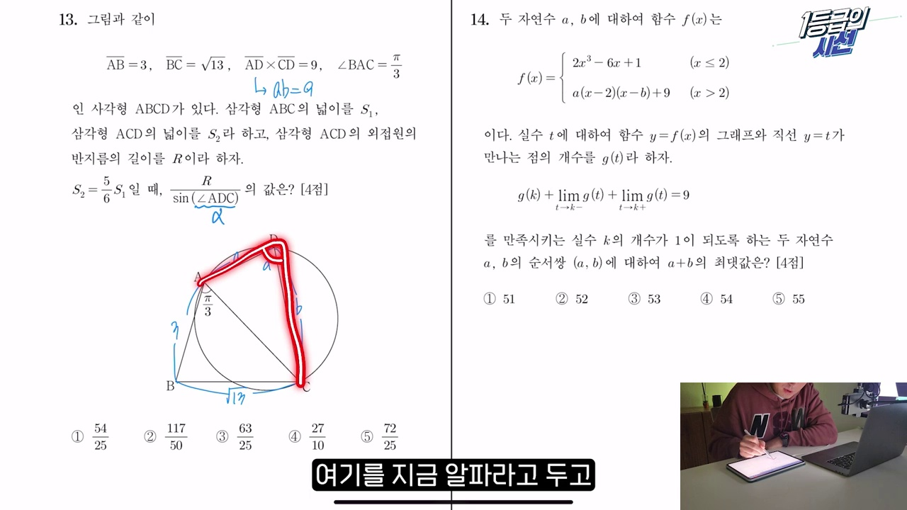
학생들이 시험장에서 가장 흠칫하는 삼각함수 활용 킬러 문항을 소개하고, 1등급 학생들의 생각 차이를 밝힙니다.
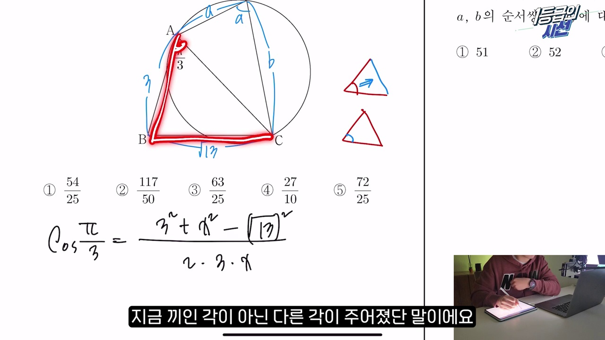
주어진 길이(3, √13), 특수각 π/3, 넓이 비율 조건 및 구하고자 하는 각 α를 도형에 명확히 표기합니다.
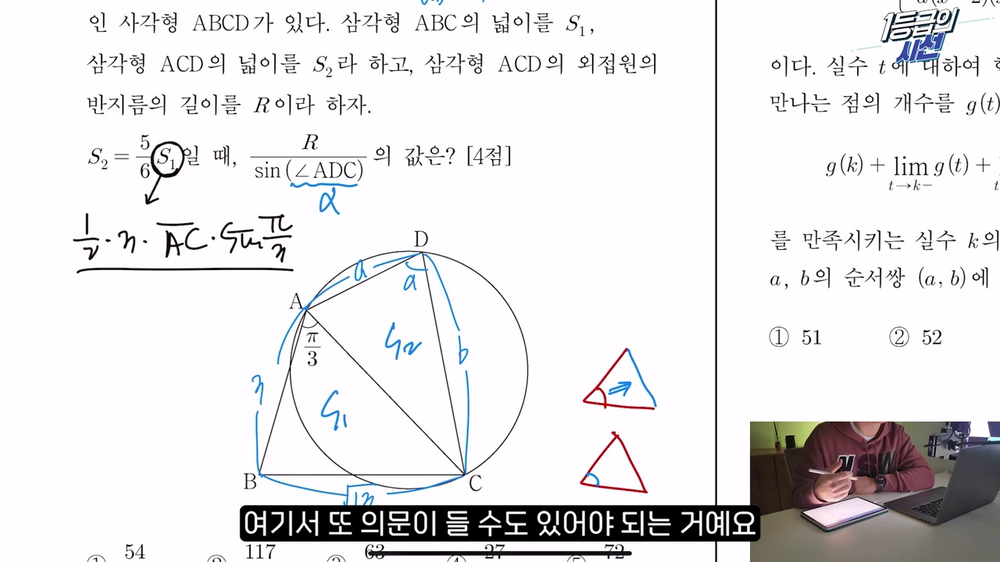
"각이 주어졌다고 무조건 코사인 법칙을 쓰는 것이 아니다!" 세 변과 한 각의 4요소 중 3요소가 채워졌는지를 점검하는 필연적 이유를 제시합니다.
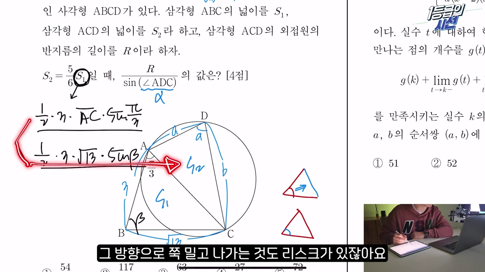
S1을 표현할 때 공통선분을 미지수로 둘지, 각을 미지수로 둘지 선택의 갈림길을 짚어냅니다.
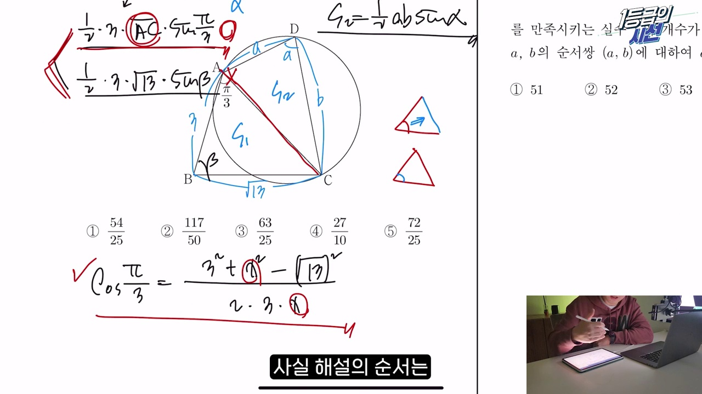
공통선분은 2개 이상의 삼각형에 동시에 공유되므로, 이를 확정하면 인접 삼각형의 미지수가 도미노처럼 풀림을 증명합니다.
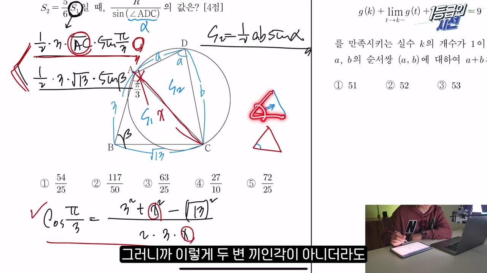
비끼인각 코사인법칙으로부터 x^2 - 3x - 4 = 0이라는 깔끔한 2차 방정식을 도출합니다.
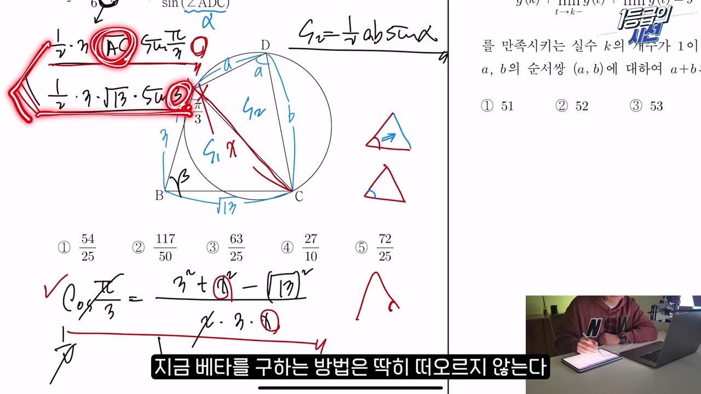
(x - 4)(x + 1) = 0 으로부터 공통선분의 길이가 x = 4로 명쾌하게 확정됩니다.
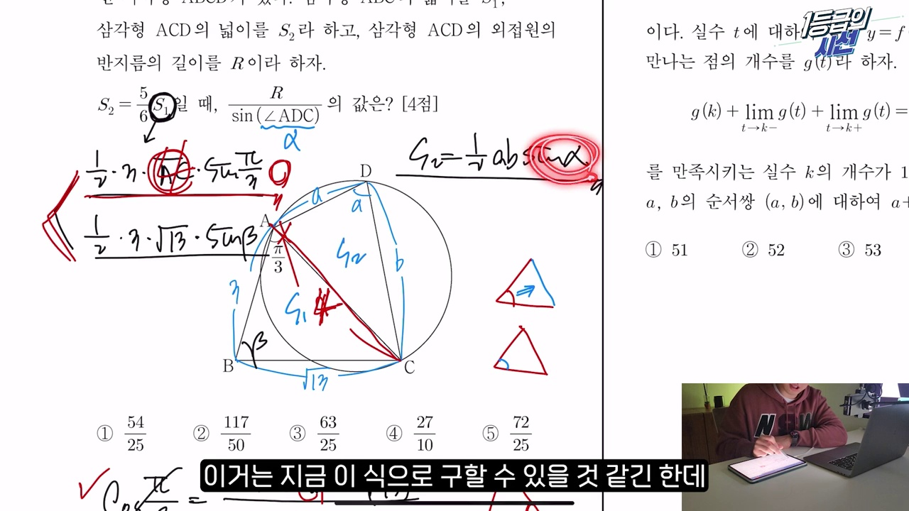
사인법칙을 결합하여 각의 크기를 몰라도 대변과 비율 관계만으로 각을 치환하는 테크닉을 배웁니다.
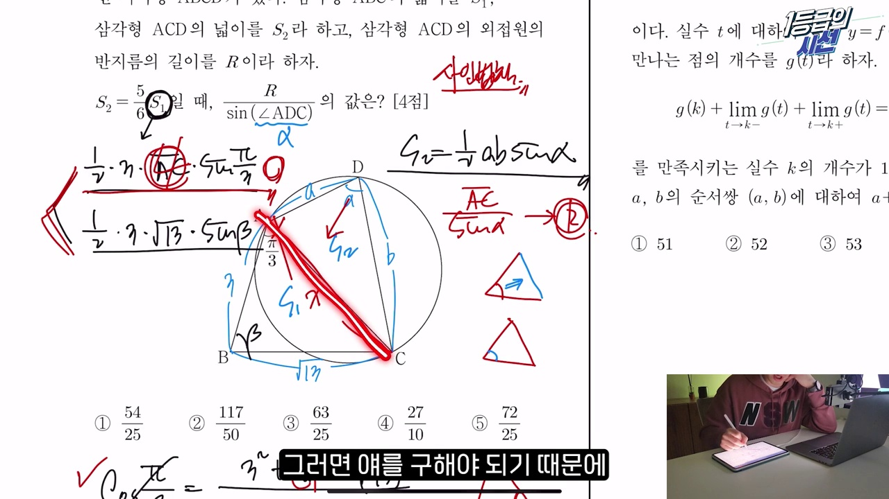
넓이 비율과 사인법칙을 결합하여 평가원 정답을 실수 없이 완벽하게 계산합니다.
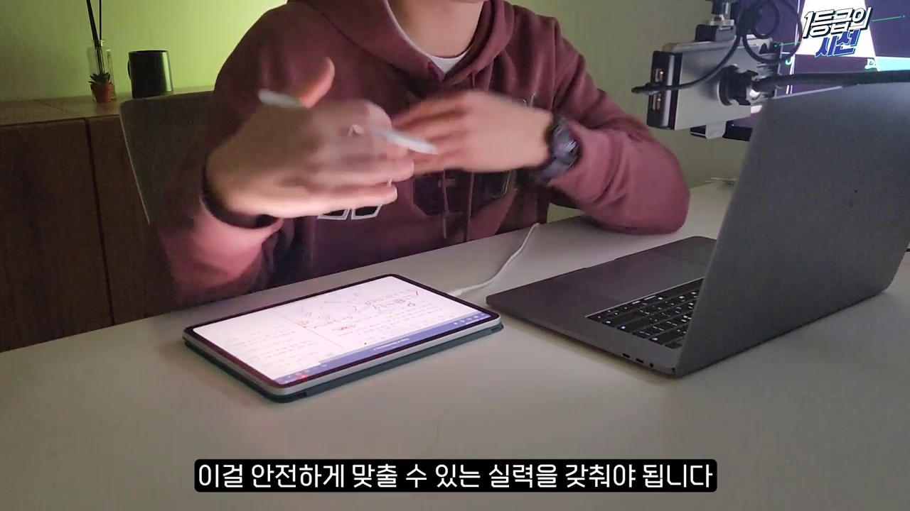
"선택지가 많을수록 정보량이 많은 미지수를 선택하라!"는 1등급의 황금 규칙을 마스터 카드로 최종 정리합니다.
1. 비(非)끼인각에서의 코사인 법칙 2차 방정식 유도
삼각형 $ABC$에서 $\overline{AB} = 3$, $\overline{AC} = \sqrt{13}$, $\angle B = \frac{\pi}{3}$가 주어졌을 때, 마주보는 대변에 대해 코사인 법칙을 적용하면:
$$\overline{AC}^2 = \overline{AB}^2 + \overline{BC}^2 - 2 \cdot \overline{AB} \cdot \overline{BC} \cdot \cos B$$ $$13 = 3^2 + x^2 - 2 \cdot 3 \cdot x \cdot \cos\left(\frac{\pi}{3}\right)$$ $$13 = 9 + x^2 - 3x \iff x^2 - 3x - 4 = 0$$ $$(x - 4)(x + 1) = 0 \implies x = 4 \quad (\because x > 0)$$따라서 공통선분 $\overline{BC}$의 길이는 정확히 $4$가 됩니다!
2. 왜 각 $\beta$ 대신 변 $x$를 미지수로 두어야 하는가?
만약 넓이를 $S_1 = \frac{1}{2} \cdot 3 \cdot \sqrt{13} \cdot \sin \beta$로 표현하면, $\beta$는 삼각형 $ABC$ 내부에만 갇혀 있어 인접 삼각형 $ACD$와의 어떠한 기하학적 연결 고리도 형성하지 못합니다. 반면 공통변 $\overline{BC}$를 구하면 전체 사각형의 외접원 및 $S_2$의 넓이와 직결되어 문제가 한 번에 해결됩니다.
# -*- coding: utf-8 -*-
"""
Manim Community Animation Script: Triangle Geometry - The Inevitable Thinking Process
Topic: 2024 CSAT Math #13 In-Depth Analysis (Sine & Cosine Rule Decision Matrix)
Run with: manim -pql sine_cosine_rule_necessity_manim.py SineCosineNecessityScene
"""
from manim import *
import numpy as np
class SineCosineNecessityScene(Scene):
def construct(self):
# 1. Title
title = Title(
r"도형 문제를 풀 때 최상위권들이 \textquotedblleft 반드시\textquotedblright\ 하는 생각",
include_underline=True,
font_size=30
)
subtitle = Text(
"2024 수능 13번 심층 분석: 공통선분과 미지수 선택의 필연성",
font_size=19,
color=GRAY_B
).next_to(title, DOWN, buff=0.2)
self.play(Write(title), FadeIn(subtitle))
self.wait(1.5)
self.play(FadeOut(subtitle), title.animate.scale(0.8).to_corner(UL))
# 2. Geometric Diagram Setup (Triangle ABC and Adjacent Triangle ACD)
# B at origin (0,0), A at (3*cos(60), 3*sin(60)) = (1.5, 3*sqrt(3)/2)
# C at (4, 0)
# AB = 3, BC = 4, AC = sqrt(9 + 16 - 2*3*4*0.5) = sqrt(25 - 12) = sqrt(13)
scale = 0.9
pB = np.array([-2.5, -1.0, 0])
pA = pB + np.array([3.0 * np.cos(np.pi / 3), 3.0 * np.sin(np.pi / 3), 0]) * scale
pC = pB + np.array([4.0, 0, 0]) * scale
pD = pC + np.array([1.8, 2.2, 0]) * scale
# Vertices & Labels
dotB = Dot(pB, color=WHITE, radius=0.07)
dotA = Dot(pA, color=YELLOW, radius=0.07)
dotC = Dot(pC, color=GREEN, radius=0.07)
dotD = Dot(pD, color=CYAN, radius=0.07)
lblB = MathTex(r"B", font_size=20).next_to(dotB, DOWN+LEFT, buff=0.1)
lblA = MathTex(r"A", font_size=20).next_to(dotA, UP, buff=0.1)
lblC = MathTex(r"C", font_size=20).next_to(dotC, DOWN, buff=0.1)
lblD = MathTex(r"D", font_size=20).next_to(dotD, UP+RIGHT, buff=0.1)
# Edges
edge_AB = Line(pB, pA, color=BLUE_B, stroke_width=3)
edge_BC = Line(pB, pC, color=GOLD, stroke_width=3.5) # Common segment x = 4
edge_AC = Line(pA, pC, color=RED_B, stroke_width=3) # Length sqrt(13)
edge_CD = Line(pC, pD, color=CYAN, stroke_width=2.5)
edge_AD = Line(pA, pD, color=CYAN, stroke_width=2.5)
# Angle at B = pi/3
angle_B = Angle(edge_BC, edge_AB, radius=0.45, color=YELLOW)
lbl_angle_B = MathTex(r"\frac{\pi}{3}", color=YELLOW, font_size=18).next_to(angle_B, UP+RIGHT, buff=0.05)
# Length labels
lbl_len_AB = MathTex(r"3", color=BLUE_B, font_size=18).next_to(edge_AB.get_center(), UP+LEFT, buff=0.1)
lbl_len_AC = MathTex(r"\sqrt{13}", color=RED_B, font_size=18).next_to(edge_AC.get_center(), UP+RIGHT, buff=0.1)
lbl_len_BC = MathTex(r"x = \overline{BC}", color=GOLD, font_size=18).next_to(edge_BC.get_center(), DOWN, buff=0.15)
tri_group = VGroup(
edge_AB, edge_BC, edge_AC, edge_CD, edge_AD,
dotB, dotA, dotC, dotD,
lblB, lblA, lblC, lblD,
angle_B, lbl_angle_B,
lbl_len_AB, lbl_len_AC, lbl_len_BC
).to_edge(LEFT, buff=0.8)
self.play(Create(edge_AB), Create(edge_BC), Create(edge_AC), FadeIn(dotA, dotB, dotC), Write(VGroup(lblA, lblB, lblC)))
self.play(Create(angle_B), Write(lbl_angle_B), Write(lbl_len_AB), Write(lbl_len_AC), Write(lbl_len_BC))
self.wait(1)
# 3. Deriving Cosine Rule with non-included angle
math_steps = VGroup(
Text("★ 1단계: 비끼인각 코사인 법칙의 필연성", font_size=18, color=GOLD),
MathTex(r"(\sqrt{13})^2 = 3^2 + x^2 - 2 \cdot 3 \cdot x \cdot \cos\left(\frac{\pi}{3}\right)", font_size=17),
MathTex(r"13 = 9 + x^2 - 3x", font_size=17, color=BLUE_B),
MathTex(r"x^2 - 3x - 4 = 0", font_size=18, color=YELLOW),
MathTex(r"(x - 4)(x + 1) = 0 \implies x = 4", font_size=18, color=GREEN_B),
Text("★ 2단계: 공통선분 결정 후 도미노 연쇄 해결", font_size=18, color=GOLD),
MathTex(r"\overline{BC} = 4 \text{ 가 확정되며 인접 삼각형 정보 100\% 복원!}", font_size=16, color=WHITE),
).arrange(DOWN, aligned_edge=LEFT, buff=0.18).to_edge(RIGHT, buff=0.6)
bg_card = SurroundingRectangle(math_steps, color=BLUE_E, fill_color=BLACK, fill_opacity=0.88, buff=0.25)
self.play(FadeIn(bg_card), Write(math_steps[:5]))
self.wait(1.5)
# Show adjacent triangle
self.play(Create(edge_CD), Create(edge_AD), FadeIn(dotD), Write(lblD), Write(math_steps[5:]))
self.wait(3)
"삼차함수에만 비율관계가 있는 게 아니다! 삼각함수 1주기(8칸 박스) 안에도 완벽한 황금 비율이 존재한다!"
수능 평가원 킬러 삼각방정식을 3초 만에 암산하는 3대 절대 법칙:
높이 절반($y=1/2$) 가로 $1:2$ 분할($x=\pi/6$) · 높이 $\frac{\sqrt{3}}{2}$ 가로 $2:1$ 분할($x=\pi/3$) · 높이 $\frac{\sqrt{2}}{2}$ 정중앙($x=\pi/4$)을 실시간 인터랙티브 시뮬레이터로 완벽 체득합니다.
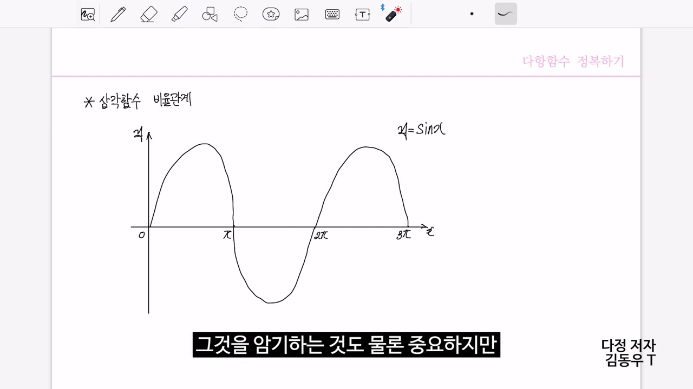
삼차함수에만 있는 줄 알았던 비율관계가 수능 킬러 삼각함수 그래프에도 동일하게 적용됨을 밝힙니다.
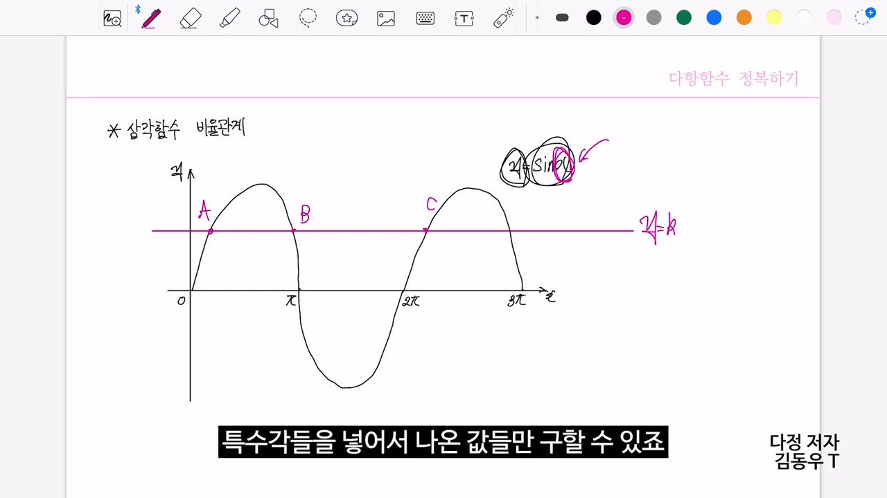
삼차함수의 극값-변곡점 $1:1:1$ 분할과 삼각함수의 4분주기 분할 구조를 직관적으로 비교합니다.
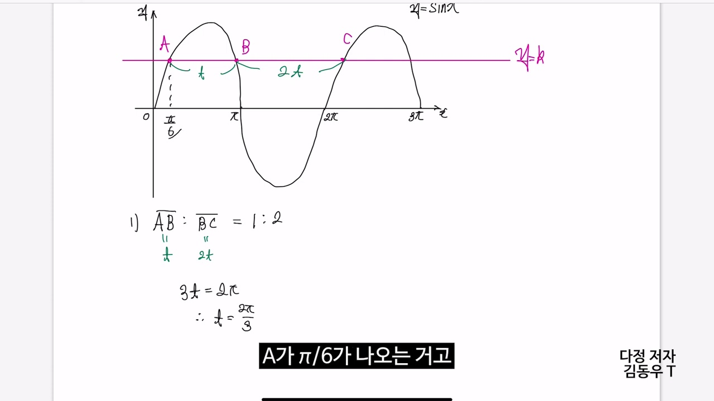
진폭 $A$와 주기 $T$에 의해 결정되는 가로 4등분, 세로 2등분의 직사각형 8칸 박스를 작도합니다.
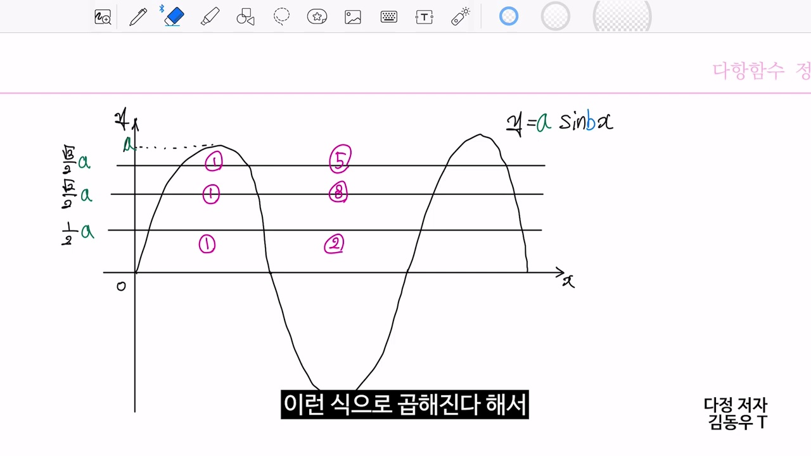
$\sin 30^\circ = 1/2$, $\sin 45^\circ = \sqrt{2}/2$, $\sin 60^\circ = \sqrt{3}/2$가 박스 내에서 어떻게 가로 길이를 분할하는지 시각화합니다.
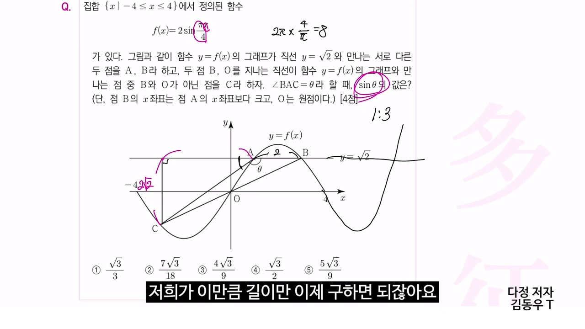
높이가 절반($y=1/2$)일 때 가로축은 정확히 $1/3$과 $2/3$로 쪼개지는 $1:2$ 비율이 성립함을 엄밀히 증명합니다.
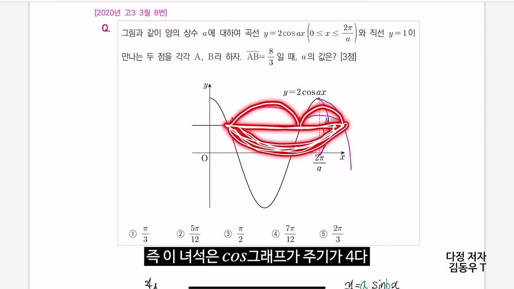
중심선과의 교점(변곡점)과 극대/극소(대칭축)를 기준으로 한 좌우 대칭성을 공식화합니다.
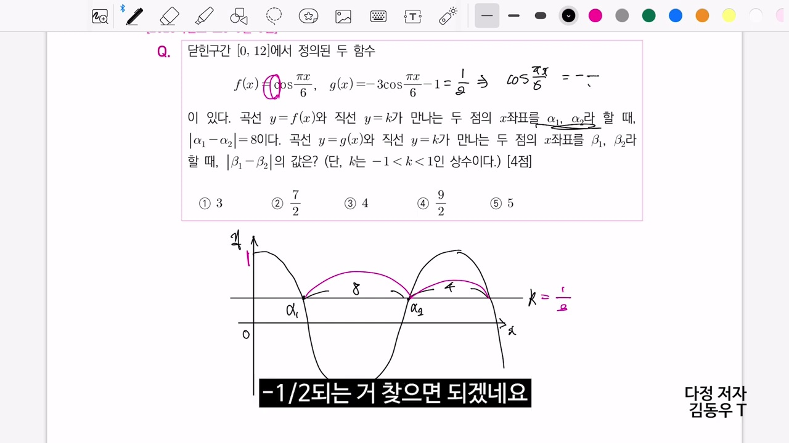
실제 모의고사 기출문제에서 방정식을 세우지 않고 8칸 박스 눈금만으로 근을 암산하는 시연을 보입니다.
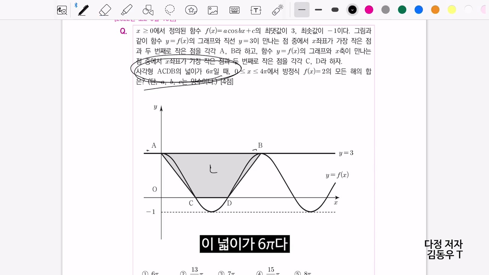
주기 $\omega$와 평행이동이 섞인 고난도 4점 문항에서 비율관계를 통해 미지수를 일거에 소거합니다.
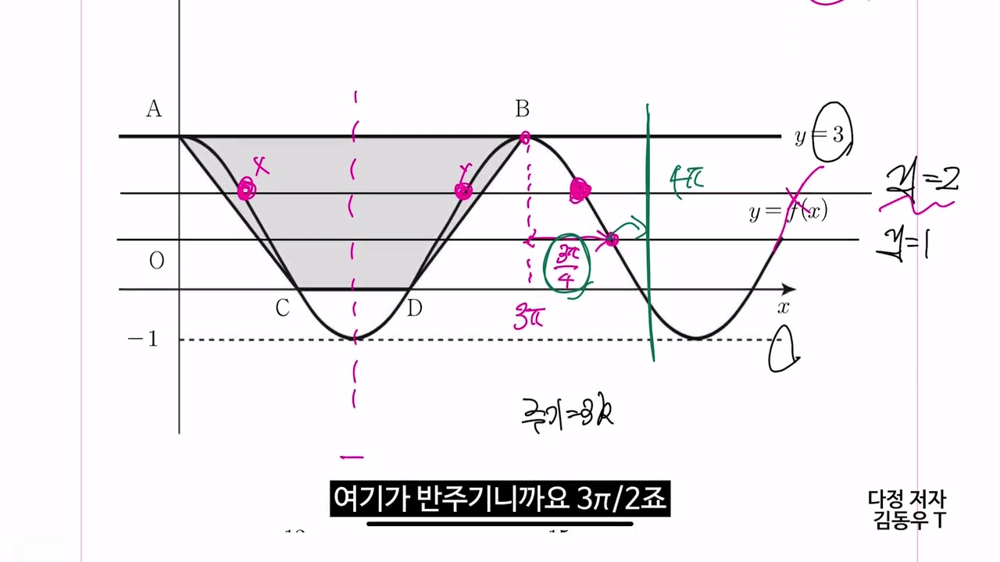
3등분점($1/2, \sqrt{3}/2$)과 2등분점($\sqrt{2}/2$)을 외우는 암기법을 정리하며 강의를 마무리합니다.
1. 삼각함수 1주기의 8칸 분할 구조
$y = A \sin(\omega x) + B$의 기본 주기 $T = \frac{2\pi}{\omega}$는 $x$축 방향으로 $4$등분되어 각 구간의 길이는 $\frac{T}{4}$가 됩니다. 진폭 $A$에 의해 세로 방향으로 $2$등분되므로, 전체 1주기는 $4 \times 2 = 8$칸의 직사각형 매트릭스로 분할됩니다.
2. 높이 절반($y = A/2$)의 $1 : 2$ 가로 분할 증명
원점 $(0,0)$에서 극대점 $(\pi/2, 1)$까지의 1사분면 구간에서:
$$\sin x = \frac{1}{2} \iff x = \frac{\pi}{6} = \frac{1}{3} \times \frac{\pi}{2}$$따라서 원점부터 $x = \pi/6$까지의 거리는 $1$단위이고, $x = \pi/6$부터 대칭축 $x = \pi/2$까지의 거리는:
$$\frac{\pi}{2} - \frac{\pi}{6} = \frac{2\pi}{6} = \frac{\pi}{3} = 2\text{단위}$$즉, 가로 길이가 정확히 $1 : 2$로 내분됩니다!
3. 높이 $\frac{\sqrt{3}}{2}$의 $2 : 1$ 가로 분할 증명
$$\sin x = \frac{\sqrt{3}}{2} \iff x = \frac{\pi}{3} = \frac{2}{3} \times \frac{\pi}{2}$$원점에서 $2$단위, 극대점까지 $1$단위이므로 $2 : 1$ 내분이 성립합니다.
# -*- coding: utf-8 -*-
"""
Manim Community Animation Script: Trigonometric Function Ratio Relations (8-Box Matrix)
Topic: Special Angles and Ratio Relations in Trig Graphs (y = sin x)
Run with: manim -pql trig_ratio_relations_manim.py TrigRatioRelationsScene
"""
from manim import *
import numpy as np
class TrigRatioRelationsScene(Scene):
def construct(self):
# 1. Title & Introduction
title = Title(
r"삼각함수에서도 \textquotedblleft 비율관계\textquotedblright 를 사용하는 방법",
include_underline=True,
font_size=32
)
subtitle = Text(
"8칸 박스법과 높이 절반 (y = 1/2) 1 : 2 황금 분할 원리",
font_size=20,
color=GRAY_B
).next_to(title, DOWN, buff=0.2)
self.play(Write(title), FadeIn(subtitle))
self.wait(1.5)
self.play(FadeOut(subtitle), title.animate.scale(0.8).to_corner(UL))
# 2. Setup Axes for one full period (0 to 2*pi)
axes = Axes(
x_range=[-0.2, 2 * np.pi + 0.5, np.pi / 2],
y_range=[-1.4, 1.4, 0.5],
x_length=7.5,
y_length=5.0,
axis_config={"color": BLUE_D, "include_numbers": False},
).to_edge(LEFT, buff=0.8)
# X-axis ticks & labels
x_labels = VGroup(
MathTex(r"0", font_size=18).next_to(axes.c2p(0, 0), DOWN + LEFT, buff=0.1),
MathTex(r"\frac{\pi}{2}", font_size=18).next_to(axes.c2p(np.pi / 2, 0), DOWN, buff=0.15),
MathTex(r"\pi", font_size=18).next_to(axes.c2p(np.pi, 0), DOWN, buff=0.15),
MathTex(r"\frac{3\pi}{2}", font_size=18).next_to(axes.c2p(3 * np.pi / 2, 0), DOWN, buff=0.15),
MathTex(r"2\pi", font_size=18).next_to(axes.c2p(2 * np.pi, 0), DOWN, buff=0.15),
)
y_labels = VGroup(
MathTex(r"1", font_size=18).next_to(axes.c2p(0, 1), LEFT, buff=0.15),
MathTex(r"0.5", font_size=16, color=YELLOW).next_to(axes.c2p(0, 0.5), LEFT, buff=0.15),
MathTex(r"-1", font_size=18).next_to(axes.c2p(0, -1), LEFT, buff=0.15),
)
self.play(Create(axes), Write(x_labels), Write(y_labels))
# 3. 8-Box Grid (4 columns, 2 rows)
grid_boxes = VGroup()
for i in range(4):
x_start = i * (np.pi / 2)
for j in [0, -1]:
p1 = axes.c2p(x_start, j)
p2 = axes.c2p(x_start + np.pi / 2, j + 1)
rect = Rectangle(
width=abs(axes.c2p(np.pi / 2, 0)[0] - axes.c2p(0, 0)[0]),
height=abs(axes.c2p(0, 1)[1] - axes.c2p(0, 0)[1]),
stroke_color=BLUE_E,
stroke_width=1.2,
stroke_opacity=0.6,
fill_opacity=0.04,
fill_color=BLUE
).move_to((p1 + p2) / 2)
grid_boxes.add(rect)
self.play(Create(grid_boxes))
self.wait(1)
# 4. Plot y = sin(x)
sin_curve = axes.plot(
lambda x: np.sin(x),
x_range=[0, 2 * np.pi],
color=CYAN,
stroke_width=3.5
)
curve_label = MathTex(r"y = \sin x", color=CYAN, font_size=24).next_to(axes.c2p(np.pi / 2, 1), UP, buff=0.1)
self.play(Create(sin_curve), Write(curve_label))
self.wait(1)
# 5. Highlight Ratio at y = 1/2: x = pi/6 (1 : 2 split)
line_half = axes.plot(lambda x: 0.5, x_range=[0, np.pi], color=YELLOW, stroke_width=2)
line_half.set_stroke(opacity=0.7)
dot_p6 = Dot(axes.c2p(np.pi / 6, 0.5), color=RED, radius=0.08)
dot_p2 = Dot(axes.c2p(np.pi / 2, 1.0), color=GOLD, radius=0.08)
v_line1 = DashedLine(axes.c2p(np.pi / 6, 0), axes.c2p(np.pi / 6, 0.5), color=RED_B, stroke_width=1.5)
v_line2 = DashedLine(axes.c2p(np.pi / 2, 0), axes.c2p(np.pi / 2, 1.0), color=GOLD_B, stroke_width=1.5)
lbl_p6 = MathTex(r"\frac{\pi}{6}", color=RED, font_size=18).next_to(axes.c2p(np.pi / 6, 0), DOWN, buff=0.3)
# Ratio Bracket 1 : 2
brace1 = BraceBetweenPoints(axes.c2p(0, 0), axes.c2p(np.pi / 6, 0), direction=UP, buff=0.1)
brace2 = BraceBetweenPoints(axes.c2p(np.pi / 6, 0), axes.c2p(np.pi / 2, 0), direction=UP, buff=0.1)
ratio1 = MathTex(r"1", color=RED, font_size=18).next_to(brace1, UP, buff=0.05)
ratio2 = MathTex(r"2", color=YELLOW, font_size=18).next_to(brace2, UP, buff=0.05)
self.play(Create(line_half))
self.play(FadeIn(dot_p6), Create(v_line1), Write(lbl_p6))
self.play(Create(brace1), Write(ratio1), Create(brace2), Write(ratio2))
self.wait(1.5)
# 6. Theory Card
theory_box = VGroup(
Text("★ 삼각함수 1:2 분할 정리", font_size=18, color=GOLD),
MathTex(r"\sin x = \frac{1}{2} \iff x = \frac{\pi}{6} = \frac{1}{3} \cdot \frac{\pi}{2}", font_size=18),
MathTex(r"\text{구간 } [0, \pi/2] \text{를 } 1 : 2 \text{로 내분!}", font_size=16, color=YELLOW),
MathTex(r"\sin x = \frac{\sqrt{3}}{2} \iff x = \frac{\pi}{3} \text{ (2 : 1 내분)}", font_size=16, color=GREEN_B),
MathTex(r"\sin x = \frac{\sqrt{2}}{2} \iff x = \frac{\pi}{4} \text{ (1 : 1 정중앙)}", font_size=16, color=BLUE_B),
).arrange(DOWN, aligned_edge=LEFT, buff=0.2).to_edge(RIGHT, buff=0.6)
bg_card = SurroundingRectangle(theory_box, color=BLUE_E, fill_color=BLACK, fill_opacity=0.8, buff=0.25)
self.play(FadeIn(bg_card), Write(theory_box))
self.wait(3)
"구간별 수식을 일일이 세우다 계산 실수로 무너지지 마라!"
대치동·목동 최상위권이 복잡한 합성함수 $y = f(g(x))$를 10초 만에 완벽 작도하는 비밀 병기:
속함수 $t = g(x)$와 겉함수 $y = f(t)$의 공통 $t$축 직교 결합 · 턴어라운드(Turn-around) 극값 전이 · 방정식 $f(g(x))=k$ 실근 개수 초스피드 카운팅을 실시간 동적 N축 엔진으로 마스터합니다.
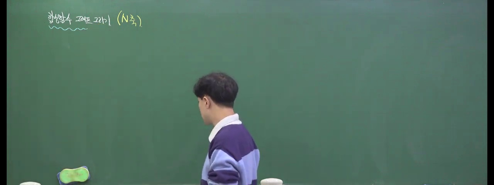
고1 내신 킬러 문제에서 합성함수 작도가 왜 변별력의 핵심인지 소개합니다.
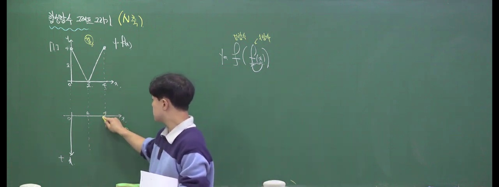
입력 $x$가 $g$를 거쳐 매개변수 $t$가 되고, $t$가 $f$를 거쳐 최종 $y$가 되는 데이터 흐름을 도식화합니다.
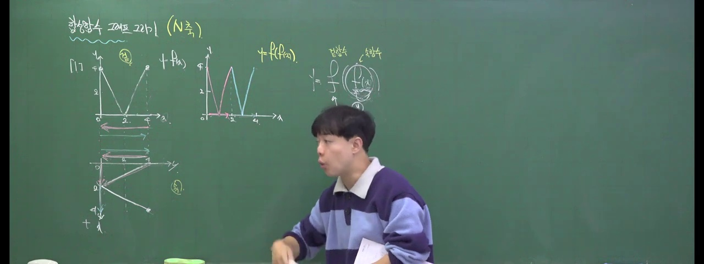
두 직교좌표계를 결합하여 'N'자 형태의 좌표 평면을 구성하는 세팅법을 전수합니다.
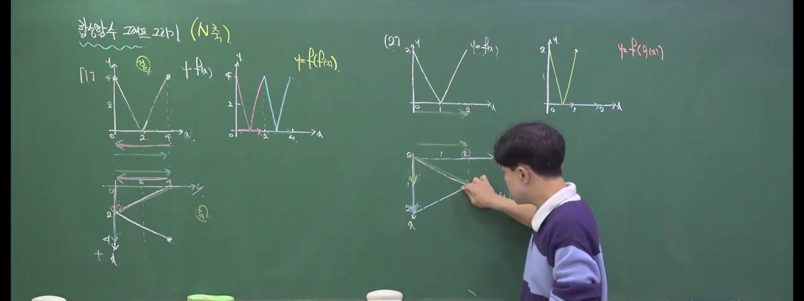
$t$가 증가할 때는 정방향, $t$가 감소할 때는 역방향으로 겉함수의 개형이 그려지는 반전 메커니즘을 설명합니다.
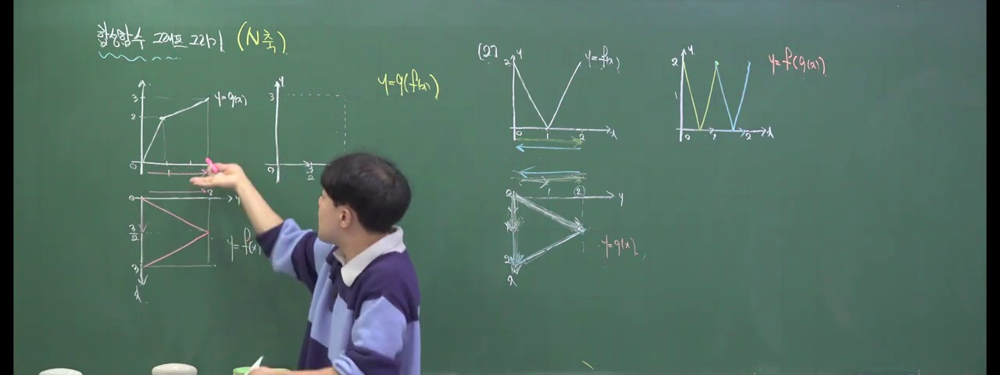
절댓값 및 삼각형 형태의 일차함수 합성을 단 10초 만에 완벽 작도하는 테크닉을 시연합니다.
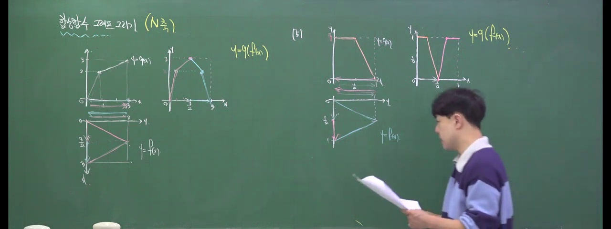
포물선의 꼭짓점에서 $t$가 방향을 바꾸는 턴어라운드(Turn-around) 지점의 극값 생성 과정을 추적합니다.
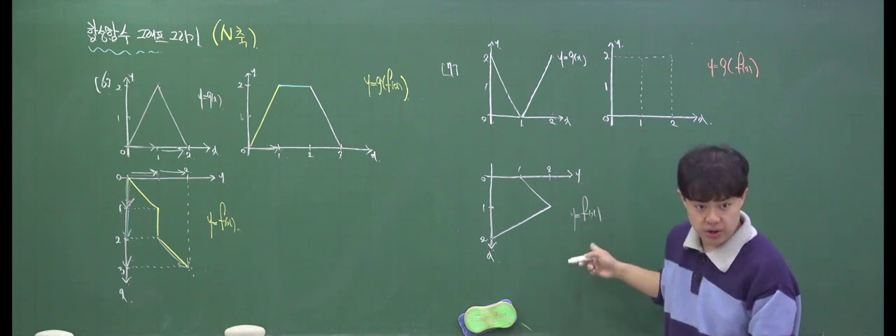
왕복 운동하는 속함수가 겉함수를 무한 반복 재생하는 원리를 밝힙니다.
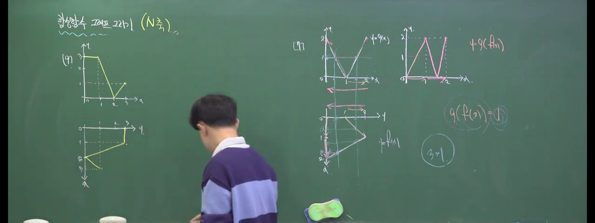
그래프 작도 후 수평선과의 교점을 통해 복잡한 합성방정식의 실근 개수를 암산으로 해결합니다.
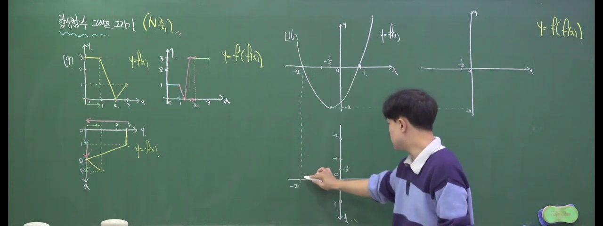
실제 명문고 내신 기출 최고난도 문항을 N축으로 단번에 무너뜨리는 실전을 보여줍니다.
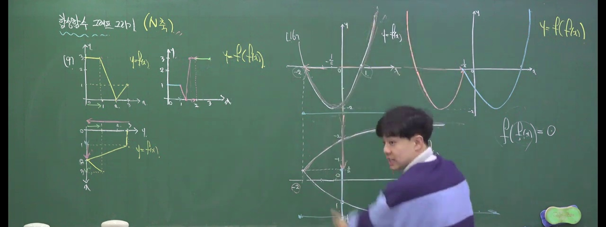
속함수와 겉함수의 결합 공식과 주의사항을 마스터 차트로 최종 압축합니다.
1. 축의 직교 결합 (N-Shape Coordinate Binding)
보통의 그래프는 가로축이 $x$, 세로축이 $y$이지만, N축 기법에서는 속함수의 출력 $t = g(x)$가 세로축이 되고, 겉함수 $y = f(t)$의 정의역 $t$를 이 세로축과 동일한 공통축으로 설정합니다. 이를 통해 $x \to t \to y$의 변환 과정이 좌표축 상에서 'N'자 궤적을 그리며 즉시 시각화됩니다.
2. 턴어라운드(Turn-around)와 합성함수 극값 정리
미분 가능한 함수에서 연쇄법칙에 의해:
$$(f(g(x)))' = f'(g(x)) \cdot g'(x)$$도함수가 $0$이 되는 지점은 크게 두 부류로 나뉩니다:
3. 방정식 $f(g(x)) = k$ 실근 개수 판정
1단계: 겉함수에서 $f(t) = k$를 만족하는 근 $t_1, t_2, \dots, t_m$을 구합니다.
2단계: 속함수 그래프에서 수평선 $g(x) = t_1, g(x) = t_2, \dots$를 긋고 총 교점 개수를 합산합니다. N축을 이용하면 이 과정을 눈으로 3초 만에 완료할 수 있습니다.
# -*- coding: utf-8 -*-
"""
Manim Community Animation Script: Composite Function Graphing via N-Axis Skill
Topic: N-Axis Coordinate Transformation and Dynamic Trajectory Mapping
Run with: manim -pql composite_function_n_axis_manim.py CompositeFunctionNAxisScene
"""
from manim import *
import numpy as np
class CompositeFunctionNAxisScene(Scene):
def construct(self):
# 1. Title
title = Title(
r"합성함수 그래프 그리기: N축 스킬",
include_underline=True,
font_size=32
)
subtitle = Text(
"속함수 t = g(x)와 겉함수 y = f(t)의 공통 t축 직교 결합",
font_size=20,
color=GRAY_B
).next_to(title, DOWN, buff=0.2)
self.play(Write(title), FadeIn(subtitle))
self.wait(1.5)
self.play(FadeOut(subtitle), title.animate.scale(0.8).to_corner(UL))
# 2. Dual Coordinate System Setup (N-Axis)
# Bottom-left: g(x) with horizontal x and vertical t
axes_g = Axes(
x_range=[-0.5, 4.5, 1],
y_range=[-0.5, 4.5, 1],
x_length=3.8,
y_length=3.8,
axis_config={"color": BLUE_C, "include_numbers": True, "font_size": 14},
).to_corner(DL, buff=1.0)
labels_g = axes_g.get_axis_labels(x_label="x", y_label="t")
# Top-right: f(t) rotated so horizontal axis is t
axes_f = Axes(
x_range=[-0.5, 4.5, 1],
y_range=[-0.5, 4.5, 1],
x_length=3.8,
y_length=3.8,
axis_config={"color": GREEN_C, "include_numbers": True, "font_size": 14},
).to_corner(UR, buff=1.0)
labels_f = axes_f.get_axis_labels(x_label="t", y_label="y")
self.play(Create(axes_g), Write(labels_g), Create(axes_f), Write(labels_f))
self.wait(1)
# 3. Inner Function: g(x) = Piecewise Linear or V-Shape (e.g. 2 - |x - 2|)
# Let g(x) be a triangle from (0,0) -> (2,3) -> (4,0)
g_pts = [axes_g.c2p(0, 0), axes_g.c2p(2, 3), axes_g.c2p(4, 0)]
curve_g = VMobject(color=BLUE_A, stroke_width=3.5)
curve_g.set_points_as_corners(g_pts)
lbl_g = MathTex(r"t = g(x)", color=BLUE_A, font_size=20).next_to(axes_g.c2p(2, 3), UP, buff=0.1)
# 4. Outer Function: f(t) = (t - 1)^2 / 2 or Piecewise
# Let f(t) be (0, 1) -> (1.5, 3.5) -> (3, 0)
f_pts = [axes_f.c2p(0, 1), axes_f.c2p(1.5, 3.5), axes_f.c2p(3, 0), axes_f.c2p(4, 2)]
curve_f = VMobject(color=GREEN_A, stroke_width=3.5)
curve_f.set_points_as_corners(f_pts)
lbl_f = MathTex(r"y = f(t)", color=GREEN_A, font_size=20).next_to(axes_f.c2p(1.5, 3.5), UP, buff=0.1)
self.play(Create(curve_g), Write(lbl_g), Create(curve_f), Write(lbl_f))
self.wait(1)
# 5. Explaining N-Axis Dynamic Mapping
info_panel = VGroup(
Text("★ N축 스킬 3단계 알고리즘", font_size=18, color=GOLD),
Text("1. 속함수 t = g(x)의 치역 구간 추적", font_size=15, color=WHITE),
MathTex(r"x: 0 \to 2 \implies t: 0 \to 3", font_size=16, color=BLUE_B),
MathTex(r"x: 2 \to 4 \implies t: 3 \to 0 \text{ (턴어라운드!)}", font_size=16, color=RED_B),
Text("2. t 구간을 겉함수 f(t)에 순서대로 대입", font_size=15, color=WHITE),
Text("3. f(g(x)) 극값 = g(x) 턴 지점 + f(t) 극값", font_size=15, color=YELLOW),
).arrange(DOWN, aligned_edge=LEFT, buff=0.18).to_corner(UL, buff=1.0)
bg_info = SurroundingRectangle(info_panel, color=BLUE_E, fill_color=BLACK, fill_opacity=0.85, buff=0.2)
self.play(FadeIn(bg_info), Write(info_panel))
self.wait(3)
"복잡한 이차곡선 연립방정식은 버려라! 기하학적 본질 7가지만 알면 3초 만에 풀린다!"
수능 기하 킬러 문항을 지배하는 7대 절대 정리:
초점 현의 조화평균 $\frac{1}{a} + \frac{1}{b} = \frac{1}{p}$ · 준선 위 두 접선의 $90^\circ$ 직교성 · 접선 마름모 $\overline{FP}=\overline{FT}=\overline{PH}$ · 초점 현 지름원의 준선 접함을 실시간 동적 포물선 엔진으로 완벽 증명합니다.
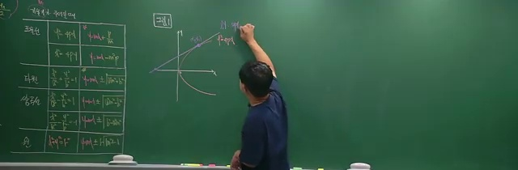
포물선의 기본 정의로부터 유도되는 7가지 강력한 기하학적 무기를 소개합니다.
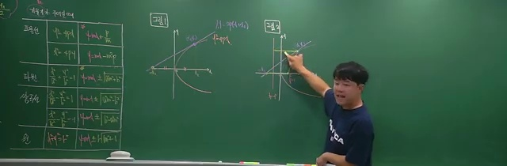
초점을 지나는 직선과 두 초점거리 $\overline{AF}, \overline{BF}$ 사이의 조화평균 관계를 완벽 증명합니다.
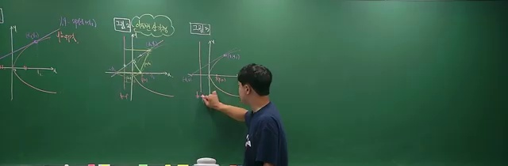
준선 위의 임의의 점에서 그은 두 접선의 기울기 곱이 $-1$이 됨을 판별식과 근과 계수 관계로 증명합니다.
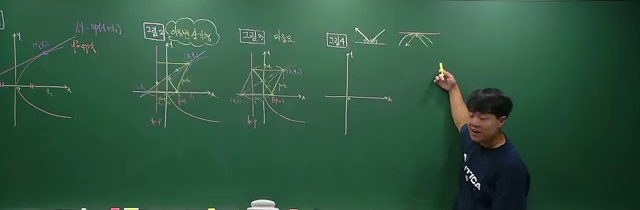
접선이 $x$축과 만나는 점 $T$가 $-x_1$이며, $\triangle FPT$가 이등변삼각형이 되어 마름모가 탄생함을 보입니다.
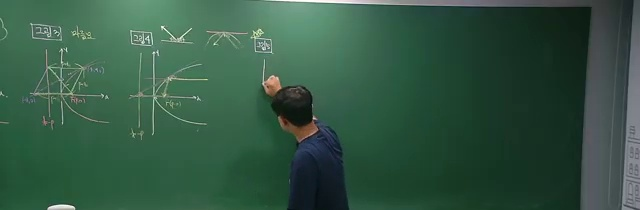
접선과 법선의 각의 이등분선 성질로부터 평행 광선이 초점으로 모이는 광학적 원리를 설명합니다.
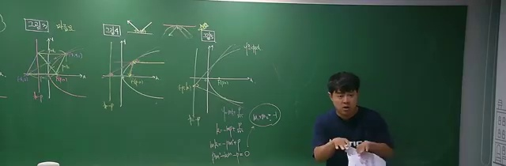
접선에 수직인 법선을 그었을 때 $x$축 위의 발과 수선의 발 사이의 거리가 항상 $2p$로 일정함을 증명합니다.
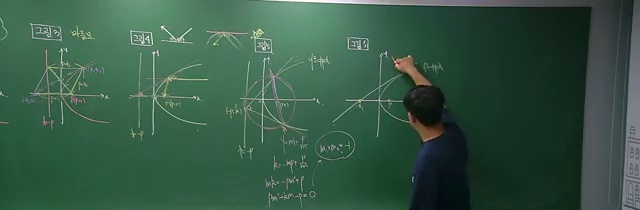
사다리꼴의 중점 연결 정리에 의해 초점 현의 중점에서 준선까지의 거리가 반지름과 같음을 시각화합니다.
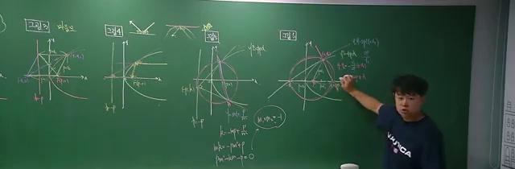
포물선의 활꼴 넓이와 외접 삼각형의 넓이비가 $2:1$임을 아르키메데스의 고전 기하로 확인합니다.
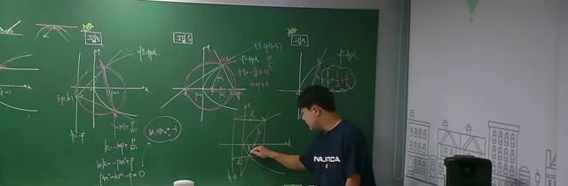
4점 킬러 기하 문제를 복잡한 연립방정식 없이 성질 1~7을 적용하여 암산으로 격파합니다.
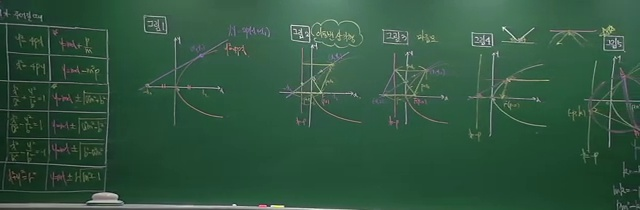
시험 직전 머릿속에 반드시 넣어야 할 포물선의 7가지 기하 공식을 마스터 카드로 최종 정리합니다.
1. 초점현의 조화평균 증명 ($\frac{1}{a} + \frac{1}{b} = \frac{1}{p}$)
초점 $F(p,0)$을 지나는 직선의 기울기를 $m$, 각도를 $\theta$라 하면, 점 $A, B$는 극좌표계에서 $r = \frac{2p}{1 - \cos \theta}$로 표현됩니다. 방향이 반대인 두 점에 대해:
$$a = \frac{2p}{1 - \cos \theta}, \quad b = \frac{2p}{1 - \cos(\theta + \pi)} = \frac{2p}{1 + \cos \theta}$$ $$\frac{1}{a} + \frac{1}{b} = \frac{1 - \cos \theta}{2p} + \frac{1 + \cos \theta}{2p} = \frac{2}{2p} = \frac{1}{p}$$직선의 기울기와 상관없이 **항상 $\frac{1}{p}$로 일정**합니다!
2. 준선 위 접선의 직교성 증명
포물선 $y^2 = 4px$에 접하고 기울기가 $m$인 접선의 방정식은 $y = mx + \frac{p}{m}$입니다. 이 접선이 준선 $x = -p$ 위의 점 $(-p, y_0)$를 지나므로:
$$y_0 = -pm + \frac{p}{m} \iff p m^2 + y_0 m - p = 0$$이 이차방정식의 두 근을 $m_1, m_2$라 하면 근과 계수의 관계에 의해:
$$m_1 m_2 = \frac{-p}{p} = -1$$따라서 준선 위의 임의의 점에서 그은 두 접선은 **언제나 서로 직각($90^\circ$)**을 이룹니다.
3. 접선 마름모 성질
점 $P(x_1, y_1)$에서의 접선 $y_1 y = 2p(x + x_1)$의 $x$절편은 $T(-x_1, 0)$입니다.
$\overline{FT} = p - (-x_1) = x_1 + p$
포물선 정의에 의해 $\overline{FP} = \overline{PH} = x_1 + p$이므로, 사각형 $FPTH$는 네 변의 길이가 같은 **마름모**가 됩니다!
# -*- coding: utf-8 -*-
"""
Manim Community Animation Script: 7 Geometric Properties of Parabolas
Topic: Focal Chords, Directrix Orthogonal Tangents, and Harmonic Mean
Run with: manim -pql parabola_seven_properties_manim.py ParabolaSevenPropertiesScene
"""
from manim import *
import numpy as np
class ParabolaSevenPropertiesScene(Scene):
def construct(self):
# 1. Title
title = Title(
r"포물선의 기하학적 성질 7가지",
include_underline=True,
font_size=32
)
subtitle = Text(
"초점현 조화평균 (1/a + 1/b = 1/p) 과 준선 위 두 접선의 직교성 (90°)",
font_size=20,
color=GRAY_B
).next_to(title, DOWN, buff=0.2)
self.play(Write(title), FadeIn(subtitle))
self.wait(1.5)
self.play(FadeOut(subtitle), title.animate.scale(0.8).to_corner(UL))
# 2. Setup Axes for y^2 = 4px with p = 1
p_val = 1.0
axes = Axes(
x_range=[-2.5, 5.0, 1],
y_range=[-4.0, 4.0, 1],
x_length=6.5,
y_length=5.5,
axis_config={"color": BLUE_D, "include_numbers": True, "font_size": 14},
).to_edge(LEFT, buff=0.8)
# 3. Focus F(p, 0) and Directrix x = -p
focus_dot = Dot(axes.c2p(p_val, 0), color=YELLOW, radius=0.08)
focus_label = MathTex(r"F(p, 0)", color=YELLOW, font_size=18).next_to(focus_dot, DOWN, buff=0.15)
directrix = axes.plot_line_graph(
x_values=[-p_val, -p_val],
y_values=[-3.8, 3.8],
line_color=RED,
stroke_width=2.5,
add_vertex_dots=False
)
dir_label = MathTex(r"x = -p", color=RED, font_size=18).next_to(axes.c2p(-p_val, 3.2), LEFT, buff=0.15)
# 4. Parabola y^2 = 4px (x = y^2 / 4)
y_vals = np.linspace(-3.6, 3.6, 120)
x_vals = (y_vals**2) / (4 * p_val)
parabola_curve = axes.plot_line_graph(
x_values=x_vals,
y_values=y_vals,
line_color=BLUE_B,
stroke_width=3.5,
add_vertex_dots=False
)
parabola_label = MathTex(r"y^2 = 4px", color=BLUE_B, font_size=22).next_to(axes.c2p(4.0, 3.2), RIGHT, buff=0.1)
self.play(Create(axes), Create(directrix), Write(dir_label), FadeIn(focus_dot), Write(focus_label))
self.play(Create(parabola_curve), Write(parabola_label))
self.wait(1)
# 5. Focal Chord AB passing through F(p,0)
# Point A at y = 2 -> x = 1 (A = (1, 2))
# Slope through (1,2) and (1,0) would be vertical; let's pick A = (4, 4) or A with y = 2.5
# Line through (p, 0): y = m*(x - p). Let m = 1 -> y = x - 1
# (x - 1)^2 = 4x -> x^2 - 6x + 1 = 0 -> x = 3 +- 2*sqrt(2)
xA = 3 + 2 * np.sqrt(2)
yA = xA - 1
xB = 3 - 2 * np.sqrt(2)
yB = xB - 1
dotA = Dot(axes.c2p(xA, yA), color=GREEN, radius=0.07)
dotB = Dot(axes.c2p(xB, yB), color=GREEN, radius=0.07)
lblA = MathTex(r"A", color=GREEN, font_size=18).next_to(dotA, UP, buff=0.1)
lblB = MathTex(r"B", color=GREEN, font_size=18).next_to(dotB, DOWN, buff=0.1)
chord_AB = Line(axes.c2p(xA, yA), axes.c2p(xB, yB), color=GOLD, stroke_width=2.5)
self.play(Create(chord_AB), FadeIn(dotA), Write(lblA), FadeIn(dotB), Write(lblB))
self.wait(1)
# 6. Theory Card with 7 Properties
theory_card = VGroup(
Text("★ 포물선의 7대 기하학적 성질", font_size=18, color=GOLD),
MathTex(r"1.\ \frac{1}{\overline{AF}} + \frac{1}{\overline{BF}} = \frac{1}{p} \text{ (조화평균)}", font_size=15, color=WHITE),
MathTex(r"2.\ \text{준선 위에서 그은 두 접선은 } 90^\circ \text{ 직교}", font_size=15, color=YELLOW),
MathTex(r"3.\ \overline{FP} = \overline{FT} = \overline{PH} \text{ (접선 마름모 성질)}", font_size=15, color=WHITE),
MathTex(r"4.\ \text{축에 평행한 광선은 반사되어 초점 } F \text{로 집광}", font_size=15, color=CYAN),
MathTex(r"5.\ \text{법선의 } x\text{절편 길이(Subnormal) } = 2p \text{ 일정}", font_size=15, color=WHITE),
MathTex(r"6.\ \overline{AB}\text{를 지름으로 하는 원은 준선에 접함}", font_size=15, color=GREEN_B),
MathTex(r"7.\ \text{포물선 활꼴 : 외접삼각형 넓이비 } = 2 : 1", font_size=15, color=GOLD_B),
).arrange(DOWN, aligned_edge=LEFT, buff=0.15).to_edge(RIGHT, buff=0.5)
bg_card = SurroundingRectangle(theory_card, color=BLUE_E, fill_color=BLACK, fill_opacity=0.9, buff=0.2)
self.play(FadeIn(bg_card), Write(theory_card))
self.wait(3)
"지수함수와 다항함수는 대수적으로 연립되지 않는다!"
수능 평가원이 킬러 문항에서 요구하는 3대 본질적 해결 열쇠:
평행이동 벡터와 기울기 일치 · $A \cdot a^x = a^{x+\log_a A}$ 평행이동 치환 · 기울기 $m=-1$과 직각이등변 $1:1:\sqrt{2}$ 대칭성을 실시간 인터랙티브 캔버스로 완벽 분석합니다.
직선 $y = -x + k$의 $y$절편 $k$와 지수·로그함수의 평행이동 매개변수를 슬라이더로 조작하며, 직각이등변삼각형 $1:1:\sqrt{2}$에 의한 선분 $\overline{AB}$ 길이 및 삼각형 $\triangle ABC$의 넓이 $S$ 변화를 실시간으로 탐구해보세요.
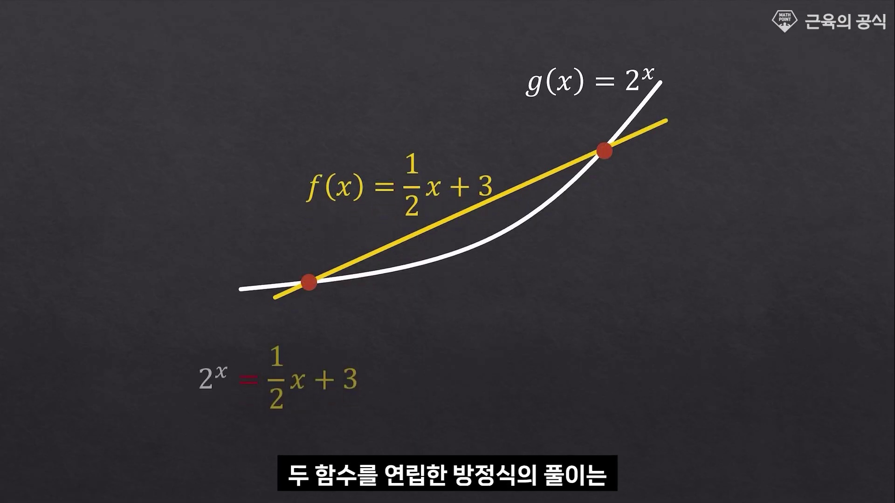
$2^x = \frac{1}{2}x + 3$처럼 지수함수와 다항식은 대수적 연립이 불가능함을 제시합니다.
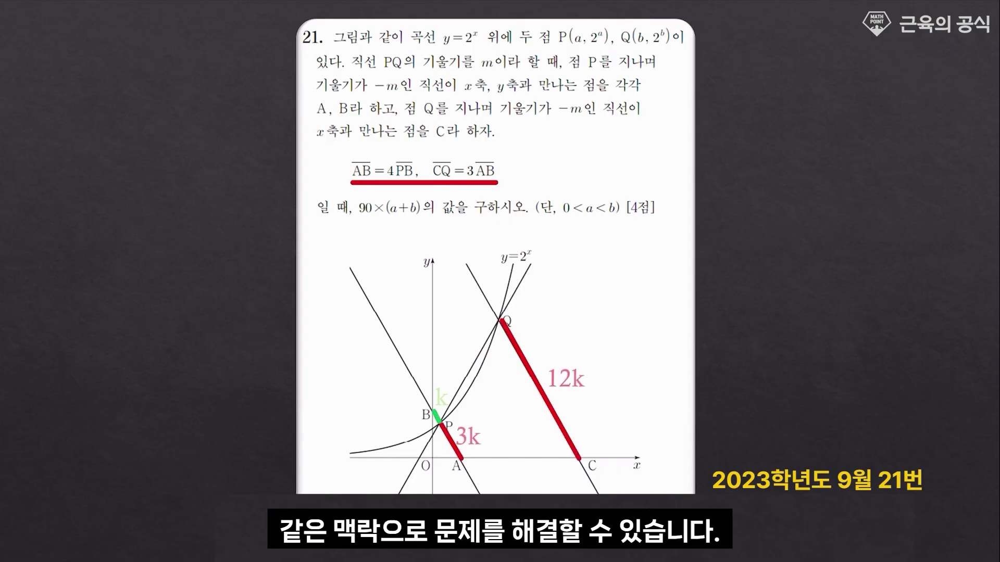
$y=2^x$와 $y=2^{x-2}-1$ 곡선 사이의 $x$축 $+2$, $y$축 $-1$ 이동을 확인합니다.
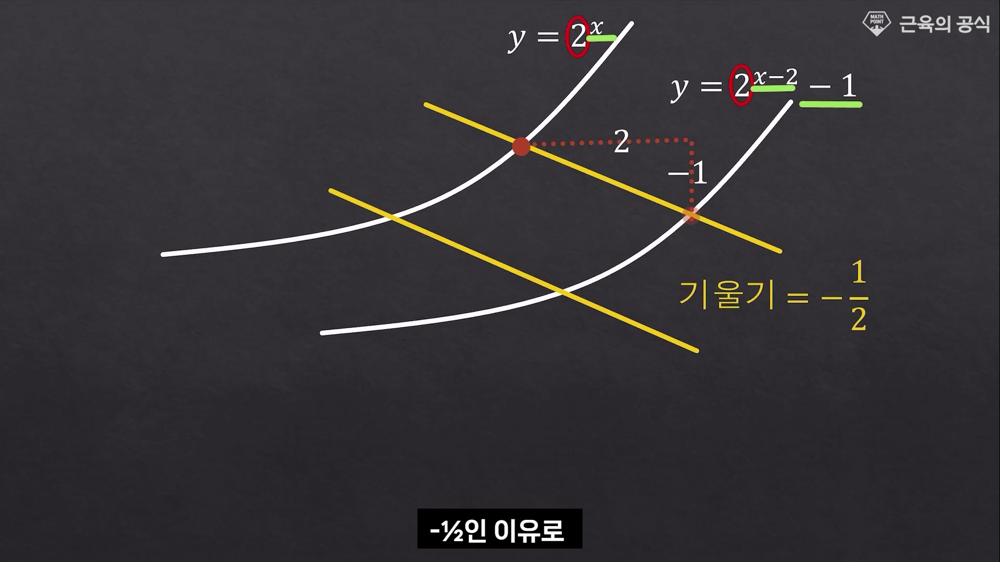
이동 벡터 $(\Delta x, \Delta y) = (2, -1)$로부터 직선의 기울기 $m = -\frac{1}{2}$이 결정됩니다.
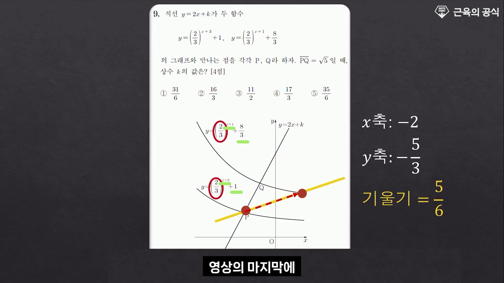
$y = 3 \cdot 2^x = 2^{x + \log_2 3}$으로 변형되어 $x$축 방향 $-\log_2 3$ 평행이동임을 밝힙니다.
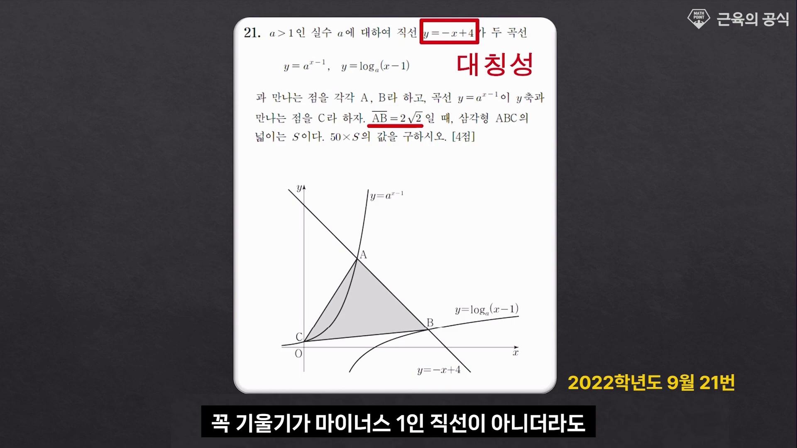
역함수의 본질인 직선 $y = x$를 기준으로 대칭 관계를 시각화합니다.
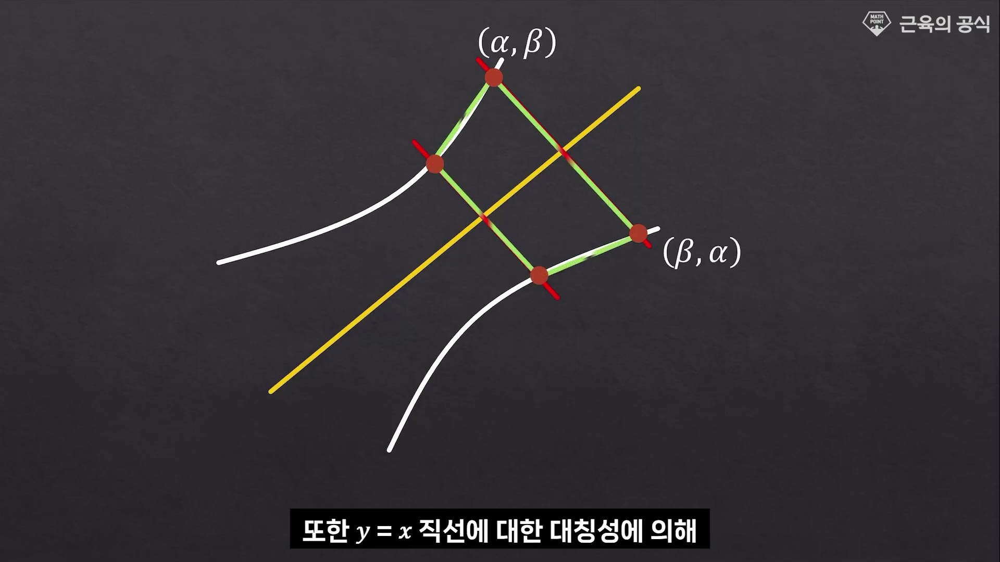
기울기 $-1$인 직선은 대칭축 $y=x$와 정확히 수직이므로 두 교점은 완벽한 대칭점 $(\alpha, \beta) \leftrightarrow (\beta, \alpha)$가 됩니다.
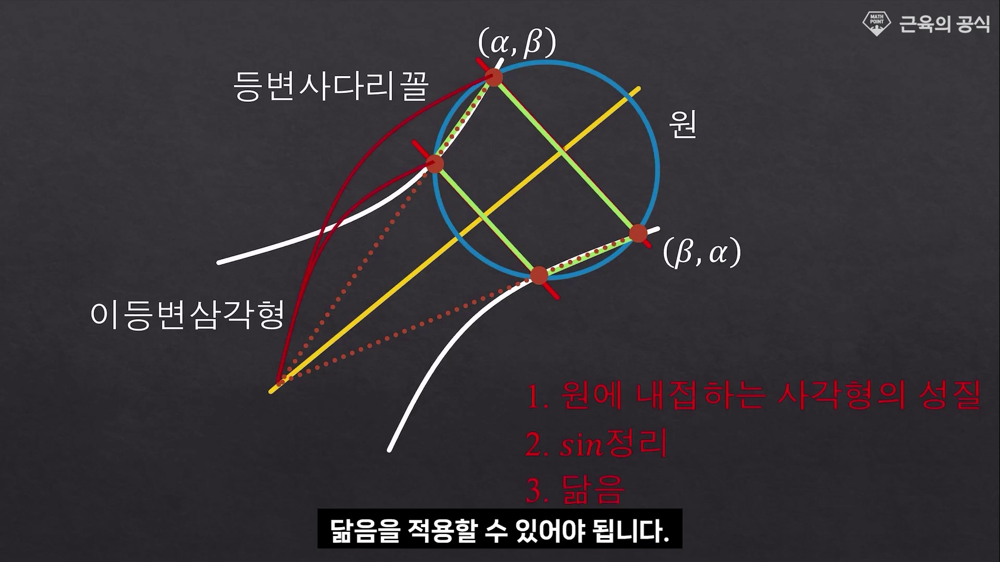
직선 $y = -x + 4$와 두 곡선 $y=a^{x-1}, y=\log_a(x-1)$ 및 선분 $\overline{AB}=2\sqrt{2}$ 조건 분석.
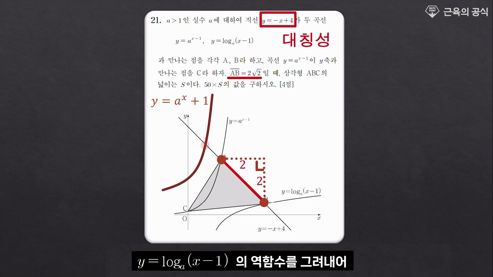
$\overline{AB} = 2\sqrt{2}$이므로 가로 $\Delta x = 2$, 세로 $\Delta y = 2$로 즉각 분해됩니다!
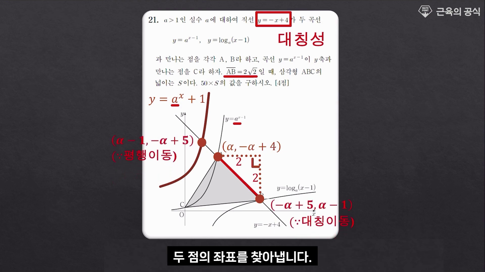
점 $A(1, 3)$, $B(3, 1)$, $C(0, \frac{1}{2})$ 확정 후 삼각형 넓이 $S = \frac{7}{2}$ 계산.
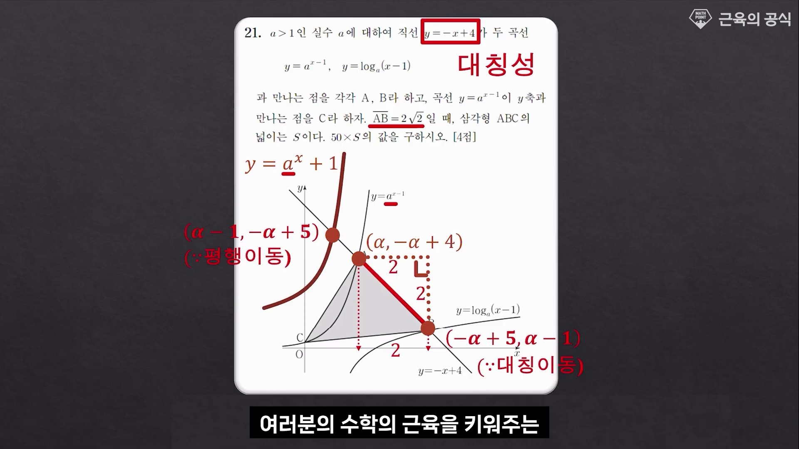
기울기, 평행이동, 대칭성의 3가지 원리로 모든 수능 지수·로그 문제를 꿰뚫는 마무리를 완성합니다.
* 지수함수: $y = a^{x-1}$
* 로그함수: $y = \log_a(x-1)$
* 교차 직선: $y = -x + 4$ (기울기 $m = -1$)
* 교점 간격: $\overline{AB} = 2\sqrt{2}$
* 점 $C$: 곡선 $y = a^{x-1}$의 $y$절편 $\implies C(0, a^{-1}) = C(0, \frac{1}{a})$
직선의 기울기가 $-1$이므로 $x$의 증가량과 $y$의 감소량의 비는 $1 : 1 : \sqrt{2}$입니다.
따라서:
$$\overline{AB} = \sqrt{\Delta x^2 + \Delta y^2} = \Delta x \sqrt{2} = 2\sqrt{2} \implies \mathbf{\Delta x = 2, \quad \Delta y = 2}$$
점 $A$의 좌표를 $(\alpha, -\alpha + 4)$라 하면, 점 $B$의 좌표는:
$$\mathbf{B(\alpha + 2, -\alpha + 2)}$$
두 함수 $y = a^{x-1}$과 $y = \log_a(x-1)$은 역함수 원형 $y = a^x$와 $y = \log_a x$를 $x$축 방향으로 $+1$만큼 평행이동한 것입니다.
따라서 $x$축으로 $-1$ 이동하면 $y=x$ 대칭 관계가 복원됩니다.
이 대칭성에 의해 두 점은 $y=-x+4$ 위에서 $A(1, 3)$과 $B(3, 1)$로 정확히 결정됩니다:
$$A(1, 3) \in y = a^{x-1} \implies 3 = a^{1-1} + 2 \implies a = 2$$
세 점의 좌표: $A(1, 3), \; B(3, 1), \; C(0, \frac{1}{2})$
선분 $AB$의 길이: $2\sqrt{2}$
점 $C(0, \frac{1}{2})$에서 직선 $x + y - 4 = 0$까지의 거리 $h$:
$$h = \frac{|0 + \frac{1}{2} - 4|}{\sqrt{1^2 + 1^2}} = \frac{\frac{7}{2}}{\sqrt{2}} = \frac{7}{2\sqrt{2}}$$
삼각형 $ABC$의 넓이 $S$:
$$S = \frac{1}{2} \times \overline{AB} \times h = \frac{1}{2} \times 2\sqrt{2} \times \frac{7}{2\sqrt{2}} = \mathbf{\frac{7}{2}}$$
$$\therefore \mathbf{50 \times S = 50 \times \frac{7}{2} = 175}$$
# -*- coding: utf-8 -*-
"""
Manim Community Animation Script: Exponential & Logarithmic Functions - Slope & Symmetry
Topic: Utilizing Slope m = -1 & Translation Vectors in CSAT Math (2022 Sep #21)
Run with: manim -pql exp_log_slope_symmetry_manim.py ExpLogSlopeSymmetryScene
"""
from manim import *
import numpy as np
class ExpLogSlopeSymmetryScene(Scene):
def construct(self):
# 1. Title & Introduction
title = Title(
r"지수·로그함수에서 기울기 활용법과 평행이동·대칭성",
include_underline=True,
font_size=34
)
subtitle = Text(
"기울기 m = -1 과 직각이등변삼각형 (1 : 1 : √2) 의 마법",
font_size=20,
color=GRAY_B
).next_to(title, DOWN, buff=0.2)
self.play(Write(title), FadeIn(subtitle))
self.wait(1.5)
self.play(FadeOut(subtitle), title.animate.scale(0.8).to_corner(UL))
# 2. Setup Axes
axes = Axes(
x_range=[-1, 6, 1],
y_range=[-1, 6, 1],
x_length=6.2,
y_length=6.2,
axis_config={"color": BLUE_D, "include_numbers": True, "font_size": 16},
).to_edge(LEFT, buff=0.8)
axes_labels = axes.get_axis_labels(x_label="x", y_label="y")
# Symmetry Axis y = x
line_yx = axes.plot(lambda x: x, x_range=[-0.5, 5.5], color=YELLOW, stroke_width=2)
line_yx_label = MathTex(r"y = x", color=YELLOW, font_size=20).next_to(axes.c2p(5.2, 5.2), UP+LEFT, buff=0.1)
self.play(Create(axes), Write(axes_labels), Create(line_yx), Write(line_yx_label))
self.wait(1)
# 3. Line with Slope m = -1: y = -x + 4
line_perp = axes.plot(lambda x: -x + 4, x_range=[0.2, 4.5], color=RED, stroke_width=3)
line_perp_label = MathTex(r"y = -x + 4", color=RED, font_size=22).next_to(axes.c2p(4.0, 0.0), UP+RIGHT, buff=0.15)
perp_symbol = RightAngle(
Line(axes.c2p(2, 2), axes.c2p(1, 1)),
Line(axes.c2p(2, 2), axes.c2p(1, 3)),
length=0.25, color=GOLD
)
self.play(Create(line_perp), Write(line_perp_label), Create(perp_symbol))
self.wait(1)
# 4. Curves: y = 2^(x-1) and y = log_2(x-1)
exp_curve = axes.plot(
lambda x: 2**(x - 1),
x_range=[-0.5, 3.5],
color=CYAN,
stroke_width=3.5
)
exp_label = MathTex(r"y = a^{x-1} \;(a=2)", color=CYAN, font_size=20).next_to(axes.c2p(2.8, 3.5), LEFT, buff=0.1)
log_curve = axes.plot(
lambda x: np.log2(np.maximum(x - 1, 0.01)),
x_range=[1.08, 5.5],
color=PINK,
stroke_width=3.5
)
log_label = MathTex(r"y = \log_a(x-1)", color=PINK, font_size=20).next_to(axes.c2p(4.5, 1.8), DOWN, buff=0.1)
self.play(Create(exp_curve), Write(exp_label))
self.play(Create(log_curve), Write(log_label))
self.wait(1)
# 5. Intersections A(1, 3) and B(3, 1)
dot_a = Dot(axes.c2p(1, 3), color=YELLOW, radius=0.09)
dot_b = Dot(axes.c2p(3, 1), color=YELLOW, radius=0.09)
label_a = MathTex(r"A(1, 3)", color=YELLOW, font_size=20).next_to(dot_a, UP+LEFT, buff=0.1)
label_b = MathTex(r"B(3, 1)", color=YELLOW, font_size=20).next_to(dot_b, DOWN+RIGHT, buff=0.1)
self.play(FadeIn(dot_a), FadeIn(dot_b), Write(label_a), Write(label_b))
# 6. Right Isosceles Triangle: dx = 2, dy = 2 -> AB = 2*sqrt(2)
tri_corner = axes.c2p(3, 3)
h_line = Line(axes.c2p(1, 3), tri_corner, color=ORANGE, stroke_width=2.5)
v_line = Line(tri_corner, axes.c2p(3, 1), color=ORANGE, stroke_width=2.5)
h_label = MathTex(r"\Delta x = 2", color=ORANGE, font_size=18).next_to(h_line, UP, buff=0.1)
v_label = MathTex(r"\Delta y = 2", color=ORANGE, font_size=18).next_to(v_line, RIGHT, buff=0.1)
hypot_label = MathTex(r"L = 2\sqrt{2}", color=RED, font_size=20).next_to(axes.c2p(2, 2), DOWN+LEFT, buff=0.2)
self.play(Create(h_line), Write(h_label), Create(v_line), Write(v_label), Write(hypot_label))
self.wait(1.5)
# 7. Third Point C(0, 1/2) and Shaded Triangle ABC
dot_c = Dot(axes.c2p(0, 0.5), color=GREEN, radius=0.08)
label_c = MathTex(r"C(0, \frac{1}{2})", color=GREEN, font_size=18).next_to(dot_c, LEFT, buff=0.1)
tri_polygon = Polygon(
axes.c2p(1, 3), axes.c2p(3, 1), axes.c2p(0, 0.5),
color=GOLD, fill_color=GOLD, fill_opacity=0.3
)
area_text = MathTex(r"S = \frac{7}{2} \implies 50S = 175", color=GOLD, font_size=22).to_corner(UR, buff=1.0)
self.play(FadeIn(dot_c), Write(label_c), FadeIn(tri_polygon), Write(area_text))
self.wait(2)
# 8. Side Explanation Card
info_box = RoundedRectangle(
height=3.5, width=4.8, corner_radius=0.2,
color=BLUE_E, fill_color="#070a13", fill_opacity=0.9
).to_edge(RIGHT, buff=0.5).shift(DOWN*0.5)
summary_p = Text(
"수능 지수·로그 3대 해법:\n1. 평행이동 벡터 = 기울기\n2. m = -1 이면 y = x 수직 대칭\n3. L = 2√2 -> dx = 2, dy = 2\n초스피드 4점 킬러 정복!",
font_size=16, color=LIGHT_GRAY, line_spacing=1.3
).move_to(info_box)
self.play(FadeIn(info_box), Write(summary_p))
self.wait(3)
핵심 포인트: $y = -x + 4$와 두 곡선 $y=a^{x-1}, y=\log_a(x-1)$, $\overline{AB}=2\sqrt{2}$.
기울기 $-1$ 직각이등변 $1:1:\sqrt{2}$를 적용하여 $\Delta x = 2, \Delta y = 2$로 좌표를 즉시 확정하고 $a=2$를 구해 삼각형 넓이 $50S = 175$를 산출하는 대표 문항입니다.
핵심 포인트: 밑이 같은 지수함수 $y = 2^{x+1}$과 $y = 2^x$ 사이의 평행이동 및 기울기 $-\frac{1}{2}$인 직선과의 교점 간격 계산.
평행이동 벡터의 기울기가 주어진 직선과 일치함을 간파하면 복잡한 연립 없이 바로 거리가 나옵니다.
핵심 포인트: 지수곡선 위의 두 점의 기울기와 중점 조건.
대칭축과의 수직성 및 내분점 비례식을 결합하여 미지수를 소거하는 고난도 킬러 문항에 동일한 원리가 완벽히 적용됩니다.
"밑이 같은 지수함수와 로그함수는 서로 역함수이며 $y=x$ 대칭이다!"
밑 $a > 1$일 때, 두 그래프의 교점 개수는 어떻게 달라질까?
접선 기울기 1 조건 · 자연상수 접점 $(e, e)$ · 임계 밑 $a = e^{1/e} \approx 1.4447$ · 0개/1개/2개 분기를 실시간 인터랙티브 시각화로 완벽 마스터합니다.
밑 $a$ 슬라이더를 미세 조작하며 지수곡선과 로그곡선이 직선 $y=x$와 만나는 교점 개수(0개, 1개 접함, 2개)를 실시간으로 탐구해보세요.
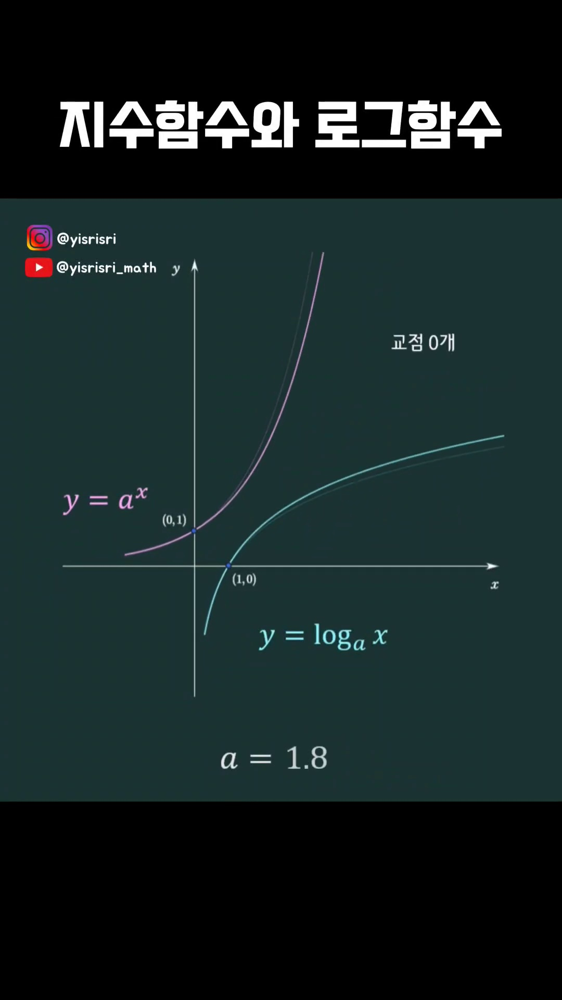
밑이 $a$로 동일한 두 함수 $y=a^x$와 $y=\log_a x$는 서로 역함수 관계임을 선언하며 강의가 시작됩니다.
역함수의 기하학적 본질인 직선 $y=x$ 대칭축을 작도하여 두 곡선이 거울에 비친 상임을 직관화합니다.
지수함수의 점 $(0, 1)$과 로그함수의 점 $(1, 0)$이 완벽히 대칭 대응됨을 비교합니다.
"과연 두 곡선은 만날 수 있을까?" 교과서 예제에 익숙한 학생들의 편견을 깨는 질문을 던집니다.
밑 $a$가 작아질수록 $y=a^x$ 곡선의 경사가 완만해지며 직선 $y=x$를 향해 점점 내려앉습니다.
마침내 두 곡선이 직선 $y=x$와 정확히 한 점 $(e, e)$에서 접하는 역사적 순간이 포착됩니다!
밑이 더 작아지면 곡선이 $y=x$ 아래로 파고들며 2개의 뚜렷한 교점($a=\sqrt{2} \implies (2,2), (4,4)$)을 생성합니다.
지수함수와 로그함수의 교점 개수 문제는 $a = e^{1/e} \approx 1.4447$을 경계로 완벽히 분류됨을 정리합니다.
$a > e^{1/e} \implies 0$개, $a = e^{1/e} \implies 1$개, $1 < a < e^{1/e} \implies 2$개 공식을 최종 각인합니다.
밑 $a > 1$일 때 $f(x) = a^x$는 실수 전체에서 엄격한 단조 증가 함수(Strictly Increasing Function)입니다.
단조 증가 함수 $f(x)$와 그 역함수 $f^{-1}(x)$의 교점 $(x, y)$는 반드시 직선 $y = x$ 위에만 존재합니다.
따라서 방정식 $a^x = \log_a x$의 해를 구하는 것은 곧 방정식 $a^x = x$의 실근을 구하는 것과 완벽히 동치입니다.
곡선 $y = a^x$가 직선 $y = x$에 접하는 접점의 $x$좌표를 $t$라고 두면, 두 가지 필수 조건이 성립해야 합니다:
[식 ①]의 $a^t = t$를 [식 ②]에 대입하면:
$$t \cdot \ln a = 1 \implies \ln(a^t) = 1 \implies a^t = e$$
[식 ①]에 의해 $a^t = t$이므로:
$$\mathbf{t = e \approx 2.7182818...}$$
접점의 좌표는 놀랍게도 $(e, e)$로 결정됩니다!
이제 $a^e = e$이므로 양변에 $\frac{1}{e}$제곱을 취하면:
$$\mathbf{a = e^{1/e} = \sqrt[e]{e} \approx 1.44466786...}$$
$a < 1$이면 $f(x)=a^x$는 단조 감소 함수가 됩니다. 이때는 $y=x$ 위에 교점이 항상 1개 존재하지만, $a < e^{-e} \approx 0.065988$이 되면 직선 $y=x$ 위의 점 외에 $y=x$에 대칭인 두 점 $(\alpha, \beta)$와 $(\beta, \alpha)$ (단, $\alpha \ne \beta$)가 추가로 생겨 총 3개의 교점을 갖게 됩니다.
# -*- coding: utf-8 -*-
"""
Manim Community Animation Script: Exponential & Logarithmic Inverse Function Intersection
Topic: y = a^x vs y = log_a(x) and the Critical Base a = e^(1/e) ~ 1.4447
Run with: manim -pql exp_log_inverse_intersection_manim.py ExpLogInverseIntersectionScene
"""
from manim import *
import numpy as np
class ExpLogInverseIntersectionScene(Scene):
def construct(self):
# 1. Title & Introduction
title = Title(
r"지수함수와 로그함수의 역함수 교점과 임계 밑 $a = e^{1/e}$",
include_underline=True,
font_size=36
)
subtitle = Text(
"y = a^x 와 y = log_a(x) 의 교점 개수는 어떻게 변할까?",
font_size=20,
color=GRAY_B
).next_to(title, DOWN, buff=0.2)
self.play(Write(title), FadeIn(subtitle))
self.wait(1.5)
self.play(FadeOut(subtitle), title.animate.scale(0.8).to_corner(UL))
# 2. Setup Axes
axes = Axes(
x_range=[-1, 6, 1],
y_range=[-1, 6, 1],
x_length=6.5,
y_length=6.5,
axis_config={"color": BLUE_D, "include_numbers": True, "font_size": 16},
).to_edge(LEFT, buff=0.8)
axes_labels = axes.get_axis_labels(x_label="x", y_label="y")
# Line y = x
line_yx = axes.plot(lambda x: x, x_range=[-0.5, 5.5], color=YELLOW, stroke_width=2.5)
line_yx_label = MathTex(r"y = x", color=YELLOW, font_size=22).next_to(axes.c2p(5.2, 5.2), UP+LEFT, buff=0.1)
self.play(Create(axes), Write(axes_labels), Create(line_yx), Write(line_yx_label))
self.wait(1)
# 3. Info Panel on the Right
info_panel = VGroup().to_edge(RIGHT, buff=0.6)
formula_box = RoundedRectangle(
height=5.5, width=4.8, corner_radius=0.2,
color=BLUE_E, fill_color="#0a101f", fill_opacity=0.85
).to_edge(RIGHT, buff=0.6)
panel_title = Text("교점 판정 매트릭스", font_size=22, color=GOLD).move_to(formula_box.get_top() + DOWN*0.4)
# ValueTracker for Base a
a_tracker = ValueTracker(2.0)
# Dynamic Functions
def get_exp_curve():
val_a = a_tracker.get_value()
x_max = min(5.5, np.log(6.0) / np.log(val_a)) if val_a > 1.0 else 5.5
return axes.plot(
lambda x: val_a**x,
x_range=[-0.8, x_max],
color=CYAN,
stroke_width=3.5
)
def get_log_curve():
val_a = a_tracker.get_value()
return axes.plot(
lambda x: np.log(x) / np.log(val_a),
x_range=[0.05, 5.5],
color=PINK,
stroke_width=3.5
)
exp_curve = always_redraw(get_exp_curve)
log_curve = always_redraw(get_log_curve)
exp_label = MathTex(r"f(x) = a^x", color=CYAN, font_size=24).next_to(formula_box.get_top(), DOWN, buff=1.0)
log_label = MathTex(r"g(x) = \log_a x", color=PINK, font_size=24).next_to(exp_label, DOWN, buff=0.3)
base_text = always_redraw(lambda: MathTex(
rf"a = {a_tracker.get_value():.3f}",
color=WHITE,
font_size=26
).next_to(log_label, DOWN, buff=0.4))
status_text = always_redraw(lambda: Text(
"교점 0개 (만나지 않음)" if a_tracker.get_value() > 1.4447 + 0.01 else (
"접점 1개 (e, e) 에서 접함!" if abs(a_tracker.get_value() - 1.4447) <= 0.01 else "교점 2개 (y = x 관통)"
),
font_size=18,
color=RED if a_tracker.get_value() > 1.445 else (GOLD if abs(a_tracker.get_value() - 1.4447) <= 0.01 else GREEN)
).next_to(base_text, DOWN, buff=0.3))
self.play(FadeIn(formula_box), Write(panel_title), Write(exp_label), Write(log_label))
self.play(Create(exp_curve), Create(log_curve), FadeIn(base_text), FadeIn(status_text))
self.wait(1.5)
# 4. Scenario 1: a = 2.0 (No intersection)
explanation1 = Text(
"Case 1: a > e^(1/e) (~1.445)\n지수 곡선이 y=x 위쪽에 위치하여\n교점이 전혀 발생하지 않음!",
font_size=16, color=LIGHT_GRAY, line_spacing=1.3
).next_to(status_text, DOWN, buff=0.4)
self.play(FadeIn(explanation1))
self.wait(2)
# 5. Scenario 2: Decreasing a to Critical Value e^(1/e) ~ 1.444668
e_val = np.e
crit_a = np.exp(1 / e_val) # ~1.444668
self.play(
a_tracker.animate.set_value(crit_a),
FadeOut(explanation1),
run_time=3.5,
rate_func=linear
)
tangent_dot = Dot(axes.c2p(e_val, e_val), color=YELLOW, radius=0.1)
tangent_halo = Circle(radius=0.25, color=YELLOW).move_to(tangent_dot)
tangent_label = MathTex(r"(e, e) \approx (2.718, 2.718)", color=YELLOW, font_size=20).next_to(tangent_dot, UP+LEFT, buff=0.15)
explanation2 = Text(
"Case 2: a = e^(1/e) (~1.4447)\n접선의 기울기가 1이 되는 유일한 점\n(e, e) 에서 y=x 와 완벽히 접함!",
font_size=16, color=GOLD, line_spacing=1.3
).next_to(status_text, DOWN, buff=0.4)
self.play(
FadeIn(tangent_dot),
Create(tangent_halo),
Write(tangent_label),
FadeIn(explanation2)
)
self.wait(2.5)
# 6. Scenario 3: Decreasing a to sqrt(2) ~ 1.414 (2 Intersections)
sqrt2 = np.sqrt(2)
self.play(
a_tracker.animate.set_value(sqrt2),
FadeOut(tangent_dot),
FadeOut(tangent_halo),
FadeOut(tangent_label),
FadeOut(explanation2),
run_time=2.5
)
dot1 = Dot(axes.c2p(2, 2), color=GREEN, radius=0.09)
dot2 = Dot(axes.c2p(4, 4), color=GREEN, radius=0.09)
label1 = MathTex(r"(2, 2)", color=GREEN, font_size=20).next_to(dot1, DOWN+RIGHT, buff=0.1)
label2 = MathTex(r"(4, 4)", color=GREEN, font_size=20).next_to(dot2, UP+LEFT, buff=0.1)
explanation3 = Text(
"Case 3: 1 < a < e^(1/e)\na = sqrt(2) ~ 1.414 일 때\n(2, 2) 와 (4, 4) 2개 점에서 교차!",
font_size=16, color=GREEN_B, line_spacing=1.3
).next_to(status_text, DOWN, buff=0.4)
self.play(
FadeIn(dot1), FadeIn(dot2),
Write(label1), Write(label2),
FadeIn(explanation3)
)
self.wait(3)
# 7. Summary Overlay Banner
final_box = RoundedRectangle(
height=1.4, width=11.5, corner_radius=0.15,
color=GOLD, fill_color=BLACK, fill_opacity=0.9
).to_edge(DOWN, buff=0.3)
summary_text = MathTex(
r"\text{핵심 요약: } a > e^{1/e} \implies 0\text{개}, \quad "
r"a = e^{1/e} \implies 1\text{개}(e, e), \quad "
r"1 < a < e^{1/e} \implies 2\text{개}",
font_size=24, color=GOLD
).move_to(final_box)
self.play(FadeIn(final_box), Write(summary_text))
self.wait(3)
오답률 70% 단골! 밑이 $1 < a < e^{1/e} \approx 1.4447$이면 서로 다른 2개의 교점이 생깁니다. 특히 $a = \sqrt{2}$일 때 교점 $(2, 2)$와 $(4, 4)$는 수능 객관식 보기에 단골로 등장하는 대표 정수 좌표입니다.
조건을 확인하세요! 밑 $a > 1$인 '증가함수'일 때만 참입니다. 만약 $0 < a < 1$인 '감소함수'이고 $a < e^{-e}$이면, $y=x$ 바깥에서 $(x_1, y_1)$과 $(y_1, x_1)$ 형태로 대칭인 교점 쌍 2개가 추가되어 총 3개의 교점이 발생합니다.
함수 $h(x) = a^x - x$로 놓으면 $h'(x) = a^x \ln a - 1 = 0$에서 극솟값 $x = -\frac{\ln(\ln a)}{\ln a}$가 발생합니다. 극솟값이 0보다 작으면 실근 2개, 0이면 1개(접함), 0보다 크면 0개가 됩니다.
"무리함수의 곡선은 왜 2차 포물선($y=x^2$)의 누운 반쪽일까?"
GSP5(The Geometer's Sketchpad) 공학도구로 직접 작도하고 탐구하는 무리함수의 모든 것:
매개변수 $a$의 부호와 폭(Dilation) · 시작점(꼭짓점 $(p, q)$)의 평행이동 · 4개 사분면 분기 · 역함수($y=x$ 대칭)을 완벽 시각화합니다.
영상 속 GSP5 작도 원리를 그대로 웹 캔버스에 구현했습니다. 매개변수 $a, p, q$ 슬라이더를 조작하여 시작점 이동과 곡선 개형의 변화를 실시간으로 확인해보세요.
영상 01:10에서 강사가 강조하듯, $y = \sqrt{x}$의 그래프는 전혀 새로운 곡선이 아니라 2차 포물선 $y = x^2$ ($x \ge 0$)을 직선 $y = x$에 대해 대칭이동시킨 곡선입니다.
강의 전반부에서 다루는 직관적인 평행이동 예시입니다:
• 식 바깥에 $+3$을 더함
• 모든 점의 $y$좌표가 $+3$만큼 수직 상승
• 시작점: $(0, 0) \to (0, 3)$
• 치역: $y \ge 3$
• $x$ 대신 $x - 3$을 대입
• 근호 내부 $\ge 0$이므로 $x - 3 \ge 0 \implies x \ge 3$
• 시작점: $(0, 0) \to (3, 0)$
• 정의역: $x \ge 3$
영상 03:00~05:40에서 시연된 GSP5 고유의 매개변수 생성 메커니즘 5단계입니다:
• $a > 0$: 오른쪽 방향 (우상향, $x \ge p$)
• $a < 0$: 왼쪽 방향 (좌상향, $x \le p$)
• $|a|$ 확대: $y$축 방향으로 급격히 솟구치며 곡선의 폭(증가량) 확대
• 시작점(꼭짓점)의 $x$좌표 결정
• $x$축 방향으로 $p$만큼 평행이동
• 정의역의 경계값 결정 ($x=p$)
• 시작점(꼭짓점)의 $y$좌표 결정
• $y$축 방향으로 $q$만큼 평행이동
• 치역의 경계값 결정 ($y=q$)
| 함수식 | 정의역 ($x$) | 치역 ($y$) | 시작점 | 진행 방향 | 증감 | 대칭 관계 ($y=\sqrt{x}$ 기준) |
|---|---|---|---|---|---|---|
| $y = +\sqrt{+x}$ | $x \ge 0$ | $y \ge 0$ | $(0, 0)$ | 제1사분면 (우상향) | 증가 | 기본형 (기준) |
| $y = +\sqrt{-x}$ | $x \le 0$ | $y \ge 0$ | $(0, 0)$ | 제2사분면 (좌상향) | 감소 | $y$축 대칭 ($x \to -x$) |
| $y = -\sqrt{-x}$ | $x \le 0$ | $y \le 0$ | $(0, 0)$ | 제3사분면 (좌하향) | 증가 | 원점 대칭 ($x \to -x, y \to -y$) |
| $y = -\sqrt{+x}$ | $x \ge 0$ | $y \le 0$ | $(0, 0)$ | 제4사분면 (우하향) | 감소 | $x$축 대칭 ($y \to -y$) |
무리함수 $\sqrt{x}$와 직선 $mx+n$을 연립하여 제곱하면 $x = (mx+n)^2$이 되어 존재하지 않는 가상의 반쪽 포물선($y<0$)과의 가짜 교점(무연근)까지 모두 계산됩니다.
따라서 교점의 개수는 반드시 **1) 판별식 $D=0$ 접선**과 **2) 시작점 $(p, q)$ 통과선**이라는 두 개의 경계선을 그래프로 분할하여 판정해야 합니다.
포물선 $y=x^2$의 $y=x$ 대칭 변환 과정과 $a, p, q$ 매개변수 동적 추적을 3Blue1Brown 스타일로 연출한 Manim 파이썬 스크립트입니다:
from manim import *
import numpy as np
class SquareRootFunctionGSPScene(Scene):
def construct(self):
# 1. Dark modern background
self.camera.background_color = "#0a0f1d"
# Title Banner
title = Text("무리함수 y = √(a(x-p)) + q의 그래프와 기하학적 성질", font="Malgun Gothic", font_size=28, color=YELLOW)
subtitle = Text("GSP5 동적 기하 작도 및 2차 포물선 역함수 대칭 해석", font="Malgun Gothic", font_size=18, color=BLUE_B)
title_group = VGroup(title, subtitle).arrange(DOWN, buff=0.15).to_edge(UP, buff=0.3)
self.play(Write(title), FadeIn(subtitle, shift=UP))
self.wait(1)
# 2. Coordinate Plane (Left)
plane = NumberPlane(
x_range=[-6, 8, 1],
y_range=[-4, 6, 1],
x_length=7.5,
y_length=5.5,
background_line_style={"stroke_color": "#1e293b", "stroke_width": 1.2}
).move_to(LEFT * 2.5 + DOWN * 0.4)
x_label = MathTex("x", font_size=20, color=GRAY_B).next_to(plane.c2p(8, 0), RIGHT, buff=0.1)
y_label = MathTex("y", font_size=20, color=GRAY_B).next_to(plane.c2p(0, 6), UP, buff=0.1)
self.play(Create(plane), FadeIn(x_label), FadeIn(y_label))
# 3. Right Info Panel
info_panel = RoundedRectangle(
corner_radius=0.15, width=4.5, height=5.5,
color=BLUE_D, fill_color="#0f172a", fill_opacity=0.9
).move_to(RIGHT * 4.0 + DOWN * 0.4)
eq_main = MathTex(r"y = \sqrt{a(x-p)} + q", font_size=26, color=YELLOW).next_to(info_panel.get_top(), DOWN, buff=0.35)
info_box = VGroup(
MathTex(r"\bullet\ \text{시작점(꼭짓점): } (p, q)", font_size=20, color=PINK),
MathTex(r"\bullet\ a > 0: x \ge p\text{ (우상향 제1사분면)}", font_size=18, color=GREEN_B),
MathTex(r"\bullet\ a < 0: x \le p\text{ (좌상향 제2사분면)}", font_size=18, color=ORANGE),
MathTex(r"\bullet\ |a|\text{ 증가 } \implies \text{곡선의 폭/증가량 확대}", font_size=18, color=TEAL_B),
MathTex(r"\bullet\ y = x\text{ 대칭: 포물선 } x = y^2\text{ 의 반쪽}", font_size=18, color=PURPLE_B)
).arrange(DOWN, aligned_edge=LEFT, buff=0.25).next_to(eq_main, DOWN, buff=0.4).shift(RIGHT * 0.15)
self.play(Create(info_panel), Write(eq_main), FadeIn(info_box, shift=UP))
self.wait(1)
# 4. PART 1: The Parabola Half & y = x Reflection
line_diag = DashedLine(plane.c2p(-4, -4), plane.c2p(6, 6), color=GRAY_A, stroke_width=2)
diag_label = MathTex("y = x", font_size=18, color=GRAY_A).next_to(plane.c2p(5.5, 5.5), UL, buff=0.1)
parabola = plane.plot(lambda x: x**2, x_range=[0, 2.4], color=BLUE, stroke_width=3)
parabola_label = MathTex(r"y = x^2\ (x \ge 0)", font_size=20, color=BLUE).next_to(plane.c2p(1.8, 3.24), LEFT, buff=0.15)
sqrt_basic = plane.plot(lambda x: np.sqrt(x), x_range=[0, 7], color=RED, stroke_width=3.5)
sqrt_label = MathTex(r"y = \sqrt{x}", font_size=20, color=RED).next_to(plane.c2p(6, np.sqrt(6)), UR, buff=0.1)
self.play(Create(line_diag), FadeIn(diag_label))
self.play(Create(parabola), Write(parabola_label))
self.wait(1)
self.play(
TransformFromCopy(parabola, sqrt_basic),
Write(sqrt_label),
run_time=2
)
self.wait(1)
self.play(FadeOut(parabola), FadeOut(parabola_label), FadeOut(line_diag), FadeOut(diag_label))
# 5. PART 2: Dynamic Parameters Animation (a, p, q)
a_tracker = ValueTracker(1.0)
p_tracker = ValueTracker(0.0)
q_tracker = ValueTracker(0.0)
vertex_dot = always_redraw(lambda: Dot(
plane.c2p(p_tracker.get_value(), q_tracker.get_value()),
color=PINK, radius=0.09
))
vertex_label = always_redraw(lambda: MathTex(
f"({p_tracker.get_value():.1f}, {q_tracker.get_value():.1f})",
font_size=18, color=PINK
).next_to(vertex_dot, DL, buff=0.1))
def get_dynamic_curve():
a = a_tracker.get_value()
p = p_tracker.get_value()
q = q_tracker.get_value()
if abs(a) < 1e-4:
return VMobject()
if a > 0:
x_max = 7.8
if p >= x_max:
return VMobject()
return plane.plot(lambda x: np.sqrt(a * (x - p)) + q, x_range=[p, x_max], color=RED, stroke_width=3.5)
else:
x_min = -5.8
if p <= x_min:
return VMobject()
return plane.plot(lambda x: np.sqrt(a * (x - p)) + q, x_range=[x_min, p], color=ORANGE, stroke_width=3.5)
dynamic_curve = always_redraw(get_dynamic_curve)
self.play(
FadeOut(sqrt_basic), FadeOut(sqrt_label),
FadeIn(dynamic_curve), FadeIn(vertex_dot), FadeIn(vertex_label)
)
self.wait(1)
# Dynamic Status in Info Panel
status_text = always_redraw(lambda: VGroup(
MathTex(f"a = {a_tracker.get_value():.1f}", font_size=22, color=YELLOW),
MathTex(f"p = {p_tracker.get_value():.1f}", font_size=22, color=BLUE_B),
MathTex(f"q = {q_tracker.get_value():.1f}", font_size=22, color=GREEN_B),
).arrange(RIGHT, buff=0.3).next_to(eq_main, DOWN, buff=0.2))
self.add(status_text)
self.wait(1)
# Animate Parameter 'a' Dilation (1.0 -> 3.5 -> 1.0)
self.play(a_tracker.animate.set_value(3.5), run_time=2, rate_func=smooth)
self.wait(0.5)
self.play(a_tracker.animate.set_value(0.5), run_time=1.5, rate_func=smooth)
self.wait(0.5)
self.play(a_tracker.animate.set_value(1.0), run_time=1, rate_func=smooth)
self.wait(1)
# Animate Parameter 'a' Sign Flip (1.0 -> -1.5)
self.play(a_tracker.animate.set_value(-1.5), run_time=2, rate_func=smooth)
self.wait(1)
self.play(a_tracker.animate.set_value(1.5), run_time=1.5, rate_func=smooth)
self.wait(1)
# Animate Parameter 'p' and 'q' Translation
self.play(p_tracker.animate.set_value(3.0), run_time=1.5, rate_func=smooth)
self.wait(0.5)
self.play(q_tracker.animate.set_value(2.0), run_time=1.5, rate_func=smooth)
self.wait(1)
# Move to 3rd quadrant position
self.play(p_tracker.animate.set_value(-2.0), q_tracker.animate.set_value(-1.5), run_time=2, rate_func=smooth)
self.wait(1)
# Return to origin
self.play(p_tracker.animate.set_value(0.0), q_tracker.animate.set_value(0.0), a_tracker.animate.set_value(1.0), run_time=1.5)
self.wait(1)
# Final Summary Callout
summary_rect = RoundedRectangle(corner_radius=0.15, width=6.5, height=1.6, color=YELLOW, fill_color="#030712", fill_opacity=0.95)
summary_rect.move_to(DOWN * 0.4)
summary_title = Text("핵심 정리 (GSP5 무작정 따라하기 결론)", font="Malgun Gothic", font_size=20, color=YELLOW).next_to(summary_rect.get_top(), DOWN, buff=0.2)
summary_body = Text(
"• a의 부호: 뻗어나가는 사분면 방향 (우/좌)\n"
"• |a|의 크기: 곡선의 벌어짐 폭(증가량)\n"
"• p, q: 꼭짓점(p, q)의 x축, y축 평행이동",
font="Malgun Gothic", font_size=16, color=WHITE, line_spacing=0.8
).next_to(summary_title, DOWN, buff=0.15)
summary_group = VGroup(summary_rect, summary_title, summary_body)
self.play(FadeIn(summary_group, shift=UP))
self.wait(3)
manim -pql square_root_function_gsp_manim.py SquareRootFunctionGSPScene
새 좌표계를 생성하고 Graph 메뉴의 Plot New Function에서 `sqrt(x)`를 입력하여 가장 기본적인 무리함수를 그립니다.
$y = \sqrt{x}$ 곡선이 2차 포물선 $y=x^2$을 $y=x$ 대칭시켜 회전시킨 반쪽 포물선이라는 기하학적 본질을 짚어냅니다.
식 바깥에 $+3$을 더하여 원래 그래프가 정확히 $y$축 방향으로 $3$만큼 수직 상승하는 평행이동의 원리를 확인합니다.
괄호 안에 $x-3$을 대입하여 원래 그래프가 $x$축 양의 방향으로 $+3$만큼 수평 이동함을 보여줍니다.
$x$축 위의 세 점과 수선을 세우고, 각 수선 위에 점을 잡아 $y$좌표를 측정한 뒤 $a, p, q$ 슬라이더로 변환합니다.
루트 안에 $a \cdot (x-p)$를 넣고, 커서를 괄호 바깥으로 이동시켜 $+q$를 더하는 실전 수식 입력 팁을 설명합니다.
빨간색 굵은 곡선으로 함수 그래프를 설정하고 원점 $(0, 0)$을 시점으로 하는 표준 무리함수를 준비합니다.
$a$가 커질수록 2차 포물선의 폭이 변하듯 무리함수의 벌어지는 폭과 증가 속도가 급격히 확장됨을 관찰합니다.
$a$가 음수가 되면 근호 안의 조건 $ax \ge 0 \implies x \le 0$이 되어 곡선이 제2사분면(좌상향)으로 반전됩니다.
$p$는 $x$축 평행이동, $q$는 $y$축 평행이동을 담당하여 꼭짓점 $(p, q)$가 평면 위를 이동하며 강의가 마무리됩니다.
"분모의 상수항 $d$가 변하면 유리함수의 그래프는 어떻게 왜곡되고 이동할까?"
알지오매스(Algeomath) 공학도구로 시각화한 $y = \frac{x+2}{x+d}$의 동적 궤적:
수직점근선의 이동 · 수평점근선 $y=1$의 불변성 · 고정 정점 $(-2, 0)$ · $d=2$ 축퇴(직선 붕괴) 및 사분면 대반전까지 완벽 해부합니다.
슬라이더를 드래그하거나 [▶ 자동 왕복 애니메이션]을 켜서 $d$의 변화에 따른 점근선의 궤적, 대칭 중심의 이동, 그리고 $d=2$에서의 쌍곡선 사분면 반전 현상을 실시간으로 체험해보세요.
유리함수의 일반형을 분자 나누기 분모를 통해 표준형 $y = \frac{k}{x-p} + q$로 변형하면, 기하학적 핵심 성질들이 즉시 드러납니다.
모델 함수 $y = \frac{x+2}{x+d} = 1 + \frac{2-d}{x+d}$ 에서 매개변수 $d$가 변화할 때 점근선들은 어떻게 움직일까요?
분모와 분자의 $x$ 계수비가 $\frac{1}{1} = 1$로 고정되어 있으므로, $d$가 어떤 실수 값을 갖더라도 수평점근선 $y=1$은 절대 흔들리지 않습니다.
$d$가 음수에서 양수로 증가함에 따라, 수직점근선 $x = -d$는 오른쪽($x=10$)에서 왼쪽($x=-10$)으로 일정하게 수평 이동합니다.
따라서 대칭의 중심 $(-d, 1)$의 자취(Locus)는 수평선 $y = 1$이 됩니다.
$d = 2$가 되는 순간, 분수식의 분자와 분모가 일치하면서 쌍곡선이 순간적으로 붕괴하는 극적인 수학적 현상이 일어납니다.
함수식에 $d=2$를 대입하면: $$y = \frac{x+2}{x+2} = 1 \quad (\text{단, } x \ne -2)$$
💡 교과서에서 유리함수를 정의할 때 "$ad - bc \ne 0$"이라는 제한 조건을 거는 이유가 바로 이 축퇴(직선화)를 방지하기 위함입니다.
임계점 $d = 2$를 통과하기 전과 통과한 후, 쌍곡선의 위치가 정반대로 뒤집힙니다.
$k = 2 - d > 0$ 이므로 점근선 교점을 기준으로 제1사분면과 제3사분면에 쌍곡선 위치.
$k = 2 - d < 0$ 이므로 점근선 교점을 기준으로 제2사분면과 제4사분면으로 전격 위치 반전!
영상에서 $d$가 아무리 변해도 그래프가 $x$축 위의 한 점 $(-2, 0)$을 닻(Anchor)처럼 고정되어 지나갑니다.
함수식 $y = \frac{x+2}{x+d}$의 양변에 $(x+d)$를 곱해 정리합니다: $$y(x+d) = x + 2 \iff yx + yd = x + 2$$ 이를 $d$에 대한 항등식으로 묶으면: $$d \cdot y + (yx - x - 2) = 0$$
이 식이 임의의 $d$에 대해 항상 성립하려면: $$y = 0 \quad \text{그리고} \quad 0 \cdot x - x - 2 = 0 \implies x = -2$$ $$\therefore (x, y) = (-2, 0)$$
결론: $d$의 값과 상관없이 모든 유리함수 곡선은 $x$절편인 정점 $(-2, 0)$을 반드시 통과합니다!
수직점근선의 이동, 대칭 중심의 궤적, 고정 정점 $(-2, 0)$, $d=2$ 축퇴 및 사분면 반전을 애니메이션으로 구현한 파이썬 스크립트입니다.
from manim import *
import numpy as np
class RationalFunctionDVariationScene(Scene):
def construct(self):
# Dark modern background
self.camera.background_color = "#0a0f1d"
# 1. Title Banner
title = Text("유리함수 y=(ax+b)/(cx+d)의 그래프 d 변화 분석", font="Malgun Gothic", font_size=32, color=YELLOW)
subtitle = Text("알지오매스(Algeomath) 공학도구 기반 동적 기하학 해석", font="Malgun Gothic", font_size=18, color=BLUE_B)
title_group = VGroup(title, subtitle).arrange(DOWN, buff=0.15).to_edge(UP, buff=0.35)
self.play(Write(title), FadeIn(subtitle, shift=UP))
self.wait(1)
# 2. Coordinate Plane (Left/Center)
plane = NumberPlane(
x_range=[-10, 10, 2],
y_range=[-8, 8, 2],
x_length=7.5,
y_length=5.5,
background_line_style={"stroke_color": "#1e293b", "stroke_width": 1.2}
).move_to(LEFT * 2.2 + DOWN * 0.4)
x_label = MathTex("x", font_size=20, color=GRAY_B).next_to(plane.c2p(10, 0), RIGHT, buff=0.1)
y_label = MathTex("y", font_size=20, color=GRAY_B).next_to(plane.c2p(0, 8), UP, buff=0.1)
self.play(Create(plane), FadeIn(x_label), FadeIn(y_label))
# 3. Fixed Elements:
# Fixed horizontal asymptote y = 1
h_asym = DashedLine(plane.c2p(-10, 1), plane.c2p(10, 1), color=GREEN_B, stroke_width=2.5, dash_length=0.15)
h_asym_label = MathTex(r"y = 1\text{ (수평점근선, 고정)}", font_size=20, color=GREEN_B).next_to(plane.c2p(7, 1), UP, buff=0.1)
# Fixed point (-2, 0)
fixed_pt = Dot(plane.c2p(-2, 0), color=RED, radius=0.08)
fixed_pt_label = MathTex(r"(-2, 0)\text{ [고정 정점]}", font_size=18, color=RED).next_to(fixed_pt, DL, buff=0.1)
self.play(Create(h_asym), FadeIn(h_asym_label), Create(fixed_pt), FadeIn(fixed_pt_label))
self.wait(1)
# 4. Right Side Info Panel
info_panel = RoundedRectangle(corner_radius=0.15, width=4.5, height=5.5, color=BLUE_D, fill_color="#0f172a", fill_opacity=0.9)
info_panel.move_to(RIGHT * 4.2 + DOWN * 0.4)
eq_main = MathTex(r"y = \frac{x+2}{x+d}", font_size=28, color=YELLOW).next_to(info_panel.get_top(), DOWN, buff=0.4)
eq_std = MathTex(r"= 1 + \frac{2-d}{x+d}", font_size=24, color=WHITE).next_to(eq_main, DOWN, buff=0.2)
info_t1 = MathTex(r"\bullet\ \text{수평점근선: } y = 1", font_size=20, color=GREEN_B).next_to(eq_std, DOWN, buff=0.4).align_to(info_panel, LEFT).shift(RIGHT * 0.3)
info_t2 = MathTex(r"\bullet\ \text{수직점근선: } x = -d", font_size=20, color=YELLOW).next_to(info_t1, DOWN, buff=0.25).align_to(info_t1, LEFT)
info_t3 = MathTex(r"\bullet\ \text{대칭의 중심: } (-d, 1)", font_size=20, color=PINK).next_to(info_t2, DOWN, buff=0.25).align_to(info_t1, LEFT)
info_t4 = MathTex(r"\bullet\ \text{모양 계수: } k = 2 - d", font_size=20, color=TEAL).next_to(info_t3, DOWN, buff=0.25).align_to(info_t1, LEFT)
self.play(
Create(info_panel),
Write(eq_main), Write(eq_std),
FadeIn(info_t1), FadeIn(info_t2), FadeIn(info_t3), FadeIn(info_t4)
)
self.wait(1)
# 5. Interactive Value Tracker for d
d_val = ValueTracker(-5.0)
# Dynamic vertical asymptote x = -d
v_asym = always_redraw(lambda: DashedLine(
plane.c2p(-d_val.get_value(), -8),
plane.c2p(-d_val.get_value(), 8),
color=YELLOW, stroke_width=2.5, dash_length=0.15
))
# Dynamic center of symmetry dot (-d, 1)
center_dot = always_redraw(lambda: Dot(
plane.c2p(-d_val.get_value(), 1),
color=PINK, radius=0.08
))
# Dynamic curve (2 branches)
def get_left_branch():
d = d_val.get_value()
asym_x = -d
k = 2 - d
if abs(k) < 0.05:
# Degenerate line y = 1
return Line(plane.c2p(-10, 1), plane.c2p(asym_x - 0.05, 1), color=ORANGE, stroke_width=3)
return plane.plot(
lambda x: 1 + k / (x + d),
x_range=[-10, asym_x - 0.15],
color=BLUE if k > 0 else RED,
stroke_width=3.5
)
def get_right_branch():
d = d_val.get_value()
asym_x = -d
k = 2 - d
if abs(k) < 0.05:
# Degenerate line y = 1
return Line(plane.c2p(asym_x + 0.05, 1), plane.c2p(10, 1), color=ORANGE, stroke_width=3)
return plane.plot(
lambda x: 1 + k / (x + d),
x_range=[asym_x + 0.15, 10],
color=BLUE if k > 0 else RED,
stroke_width=3.5
)
left_curve = always_redraw(get_left_branch)
right_curve = always_redraw(get_right_branch)
# Dynamic parameter label
d_label = always_redraw(lambda: MathTex(
f"d = {d_val.get_value():.1f},\\quad k = {2 - d_val.get_value():.1f}",
font_size=20,
color=BLUE if (2 - d_val.get_value()) > 0 else (RED if (2 - d_val.get_value()) < 0 else YELLOW)
).move_to(info_panel.get_bottom() + UP * 0.5))
self.play(
Create(v_asym), Create(center_dot),
Create(left_curve), Create(right_curve),
FadeIn(d_label)
)
self.wait(1.5)
# 6. Animation: Morphing d from -5 to 1.8 (Phase 1: k > 0)
phase1_text = Text("1단계: d < 2 일 때 (k > 0: 제1, 3사분면 쌍곡선)", font="Malgun Gothic", font_size=16, color=BLUE).next_to(title_group, DOWN, buff=0.1)
self.play(FadeIn(phase1_text))
self.play(d_val.animate.set_value(1.5), run_time=3.5, rate_func=linear)
self.wait(1)
# 7. Critical Point: d = 2.0 (Degeneracy / Line)
self.play(FadeOut(phase1_text))
crit_box = RoundedRectangle(corner_radius=0.1, width=7.0, height=0.8, color=YELLOW, fill_color="#451a03", fill_opacity=0.9).move_to(DOWN * 2.8 + LEFT * 2.2)
crit_text = MathTex(r"\text{임계점 } d = 2:\ ad - bc = 0 \implies y = 1\ (x \ne -2)\text{ 직선으로 축퇴!}", font_size=18, color=YELLOW).move_to(crit_box)
self.play(d_val.animate.set_value(2.0), run_time=1.5)
self.play(FadeIn(crit_box), FadeIn(crit_text))
self.wait(2)
self.play(FadeOut(crit_box), FadeOut(crit_text))
# 8. Phase 2: d > 2 (Quadrant Flip!)
phase2_text = Text("2단계: d > 2 일 때 (k < 0: 제2, 4사분면으로 위치 대반전!)", font="Malgun Gothic", font_size=16, color=RED).next_to(title_group, DOWN, buff=0.1)
self.play(FadeIn(phase2_text))
self.play(d_val.animate.set_value(7.0), run_time=4.0, rate_func=linear)
self.wait(2)
self.play(FadeOut(phase2_text))
self.wait(1)
46초 애니메이션 영상을 10장의 고화질 프레임으로 세분화하여 분석했습니다.
$a=1, b=2, c=1$ 고정 후, $d$를 $[-10, 10]$ 범위에서 연속 제어하는 알지오매스 환경 세팅.
수직점근선이 우측 끝 $x = 10$에 위치하며, $k = 12 > 0$으로 제1, 3사분면에 풍만한 곡선 형성.
점근선 교점이 수평선 $y=1$을 타고 좌측으로 점진 이동하며 곡선이 점근선 쪽으로 점차 수축.
수직점근선이 원점 근방으로 접근하며 $y$절편이 음수 방향으로 가파르게 내려감.
$y = 1 + rac{2}{x}$ 형태가 되어 수직점근선이 정확히 $y$축($x=0$)과 일치하는 순간.
$k = 2 - d = 0.3$으로 0에 근접하며 쌍곡선이 점근선 교점 쪽으로 극도로 뾰족하게 수축.
$d=2$ 축퇴(직선화)를 통과하자마자 $k < 0$이 되어 제2, 4사분면으로 쌍곡선이 전격 뒤집힘!
$k = -3$이 되어 곡선이 다시 벌어지며, 정점 $(-2, 0)$을 확연히 지나는 모습 관측.
수직점근선이 좌측 깊숙이 이동하면서 대칭 중심 $(-8, 1)$과 완벽한 점대칭 곡선 유지.
$x = -10$에 도달한 후 다시 왕복 운동을 시작하며 전체 애니메이션의 기하학적 대칭성 완성.
"복잡한 삼각함수 공식들, 이제 더 이상 외우지 마세요!"
단위원 $x^2 + y^2 = 1$ 위의 점 $P(\cos\theta, \sin\theta)$ 하나로
정의 · 음각 공식 ($-\theta$) · 각변환 ($\pi-\theta$) · 그래프 생성 · 킬러 삼각부등식까지
단 2분 만에 완벽하게 꿰뚫는 배상면 선생님의 기하학적 정석 강의입니다.
각도 $\theta$를 드래그하거나 슬라이더를 조작하여 동경의 회전, 삼각함수의 기하학적 길이($\cos, \sin, \tan$), 대칭이동($x$축, $y$축), 삼각부등식($y < x$) 영역을 직접 시각화해보세요.
중학교 시절 배웠던 "직각삼각형의 변의 비"로서의 삼각비는 $0^\circ < \theta < 90^\circ$의 예각에만 갇혀 있습니다.
고등학교 수학Ⅰ에서 각을 음수와 $360^\circ$ 이상인 모든 실수(일반각)로 확장하기 위한 유일한 출발점이 바로 단위원입니다.
단위원 $x^2 + y^2 = 1$ 위의 점 $P$에 대하여, $x$축 양의 방향과 선분 $OP$가 이루는 각이 $\theta$일 때:
점 $P(\cos\theta, \sin\theta)$는 단위원 $x^2 + y^2 = 1$의 둘레 위에 있으므로, 그 좌표를 방정식에 대입하면:
어떤 기교도 없이, "단위원 위의 점"이라는 정의 그 자체에서 모든 피타고라스 삼각항등식이 자명하게 탄생합니다.
$\cos(-\theta)$는 왜 부호가 그대로이고, $\sin(-\theta)$는 왜 마이너스가 튀어나올까요? 단위원에서 $x$축 대칭 하나만 그리면 1초 만에 증명됩니다.
학생들이 가장 헷갈려하는 2사분면 각변환 공식 $\pi - \theta$ ($180^\circ - \theta$)는 단위원에서 $y$축 대칭이동으로 완벽하게 정리됩니다.
각 $\pi$($180^\circ$)는 음의 $x$축입니다. 여기서 $\theta$만큼 거꾸로 돌아간 동경 $\pi - \theta$는 동경 $\theta$와 $y$축에 대하여 좌우 대칭입니다.
💡 "사인은 높이니까 $y$축 대칭을 해도 높이가 같아서 그대로 양수!"라는 배상면 선생님의 설명 한마디면 평생 까먹지 않습니다.
단위원에서 각 $\theta$가 $0$부터 $2\pi$까지 회전할 때, 점 $P$의 움직임을 가로축(시간/각도 $\theta$)으로 펼치면 세 가지 그래프가 자연스럽게 탄생합니다.
점 $P$의 $y$좌표(높이)를 각 $\frac{\pi}{2}$($90^\circ$) 간격으로 펼쳐서 점을 찍어나갑니다.
높이 변화: $0 \to +1 \to 0 \to -1 \to 0$ 주기로 사인 곡선 형성.
점 $P$의 $x$좌표(가로 변위)를 펼쳐서 오른쪽 그래프의 높이로 나타냅니다.
가로 위치 변화: $+1 \to 0 \to -1 \to 0 \to +1$ 주기로 코사인 곡선 형성.
동경 $OP$의 기울기를 찍어나갑니다.
$\theta = \frac{\pi}{2}, \frac{3\pi}{2}$에서는 동경이 $y$축과 겹쳐 수직선이 되므로 기울기가 존재하지 않음(무한대) $\implies$ 점근선 $x = \frac{\pi}{2} + n\pi$ 탄생!
내신/수능에서 사인과 코사인의 대소를 묻는 부등식이 나오면 대부분의 학생들이 두 개의 파동 그래프를 겹쳐 그리느라 시간을 낭비합니다.
배상면 선생님의 단위원 영역 치환법을 쓰면 작도 없이 1초 만에 암산됩니다!
1) 삼각함수의 단위원 정의: $\sin\theta = y, \;\; \cos\theta = x$
2) 부등식에 대입: $y < x$
3) 단위원 $x^2 + y^2 = 1$ 둘레에서 직선 $y = x$의 아래쪽 영역($y < x$)에 있는 각도를 찾는다!
4) 단위원과 $y = x$의 교점: $\theta = 45^\circ (\frac{\pi}{4}), \;\; 225^\circ (\frac{5\pi}{4})$
5) $y=x$의 아래쪽에 해당하는 원의 둘레 범위:
$$0 \le \theta < \frac{\pi}{4} \quad \text{또는} \quad \frac{5\pi}{4} < \theta < 2\pi$$
(도 단위: $0^\circ \le \theta < 45^\circ \;\cup\; 225^\circ < \theta < 360^\circ$)
✨ 단위원에 $45^\circ$ 대각선 하나 긋는 것만으로 정답 구간이 한눈에 드러납니다!
단위원 회전, $\cos/\sin$ 사영선, $x$축/ $y$축 대칭점, 직선 $y=x$와 삼각부등식 해 집합 호(Arc)를 시각화한 파이썬 스크립트입니다.
from manim import *
import numpy as np
class UnitCircleTrigScene(Scene):
def construct(self):
# Dark modern background
self.camera.background_color = "#0b1120"
# 1. Title Banner
title = Text("단위원(Unit Circle)으로 조지는 삼각함수", font="Malgun Gothic", font_size=34, color=YELLOW)
subtitle = Text("배상면 선생님의 통찰: 정의 · 대칭성 · 그래프 · 삼각부등식", font="Malgun Gothic", font_size=20, color=BLUE_B)
title_group = VGroup(title, subtitle).arrange(DOWN, buff=0.15).to_edge(UP, buff=0.4)
self.play(Write(title), FadeIn(subtitle, shift=UP))
self.wait(1)
# 2. Setup Unit Circle & Coordinates (Left side)
plane = NumberPlane(
x_range=[-1.8, 1.8, 1],
y_range=[-1.8, 1.8, 1],
x_length=4.5,
y_length=4.5,
background_line_style={"stroke_color": "#1e293b", "stroke_width": 1.5}
).move_to(LEFT * 3 + DOWN * 0.5)
circle = Circle(radius=plane.c2p(1, 0)[0] - plane.c2p(0, 0)[0], color=WHITE, stroke_width=2.5)
circle.move_to(plane.c2p(0, 0))
eq_circle = MathTex(r"x^2 + y^2 = 1", font_size=24, color=GRAY_B)
eq_circle.next_to(circle, UP, buff=0.15)
self.play(Create(plane), Create(circle), FadeIn(eq_circle))
self.wait(1)
# 3. Rotating Angle theta = 50 degrees
theta_val = 50 * DEGREES
p_coords = np.array([np.cos(theta_val), np.sin(theta_val), 0])
p_pt = plane.c2p(p_coords[0], p_coords[1])
origin_pt = plane.c2p(0, 0)
x_proj_pt = plane.c2p(p_coords[0], 0)
# Ray & Angle Arc
op_ray = Line(origin_pt, p_pt, color=YELLOW, stroke_width=3.5)
dot_p = Dot(p_pt, color=YELLOW, radius=0.08)
label_p = MathTex(r"P(\cos\theta, \sin\theta)", font_size=26, color=YELLOW)
label_p.next_to(p_pt, UR, buff=0.1)
angle_arc = Angle(Line(origin_pt, plane.c2p(1, 0)), op_ray, radius=0.6, color=TEAL)
label_theta = MathTex(r"\theta", font_size=22, color=TEAL).next_to(angle_arc, RIGHT, buff=0.1)
# Projections: cos (x) and sin (y)
line_cos = Line(origin_pt, x_proj_pt, color=BLUE, stroke_width=4)
line_sin = Line(x_proj_pt, p_pt, color=GREEN, stroke_width=4)
label_cos = MathTex(r"\cos\theta\text{ (x좌표)}", font_size=20, color=BLUE).next_to(line_cos, DOWN, buff=0.1)
label_sin = MathTex(r"\sin\theta\text{ (y좌표)}", font_size=20, color=GREEN).next_to(line_sin, RIGHT, buff=0.1)
self.play(Create(op_ray), Create(dot_p), FadeIn(label_p), Create(angle_arc), FadeIn(label_theta))
self.wait(0.5)
self.play(Create(line_cos), FadeIn(label_cos), Create(line_sin), FadeIn(label_sin))
self.wait(1)
# Right side explanation panel
info_box = RoundedRectangle(corner_radius=0.15, width=5.5, height=4.5, color=BLUE_D, fill_color="#0f172a", fill_opacity=0.9)
info_box.move_to(RIGHT * 3.2 + DOWN * 0.5)
info_title = Text("1. 단위원과 삼각함수의 본질", font="Malgun Gothic", font_size=22, color=YELLOW)
info_title.next_to(info_box.get_top(), DOWN, buff=0.3)
info_t1 = MathTex(r"\bullet\ \text{x좌표} = \cos\theta", font_size=24, color=BLUE).next_to(info_title, DOWN, buff=0.3).align_to(info_box, LEFT).shift(RIGHT * 0.5)
info_t2 = MathTex(r"\bullet\ \text{y좌표} = \sin\theta", font_size=24, color=GREEN).next_to(info_t1, DOWN, buff=0.25).align_to(info_t1, LEFT)
info_t3 = MathTex(r"\bullet\ \text{기울기} = \tan\theta = \frac{\sin\theta}{\cos\theta}", font_size=24, color=PINK).next_to(info_t2, DOWN, buff=0.25).align_to(info_t1, LEFT)
info_t4 = MathTex(r"\bullet\ \cos^2\theta + \sin^2\theta = 1", font_size=26, color=YELLOW).next_to(info_t3, DOWN, buff=0.3).align_to(info_t1, LEFT)
self.play(Create(info_box), FadeIn(info_title), LaggedStart(Write(info_t1), Write(info_t2), Write(info_t3), Write(info_t4), lag_ratio=0.3))
self.wait(2)
# 4. Symmetries: Negative Angle (-theta) & pi - theta
self.play(
FadeOut(info_t1), FadeOut(info_t2), FadeOut(info_t3), FadeOut(info_t4),
FadeOut(label_cos), FadeOut(label_sin)
)
sym_title = Text("2. 대칭성과 각변환 공식", font="Malgun Gothic", font_size=22, color=YELLOW)
sym_title.move_to(info_title)
# Point Q: x-axis symmetry -> -theta
q_pt = plane.c2p(p_coords[0], -p_coords[1])
dot_q = Dot(q_pt, color=RED, radius=0.08)
op_q = Line(origin_pt, q_pt, color=RED, stroke_width=2.5)
label_q = MathTex(r"Q(\cos\theta, -\sin\theta)", font_size=22, color=RED).next_to(q_pt, DR, buff=0.1)
sym_t1 = MathTex(r"\text{x축 대칭 } (-\theta):", font_size=22, color=RED).next_to(sym_title, DOWN, buff=0.3).align_to(info_box, LEFT).shift(RIGHT * 0.4)
sym_t2 = MathTex(r"\cos(-\theta) = \cos\theta", font_size=22, color=WHITE).next_to(sym_t1, DOWN, buff=0.15).align_to(sym_t1, LEFT)
sym_t3 = MathTex(r"\sin(-\theta) = -\sin\theta", font_size=22, color=WHITE).next_to(sym_t2, DOWN, buff=0.15).align_to(sym_t1, LEFT)
sym_t4 = MathTex(r"\text{y축 대칭 } (\pi - \theta):", font_size=22, color=TEAL).next_to(sym_t3, DOWN, buff=0.3).align_to(sym_t1, LEFT)
sym_t5 = MathTex(r"\sin(\pi - \theta) = \sin\theta\text{ (높이 동일)}", font_size=22, color=WHITE).next_to(sym_t4, DOWN, buff=0.15).align_to(sym_t1, LEFT)
sym_t6 = MathTex(r"\cos(\pi - \theta) = -\cos\theta", font_size=22, color=WHITE).next_to(sym_t5, DOWN, buff=0.15).align_to(sym_t1, LEFT)
self.play(
Transform(info_title, sym_title),
Create(op_q), Create(dot_q), FadeIn(label_q),
Write(sym_t1), Write(sym_t2), Write(sym_t3),
Write(sym_t4), Write(sym_t5), Write(sym_t6)
)
self.wait(2)
# 5. Trigonometric Inequality: sin(theta) < cos(theta)
self.play(
FadeOut(sym_t1), FadeOut(sym_t2), FadeOut(sym_t3),
FadeOut(sym_t4), FadeOut(sym_t5), FadeOut(sym_t6),
FadeOut(op_q), FadeOut(dot_q), FadeOut(label_q),
FadeOut(op_ray), FadeOut(dot_p), FadeOut(label_p),
FadeOut(angle_arc), FadeOut(label_theta),
FadeOut(line_cos), FadeOut(line_sin)
)
ineq_title = Text("3. 삼각부등식 초고속 킬러 스킬", font="Malgun Gothic", font_size=22, color=YELLOW)
ineq_title.move_to(info_title)
# Draw line y = x across plane
line_yx = Line(plane.c2p(-1.3, -1.3), plane.c2p(1.3, 1.3), color=PINK, stroke_width=3)
label_yx = MathTex(r"y = x", font_size=24, color=PINK).next_to(plane.c2p(1.2, 1.2), UR, buff=0.1)
# Intersections at 45 deg and 225 deg
pt_45 = plane.c2p(np.sqrt(2)/2, np.sqrt(2)/2)
pt_225 = plane.c2p(-np.sqrt(2)/2, -np.sqrt(2)/2)
dot_45 = Dot(pt_45, color=YELLOW, radius=0.08)
dot_225 = Dot(pt_225, color=YELLOW, radius=0.08)
lbl_45 = MathTex(r"45^\circ\ (\frac{\pi}{4})", font_size=20, color=YELLOW).next_to(pt_45, UR, buff=0.1)
lbl_225 = MathTex(r"225^\circ\ (\frac{5\pi}{4})", font_size=20, color=YELLOW).next_to(pt_225, DL, buff=0.1)
# Highlight solution arcs (where y < x, below the line)
r_circ = circle.radius
arc1 = Arc(radius=r_circ, start_angle=0, angle=45*DEGREES, color=YELLOW, stroke_width=6, arc_center=plane.c2p(0, 0))
arc2 = Arc(radius=r_circ, start_angle=225*DEGREES, angle=135*DEGREES, color=YELLOW, stroke_width=6, arc_center=plane.c2p(0, 0))
iq_t1 = MathTex(r"\sin\theta < \cos\theta \iff y < x", font_size=24, color=YELLOW).next_to(ineq_title, DOWN, buff=0.3).align_to(info_box, LEFT).shift(RIGHT * 0.4)
iq_t2 = Text("직선 y = x 의 아래쪽(y < x) 단위원 영역!", font="Malgun Gothic", font_size=18, color=WHITE).next_to(iq_t1, DOWN, buff=0.25).align_to(iq_t1, LEFT)
iq_t3 = MathTex(r"\text{교점: } \theta = 45^\circ, 225^\circ", font_size=22, color=PINK).next_to(iq_t2, DOWN, buff=0.25).align_to(iq_t1, LEFT)
iq_t4 = MathTex(r"\therefore\ 0 \le \theta < \frac{\pi}{4}\ \cup\ \frac{5\pi}{4} < \theta < 2\pi", font_size=22, color=GREEN_B).next_to(iq_t3, DOWN, buff=0.3).align_to(iq_t1, LEFT)
self.play(
Transform(info_title, ineq_title),
Create(line_yx), FadeIn(label_yx),
Create(dot_45), FadeIn(lbl_45),
Create(dot_225), FadeIn(lbl_225)
)
self.wait(1)
self.play(
Write(iq_t1), FadeIn(iq_t2),
Create(arc1), Create(arc2)
)
self.wait(1)
self.play(Write(iq_t3), Write(iq_t4))
self.wait(3)
배상면 선생님의 114초 강의 흐름을 10장의 고화질(1080p) 프레임으로 정밀 분석했습니다.
단위원 $x^2+y^2=1$ 위의 점 $P$의 $x$좌표는 $\cos\theta$, $y$좌표는 $\sin\theta$, 기울기는 $\tan\theta$.
단위원 식 $x^2+y^2=1$에 좌표를 대입하여 $\sin^2\theta + \cos^2\theta = 1$이 즉각 성립함을 보입니다.
점 $P$를 $x$축 대칭이동한 점 $Q$의 동경은 $-\theta$가 되며, $Q(\cos(-\theta), \sin(-\theta))$로 정의됩니다.
$Q(\cos\theta, -\sin\theta)$와의 성분 비교를 통해 $\cos(-\theta) = \cos\theta, \sin(-\theta) = -\sin\theta$ 유도.
동경 $\pi-\theta$는 $\theta$와 $y$축 대칭이므로 높이($\sin$)는 같고, 가로($\cos$)와 기울기($\tan$)는 부호가 반전됩니다.
각 $\theta$를 $\frac{\pi}{2}$ 간격으로 펼치며 점 $P$의 $y$좌표(높이)를 추적하여 부드러운 사인 파동을 그립니다.
코사인은 점 $P$의 $x$좌표를, 탄젠트는 선분 $OP$의 기울기를 추적하여 곡선을 만듭니다.
$\theta = \frac{\pi}{2} + n\pi$에서는 동경이 수직선이 되어 기울기가 정의되지 않으므로 점근선이 됩니다.
$\sin\theta=y, \cos\theta=x$로 두어 부등식을 $y < x$로 치환하고, 직선 $y=x$의 아래쪽 영역을 단위원에서 탐색합니다.
교점 $45^\circ$와 $225^\circ$를 기준으로 $0^\circ \le \theta < 45^\circ$ 및 $225^\circ < \theta < 360^\circ$의 명쾌한 해 완성!
"약수의 개수, 약수의 총합은 익숙하지만 약수의 곱은 생소하다!"
자연수 $N$의 모든 약수는 $d \times \frac{N}{d} = N$의 대칭 쌍(Pair)을 이루며,
약수 1개의 곱셈 기대치(기하평균)는 정확히 $\sqrt{N}$입니다.
약수의 개수가 짝수이든 홀수(완전제곱수)이든 모든 자연수에 예외 없이 성립하는 궁극의 공식을 완전 정복합니다.
핵심 원리: 모든 약수 1개의 기하평균(Geometric Mean)은 $\sqrt{N}$이므로, 약수 $k$개를 모두 곱한 값은 $\sqrt{N}$을 $k$번 곱한 $(\sqrt{N})^k$와 완벽히 같습니다!
자연수 $N$을 선택하거나 직접 입력하면, 모든 약수의 대칭 쌍(Pair) 아크와 중앙 기하평균 $\sqrt{N}$의 완벽한 대칭 균형을 실시간 렌더링합니다.
초등학생 가우스가 $1$부터 $100$까지의 합을 구할 때 양끝의 합 $1+100 = 2+99 = \cdots = 101$로 대칭 쌍을 묶어 덧셈을 곱셈으로 전환한 것처럼, 약수의 세계에서도 곱셈 대칭 쌍이 완벽하게 존재합니다.
$N$의 임의의 양의 약수를 $d$라 하면, $\frac{N}{d}$ 역시 반드시 $N$의 양의 약수가 되며, 두 약수의 곱은 항상 $N$입니다:
$N$의 모든 약수를 크기순으로 나열한 것을 $d_1, d_2, \dots, d_k$라 할 때, 총곱 $P(N)$을 정방향과 역방향으로 적어 곱해봅니다:
양변에 제곱근을 취하면 (모든 약수는 양수이므로):
배상면 선생님은 이 공식을 단순히 수식 조작으로 보지 않고, "기하평균(Geometric Mean) = 곱셈 세계에서의 1회당 기대치"라는 본질적 통찰로 단번에 설명합니다.
두 수 $A, B$를 더할 때 1회당 평균적으로 기여하는 크기는 산술평균 $\frac{A+B}{2}$입니다.
따라서 $k$개의 평균이 $M$이면 총합은 $M \times k$가 됩니다.
두 수 $A, B$를 곱할 때 1회당 평균적으로 기여하는 곱셈 크기는 기하평균 $\sqrt{A \times B}$입니다.
따라서 $k$개의 기하평균이 $G$이면 총곱은 $G^k$가 됩니다!
임의의 약수 $d$와 그 짝꿍 $\frac{N}{d}$의 곱은 $N = (\sqrt{N})^2$이므로, 두 약수의 기하평균은:
즉, "작은 약수와 큰 약수가 짝을 이루어 서로를 보완하므로, 약수 1개가 곱셈에서 차지하는 평균적 크기는 정확히 $\sqrt{N}$"입니다!
약수가 총 $k$개 있으므로, 약수의 총곱은 $\sqrt{N}$을 $k$번 거듭제곱한 $(\sqrt{N})^k$가 됩니다!
약수의 개수가 짝수일 때는 2개씩 짝이 깔끔하게 맞아떨어지지만, 완전제곱수($N=m^2$)는 약수의 개수가 홀수 개입니다.
가운데 약수가 홀로 남는데도 과연 $(\sqrt{N})^k$ 공식이 정확히 맞을까요?
$36$의 모든 약수: {1, 2, 3, 4, 6, 9, 12, 18, 36} (총 $k = 9$개, 홀수)
- 대칭 쌍: $(1, 36), (2, 18), (3, 12), (4, 9)$ $\implies$ 4쌍, 각 곱은 $36$
- 가운데 홀로 남은 약수: $6 = \sqrt{36}$
[직접 나열 곱셈]:
$$\begin{aligned} P(36) &= (1 \times 36) \times (2 \times 18) \times (3 \times 12) \times (4 \times 9) \times 6 \\ &= 36^4 \times 6 = (6^2)^4 \times 6^1 = 6^8 \times 6^1 = 6^9 = 10,077,696 \end{aligned}$$[공식 적용]:
$$P(36) = (\sqrt{36})^9 = 6^9 = 10,077,696$$🎉 완벽하게 일치합니다! 가운데 약수 $6$은 자기 자신과의 기하평균이 $\sqrt{6 \times 6} = 6 = \sqrt{36}$이므로, 홀수 개이든 짝수 개이든 공식에 단 하나의 오차도 없습니다.
자연수 $N$을 소인수분해하여 각 소인수의 지수의 총합을 직접 계산하는 고전 정수론 방식의 엄밀한 증명입니다.
$N = p_1^{a_1} p_2^{a_2} \cdots p_r^{a_r}$ 이고, 약수의 개수를 $k = (a_1+1)(a_2+1)\cdots(a_r+1)$이라 합시다.
임의의 약수 $d$는 $d = p_1^{x_1} p_2^{x_2} \cdots p_r^{x_r}$ ($0 \le x_i \le a_i$)로 표현됩니다.
모든 약수를 곱할 때 소인수 $p_1$의 지수의 합 $S_1$을 구하면, $x_1$이 $0, 1, \dots, a_1$일 때마다 나머지 지수 선택의 경우의 수가 $\frac{k}{a_1+1}$가지이므로:
$$\begin{aligned} S_1 &= \left(\sum_{x_1=0}^{a_1} x_1\right) \times \frac{k}{a_1+1} = \frac{a_1(a_1+1)}{2} \times \frac{k}{a_1+1} = a_1 \times \frac{k}{2} \end{aligned}$$모든 소인수 $p_i$에 대해 지수의 합은 $a_i \times \frac{k}{2}$가 되므로, 모든 약수의 총곱 $P(N)$은:
$$P(N) = p_1^{a_1 \frac{k}{2}} p_2^{a_2 \frac{k}{2}} \cdots p_r^{a_r \frac{k}{2}} = \left(p_1^{a_1} p_2^{a_2} \cdots p_r^{a_r}\right)^{\frac{k}{2}} = N^{\frac{k}{2}} = \left(\sqrt{N}\right)^k$$
$12 = 2^2 \times 3^1$ $\implies$ 약수 개수 $k = (2+1)(1+1) = 6$개.
공식 적용: $P(12) = (\sqrt{12})^6 = 12^3 = \mathbf{1,728}$.
$100 = 10^2 = 2^2 \times 5^2$ $\implies$ 약수 개수 $k = (2+1)(2+1) = 9$개.
공식 적용: $P(100) = (\sqrt{100})^9 = 10^9 = \mathbf{1,000,000,000}$ ($10억$).
$72 = 2^3 \times 3^2$ $\implies$ 약수 개수 $k = (3+1)(2+1) = 12$개.
공식 적용: $P(72) = 72^{12/2} = 72^6 = (2^3 \times 3^2)^6 = \mathbf{2^{18} \times 3^{12}}$.
약수들의 대칭 아크 연결선, 기하평균 수평 균형, 완전제곱수 $N=36$의 단독 약수 강조를 애니메이션으로 구현한 파이썬 스크립트입니다.
from manim import *
import numpy as np
class ProductOfDivisorsScene(Scene):
def construct(self):
# Dark modern background
self.camera.background_color = "#0f172a"
# 1. Main Title Banner
title = Text("자연수 N의 모든 약수의 총곱과 기하평균", font="Malgun Gothic", font_size=36, color=YELLOW)
subtitle = Text("배상면 선생님의 명쾌한 원리: 짝(Pairing)과 기하평균", font="Malgun Gothic", font_size=20, color=BLUE_B)
title_group = VGroup(title, subtitle).arrange(DOWN, buff=0.2).to_edge(UP, buff=0.5)
self.play(Write(title), FadeIn(subtitle, shift=UP))
self.wait(1)
# 2. Formula Teaser
formula_box = Rectangle(width=9.0, height=1.4, color=YELLOW, fill_color="#1e293b", fill_opacity=0.9)
formula_box.next_to(title_group, DOWN, buff=0.4)
formula_text = MathTex(
r"\prod_{d \mid N} d", r"=", r"\left(\sqrt{N}\right)^{d(N)}", r"=", r"N^{\frac{d(N)}{2}}"
).scale(1.1)
formula_text.set_color_by_tex(r"\left(\sqrt{N}\right)^{d(N)}", YELLOW)
formula_text.move_to(formula_box)
self.play(Create(formula_box), Write(formula_text))
self.wait(1.5)
self.play(FadeOut(formula_box), FadeOut(formula_text))
# 3. Case 1: N = 12 (Symmetric Pairing)
case1_label = Text("예시 1: N = 12의 약수 (짝수 개 = 6개)", font="Malgun Gothic", font_size=24, color=TEAL_A)
case1_label.next_to(title_group, DOWN, buff=0.5)
self.play(FadeIn(case1_label))
divisors_12 = [1, 2, 3, 4, 6, 12]
div_mobs = VGroup(*[
VGroup(
Circle(radius=0.45, color=BLUE, fill_color="#1e1e38", fill_opacity=0.8),
Text(str(d), font="Consolas", font_size=24, color=WHITE)
)
for d in divisors_12
]).arrange(RIGHT, buff=0.8).move_to(UP * 0.5)
self.play(LaggedStart(*[FadeIn(mob, scale=0.8) for mob in div_mobs], lag_ratio=0.15))
self.wait(1)
# Draw symmetric arcs
pairs = [(0, 5, RED), (1, 4, GREEN), (2, 3, ORANGE)]
arcs = VGroup()
pair_texts = VGroup()
for idx1, idx2, col in pairs:
p1 = div_mobs[idx1].get_bottom()
p2 = div_mobs[idx2].get_bottom()
d1, d2 = divisors_12[idx1], divisors_12[idx2]
# Curved arc connecting the pair
arc = CurvedArrow(p1, p2, angle=-TAU/4, color=col)
eq_text = MathTex(f"{d1} \\times {d2} = 12", color=col).scale(0.8)
eq_text.next_to(arc, DOWN, buff=0.1)
arcs.add(arc)
pair_texts.add(eq_text)
self.play(
AnimationGroup(
Create(arcs[0]), FadeIn(pair_texts[0]),
Create(arcs[1]), FadeIn(pair_texts[1]),
Create(arcs[2]), FadeIn(pair_texts[2]),
lag_ratio=0.4
)
)
self.wait(1.5)
# Total product calculation
calc_12 = MathTex(
r"P(12) = (1 \times 12) \times (2 \times 6) \times (3 \times 4) = 12^3 = (\sqrt{12})^6 = 1,728",
font_size=28, color=YELLOW
).move_to(DOWN * 2.6)
self.play(Write(calc_12))
self.wait(2)
self.play(
FadeOut(case1_label), FadeOut(div_mobs),
FadeOut(arcs), FadeOut(pair_texts), FadeOut(calc_12)
)
# 4. Geometric Mean Insight
gm_title = Text("배상면 선생님의 통찰: 약수의 기하평균", font="Malgun Gothic", font_size=26, color=YELLOW)
gm_title.next_to(title_group, DOWN, buff=0.5)
self.play(FadeIn(gm_title))
gm_exp1 = MathTex(
r"d \times \frac{N}{d} = N = (\sqrt{N})^2",
font_size=32, color=WHITE
).move_to(UP * 0.8)
gm_exp2 = MathTex(
r"\text{기하평균 (G.M.)} = \sqrt{d \times \frac{N}{d}} = \sqrt{N}",
font_size=32, color=GREEN_B
).next_to(gm_exp1, DOWN, buff=0.4)
gm_insight = Text(
"\"약수 1개의 곱셈적 대표값(회당 기대치)은 항상 √N이다!\"",
font="Malgun Gothic", font_size=22, color=GOLD_A
).next_to(gm_exp2, DOWN, buff=0.5)
self.play(Write(gm_exp1))
self.wait(1)
self.play(Write(gm_exp2))
self.wait(1)
self.play(FadeIn(gm_insight, shift=UP))
self.wait(2)
self.play(FadeOut(gm_title), FadeOut(gm_exp1), FadeOut(gm_exp2), FadeOut(gm_insight))
# 5. Case 2: N = 36 (Square Number, Odd number of divisors)
case2_label = Text("예시 2: 완전제곱수 N = 36 (홀수 개 = 9개)", font="Malgun Gothic", font_size=24, color=PINK)
case2_label.next_to(title_group, DOWN, buff=0.5)
self.play(FadeIn(case2_label))
divisors_36 = [1, 2, 3, 4, 6, 9, 12, 18, 36]
div_mobs_36 = VGroup(*[
VGroup(
Circle(radius=0.35, color=YELLOW if d == 6 else BLUE, fill_color="#2a1b40" if d == 6 else "#1e1e38", fill_opacity=0.9),
Text(str(d), font="Consolas", font_size=20, color=YELLOW if d == 6 else WHITE)
)
for d in divisors_36
]).arrange(RIGHT, buff=0.4).move_to(UP * 0.6)
self.play(LaggedStart(*[FadeIn(mob, scale=0.8) for mob in div_mobs_36], lag_ratio=0.1))
self.wait(1)
# Highlight center 6
center_pointer = Arrow(DOWN * 0.8, div_mobs_36[4].get_bottom(), color=YELLOW, buff=0.1)
center_label = MathTex(r"6 = \sqrt{36}\text{ (단독 약수)}", font_size=24, color=YELLOW)
center_label.next_to(center_pointer, DOWN, buff=0.1)
self.play(Create(center_pointer), FadeIn(center_label))
self.wait(1)
calc_36 = MathTex(
r"P(36) = 36^4 \times 6 = (\sqrt{36})^8 \times (\sqrt{36})^1 = (\sqrt{36})^9 = 6^9",
font_size=28, color=YELLOW
).move_to(DOWN * 2.2)
self.play(Write(calc_36))
self.wait(2)
self.play(
FadeOut(case2_label), FadeOut(div_mobs_36),
FadeOut(center_pointer), FadeOut(center_label), FadeOut(calc_36)
)
# 6. Final Universal Summary
final_box = RoundedRectangle(corner_radius=0.2, width=10.0, height=3.0, color=GOLD, fill_color="#0b1329", fill_opacity=0.95)
final_box.move_to(DOWN * 0.5)
final_title = Text("약수의 총곱 핵심 공식 정리", font="Malgun Gothic", font_size=26, color=GOLD_B)
final_title.next_to(final_box.get_top(), DOWN, buff=0.3)
final_f1 = MathTex(r"\prod_{d \mid N} d = \left(\sqrt{N}\right)^{d(N)} = N^{\frac{d(N)}{2}}", font_size=36, color=YELLOW)
final_f1.next_to(final_title, DOWN, buff=0.3)
final_note = Text("약수의 개수가 짝수든 홀수든 모든 자연수 N에 대해 항상 성립!", font="Malgun Gothic", font_size=20, color=WHITE)
final_note.next_to(final_f1, DOWN, buff=0.3)
self.play(Create(final_box), FadeIn(final_title), Write(final_f1), FadeIn(final_note))
self.wait(3)
배상면 선생님의 33초 강의 흐름을 고화질(1080p) 프레임 10장으로 정밀 분석했습니다.
약수의 개수와 약수의 총합은 중·고교에서 익숙하게 다루지만, 약수의 곱은 생소하게 다가옵니다.
자연수 $N$의 모든 (양의) 약수의 곱은 $\sqrt{N}$의 '약수의 개수' 거듭제곱입니다.
단순 암기가 아닌, 왜 이 공식이 항상 완벽하게 성립하는지 원리 증명에 착수합니다.
약수는 언제나 둘씩 짝(Pair)을 지어 나타난다는 정수론의 기본 원리를 제시합니다.
$3 \times 4 = 12$ 처럼 3과 4가 짝을 이루어 $12$의 약수가 되는 직관적 예시를 듭니다.
$N$의 임의의 약수를 $d$라 하면, $d$와 $\frac{N}{d}$은 반드시 짝으로 $N$의 약수가 됩니다.
$d \times \frac{N}{d} = N = (\sqrt{N})^2$로 표현하여 기하평균의 징검다리를 놓습니다.
"약수 하나의 기하평균 [곱셈의 회당 기대치] = $\sqrt{N}$"이라는 최고의 직관적 표현이 등장합니다!
기하평균이 $\sqrt{N}$인 수를 약수의 개수만큼 곱하므로 $(\sqrt{N})^{k}$가 유도됩니다.
"자연수 $N$의 모든 약수의 곱 = $\sqrt{N}^{\text{약수의 개수}}$"로 33초 강의가 명쾌하게 마무리됩니다.
"미분 불가능하다고 제끼지 말기! 뾰족해도 극대(극뾰대), 구멍이 뻥 뚫려도 극대(극뻥대)!" 열린구간 부등식 $f(x) \le f(a)$의 본질을 현미경처럼 들여다보는 국소 최댓값(Local Maximum) 기하학 스튜디오입니다.
유튜브 쇼츠(0:33) 원본 영상의 극대 판정 퀴즈 전 과정을 1080p 고화질 캡처와 함께 완벽히 분석했습니다.
함수 $f(x)$에 대하여 $x = a$를 포함하는 어떤 열린구간(Open Interval)이 존재하여, 그 구간에 속하는 모든 $x$에 대하여:
💡 핵심 포인트: 정의 어디에도 '미분가능'이나 '연속'이라는 조건이 없습니다! 오직 부등식 $f(x) \le f(a)$ 하나만이 기준입니다.
| 시험 출제 명제 | 참/거짓 | 이유 및 반례 |
|---|---|---|
| 1. $f(x)$가 $x=a$에서 극값을 가지면 $f'(a) = 0$이다. | 거짓 (X) | 반례: $f(x) = -|x|$는 $x=0$에서 극대이지만 $f'(0)$은 미분불가! |
| 2. $f(x)$가 $x=a$에서 미분가능하고 극값을 가지면 $f'(a) = 0$이다. | 참 (O) | 페르마의 극값 정리(Fermat's Theorem). 미분가능 조건이 있을 때만 성립! |
| 3. $f'(a) = 0$이면 $f(x)$는 $x=a$에서 극값을 가진다. | 거짓 (X) | 반례: $f(x) = x^3$은 $f'(0) = 0$이지만 극값이 아님 (변곡점). |
| 4. 상수함수 $f(x) = c$의 모든 점은 극대이자 극소이다. | 참 (O) | 모든 $x$에 대해 $c \le c$이므로 $f(x) \le f(a)$와 $f(x) \ge f(a)$를 동시 만족! |
`local_maximum_definition_manim.py` - 수학교육용 수학 애니메이션 풀스크립트
"""
이게 극대라고?! 함수의 극대·극소의 진짜 수학적 정의
3Blue1Brown 스타일 Manim 애니메이션 스크립트
포함 주제:
1. 흔한 오개념: f'(a) = 0 이어야만 극대인가? (NO!)
2. 교과서의 엄밀한 정의: 열린구간 내에서 f(x) ≤ f(a)
3. 4대 극대 그래프 시각화 (첨점, 구멍 뚫린 상수함수, 계단식 불연속, 포물선 상단점)
4. 열린구간(Open Interval) 스트립과 보라색 극대점 검증
5. 배상면 선생님의 마법 암기: 극뾰대 & 극뻥대!
실행 방법:
manim -pql local_maximum_definition_manim.py LocalMaximumDefinitionScene
"""
from manim import *
import numpy as np
class LocalMaximumDefinitionScene(Scene):
def construct(self):
# 1. Title
title = Title("함수의 극대: 뾰족해도 펑크 나도 극대다!", include_underline=True)
title.set_color(GOLD)
subtitle = Text("매스프레소 배상면 선생님 / 열린구간 부등식 정의 f(x) ≤ f(a)", font_size=20, color=GRAY_B)
subtitle.next_to(title, DOWN, buff=0.2)
self.play(Write(title), FadeIn(subtitle))
self.wait(1)
self.play(FadeOut(subtitle))
# ==============================================================
# PART 1: 수학Ⅱ 교과서 공식 정의
# ==============================================================
def_box = VGroup(
Text("2015 / 2022 개정 교육과정 수학Ⅱ 교과서 정의", font_size=22, color=BLUE_B),
MathTex(
r"x = a\text{를 포함하는 어떤 열린구간의 모든 } x\text{에 대하여}",
font_size=24, color=WHITE
),
MathTex(
r"\mathbf{f(x) \le f(a)}",
font_size=36, color=YELLOW
),
Text("일 때, 함수 f(x)는 x = a에서 '극대'라 하고, f(a)를 '극댓값'이라 한다.", font_size=20, color=GRAY_B),
Text("※ 미분가능성, 연속성과는 완전히 무관함!", font_size=20, color=RED_B)
).arrange(DOWN, buff=0.25).shift(UP * 0.2)
box_border = SurroundingRectangle(def_box, color=YELLOW, buff=0.3)
self.play(Write(def_box), Create(box_border))
self.wait(2)
self.play(FadeOut(def_box), FadeOut(box_border))
# ==============================================================
# PART 2: 4대 그래프 그리드 세팅
# ==============================================================
part2_title = Text("다음 중 x = a에서 극대인 것은? (정답: 4개 모두 극대!)", font_size=24, color=GOLD).to_edge(UP, buff=1.0)
self.play(FadeIn(part2_title))
# 4 Mini-Axes
# Top-Left: Cusp (첨점)
# Top-Right: Punctured Constant (극뻥대)
# Bottom-Left: Step Discontinuity
# Bottom-Right: Punctured Parabola
centers = [
[-3.5, 1.2, 0], # 1
[2.5, 1.2, 0], # 2
[-3.5, -1.8, 0], # 3
[2.5, -1.8, 0] # 4
]
labels = ["① 뾰족한 첨점 (극뾰대)", "② 펑크 난 상수함수 (극뻥대)", "③ 계단식 불연속", "④ 펑크 난 포물선"]
colors = [TEAL, GREEN, BLUE, ORANGE]
graphs_group = VGroup()
for idx, (c, lbl_txt, col) in enumerate(zip(centers, labels, colors)):
ax = Axes(
x_range=[-1.5, 1.5, 1],
y_range=[-1.0, 1.8, 1],
x_length=4.5,
y_length=2.5,
axis_config={"color": GRAY_D, "stroke_width": 1.5}
).move_to(c)
lbl = Text(lbl_txt, font_size=16, color=col).next_to(ax, UP, buff=0.1)
# Dashed vertical line x = a (x = 0)
line_a = DashedLine(ax.c2p(0, -1.0), ax.c2p(0, 1.8), color=GRAY_B, stroke_width=1.5)
lbl_a = MathTex("a", font_size=18, color=GRAY_B).next_to(ax.c2p(0, -1.0), DOWN, buff=0.1)
# Red interval strip (a - delta, a + delta)
strip = Polygon(
ax.c2p(-0.35, -1.0), ax.c2p(0.35, -1.0), ax.c2p(0.35, 1.8), ax.c2p(-0.35, 1.8),
fill_color=RED, fill_opacity=0.2, stroke_width=0
)
# Curves & Points
if idx == 0:
# Cusp: y = 1.2 - 1.2 * |x|
curve = ax.plot(lambda x: 1.2 - 1.2 * abs(x), x_range=[-1.2, 1.2], color=YELLOW, stroke_width=2.5)
dot_max = Dot(ax.c2p(0, 1.2), color=PURPLE_A, radius=0.08)
sub_grp = VGroup(ax, lbl, line_a, lbl_a, strip, curve, dot_max)
elif idx == 1:
# Constant with hole: y = 0.2, dot at (0, 1.2)
curve1 = ax.plot(lambda x: 0.2, x_range=[-1.2, -0.05], color=YELLOW, stroke_width=2.5)
curve2 = ax.plot(lambda x: 0.2, x_range=[0.05, 1.2], color=YELLOW, stroke_width=2.5)
hole = Circle(radius=0.06, color=YELLOW, fill_color=BLACK, fill_opacity=1).move_to(ax.c2p(0, 0.2))
dot_max = Dot(ax.c2p(0, 1.2), color=PURPLE_A, radius=0.08)
sub_grp = VGroup(ax, lbl, line_a, lbl_a, strip, curve1, curve2, hole, dot_max)
elif idx == 2:
# Step: left decreases to (0, -0.2), dot at (0, 0.8), right decreases from 0.8
curve1 = ax.plot(lambda x: 0.8*x**2 - 0.2, x_range=[-1.2, -0.05], color=YELLOW, stroke_width=2.5)
curve2 = ax.plot(lambda x: -0.8*x + 0.6, x_range=[0.05, 1.2], color=YELLOW, stroke_width=2.5)
hole = Circle(radius=0.06, color=YELLOW, fill_color=BLACK, fill_opacity=1).move_to(ax.c2p(0, -0.2))
dot_max = Dot(ax.c2p(0, 0.8), color=PURPLE_A, radius=0.08)
sub_grp = VGroup(ax, lbl, line_a, lbl_a, strip, curve1, curve2, hole, dot_max)
elif idx == 3:
# Parabola with hole at bottom: y = 1.0 * x^2 - 0.3, dot at (0, 0.9)
curve = ax.plot(lambda x: 1.0 * x**2 - 0.3, x_range=[-1.2, 1.2], color=YELLOW, stroke_width=2.5)
hole = Circle(radius=0.06, color=YELLOW, fill_color=BLACK, fill_opacity=1).move_to(ax.c2p(0, -0.3))
dot_max = Dot(ax.c2p(0, 0.9), color=PURPLE_A, radius=0.08)
sub_grp = VGroup(ax, lbl, line_a, lbl_a, strip, curve, hole, dot_max)
graphs_group.add(sub_grp)
self.play(FadeIn(graphs_group))
self.wait(2.5)
# Highlight that in the red strip, the purple dot is the HIGHEST point!
check_banner = VGroup(
Text("✔ 빨간 열린구간 안에서 보라색 점 f(a)가 주변의 모든 점보다 항상 크거나 같다!", font_size=20, color=GREEN_B),
MathTex(r"\mathbf{\forall x \in (a - \delta, a + \delta) \implies f(x) \le f(a)}", font_size=24, color=GOLD)
).arrange(DOWN, buff=0.15).to_edge(DOWN, buff=0.3)
self.play(Write(check_banner))
self.wait(2.5)
# ==============================================================
# PART 3: 결론 및 배티 암기법
# ==============================================================
self.play(FadeOut(graphs_group), FadeOut(check_banner), FadeOut(part2_title))
final_box = VGroup(
Text("배상면 선생님의 극대 완전정복 암기 공식", font_size=24, color=GOLD),
Text("1. 극뾰대 : 뾰족해도 주변보다 높으면 극대!", font_size=22, color=TEAL_A),
Text("2. 극뻥대 : 구멍이 뻥 뚫려도 점이 위에 있으면 극대!", font_size=22, color=PINK),
Text("3. 미분 불가능이나 불연속이라고 제끼지 말 것!", font_size=22, color=RED_B),
MathTex(r"\mathbf{\text{극대의 본질은 미분이 아니라 '부등식 } f(x) \le f(a)\text{'이다!}}", font_size=26, color=YELLOW)
).arrange(DOWN, buff=0.35).move_to(ORIGIN)
box_final = SurroundingRectangle(final_box, color=GOLD, buff=0.3)
self.play(Write(final_box), Create(box_final))
self.wait(3)
self.play(FadeOut(final_box), FadeOut(box_final))
end_text = Text("함수의 극대·극소 개념 완전 정복 완료!", font_size=32, color=YELLOW)
self.play(Write(end_text))
self.wait(2)
"지구가 스케치북이면 $x$축은 적도! $y$는 영토이고, $f(x)$는 사람이다!" $|y| = f(x)$의 상하 대칭 영토 복사와 $y = |f(x)|$의 남쪽 사람 꺾어 올리기를 통해 함수와 대칭의 본질을 꿰뚫는 인터랙티브 스튜디오입니다.
유튜브 쇼츠(0:52) 원본 영상의 $y$와 $f(x)$ 개념 판서 전 과정을 1080p 고화질 캡처와 함께 완벽히 분석했습니다.
$y = f(x)$라는 기호에서:
| 형태 | 그리는 원리 | 대칭성 & 특징 | 함수 여부 |
|---|---|---|---|
| ① $y = |f(x)|$ | $f(x) < 0$인 곡선(남쪽 사람)을 $x$축 위로 꺾어 올림 | 치역 $y \ge 0$, 접촉점에서 뾰족점(첨점) 발생 | 함수 O |
| ② $|y| = f(x)$ | $y \ge 0$ 영토만 남기고 $x$축 대칭 복사 | $x$축 상하 대칭형, $f(x) < 0$ 구간은 그래프 소멸 | 함수 X (관계식) |
| ③ $y = f(|x|)$ | $x \ge 0$ 영토만 남기고 $y$축 대칭 복사 | $y$축 좌우 대칭 (우함수/짝함수화: $f(-x) = f(x)$) | 함수 O |
| ④ $|y| = f(|x|)$ | 제1사분면($x\ge 0, y\ge 0$)만 남기고 $x, y,$ 원점 3중 복사 | 4방향 대칭 (마름모형 닫힌 곡선 형성) | 함수 X (관계식) |
`y_vs_fx_absolute_value_manim.py` - 수학교육용 수학 애니메이션 풀스크립트
"""
y와 f(x)의 본질적 차이: 영토(Territory) vs 사람(Resident)
3Blue1Brown 스타일 Manim 애니메이션 스크립트
포함 주제:
1. 오리지널 함수 y = f(x) 그래프 세팅
2. |y| = f(x): y ≥ 0 영역 유지 + x축 대칭 복사 (상하 대칭형)
3. y = |f(x)|: f(x) < 0 곡선 꺾어 올리기 (V-Fold)
4. 배상면 선생님의 지구-적도 비유: y는 영토, f(x)는 사람!
5. 4대 절댓값 함수 그래프 핵심 정리
실행 방법:
manim -pql y_vs_fx_absolute_value_manim.py YVsFxAbsoluteValueScene
"""
from manim import *
import numpy as np
class YVsFxAbsoluteValueScene(Scene):
def construct(self):
# 1. Title
title = Title("y와 f(x)의 차이: 영토 vs 사람 & 절댓값 그래프", include_underline=True)
title.set_color(GOLD)
subtitle = Text("매스프레소 배상면 선생님 / 절댓값 기하학 마스터", font_size=20, color=GRAY_B)
subtitle.next_to(title, DOWN, buff=0.2)
self.play(Write(title), FadeIn(subtitle))
self.wait(1)
self.play(FadeOut(subtitle))
# ==============================================================
# PART 1: 오리지널 곡선 y = f(x)
# ==============================================================
part1_label = Text("Part 1. 오리지널 함수 y = f(x)와 좌표평면", font_size=24, color=BLUE_B).to_edge(UP, buff=1.0)
self.play(FadeIn(part1_label))
axes = Axes(
x_range=[-3.5, 3.5, 1],
y_range=[-2.5, 3.5, 1],
x_length=7.5,
y_length=4.5,
axis_config={"color": GRAY_C, "include_numbers": False}
).shift(DOWN * 0.3)
x_lbl = MathTex("x", font_size=22).next_to(axes.x_axis, RIGHT)
y_lbl = MathTex("y", font_size=22).next_to(axes.y_axis, UP)
origin_lbl = MathTex("O", font_size=22).next_to(axes.c2p(0, 0), DL, buff=0.1)
self.play(Create(axes), Write(x_lbl), Write(y_lbl), Write(origin_lbl))
# Original curve: cubic curve f(x) = 0.3 * (x + 2.5) * x * (x - 2.2)
def func_f(x):
return 0.28 * (x + 2.3) * x * (x - 2.0)
curve_orig = axes.plot(func_f, x_range=[-2.7, 2.5], color=YELLOW, stroke_width=3)
lbl_orig = MathTex(r"y = f(x)", font_size=24, color=YELLOW).next_to(axes.c2p(2.2, func_f(2.2)), UR)
self.play(Create(curve_orig), Write(lbl_orig))
self.wait(1.5)
# ==============================================================
# PART 2: |y| = f(x) 영토의 상하 대칭 복사
# ==============================================================
self.play(FadeOut(part1_label))
part2_label = Text("Part 2. |y| = f(x) : 영토(y)의 상하 대칭 복사", font_size=24, color=TEAL_B).to_edge(UP, buff=1.0)
self.play(FadeIn(part2_label))
# Highlight y >= 0 and y < 0 zones
rect_north = Polygon(
axes.c2p(-3.5, 0), axes.c2p(3.5, 0), axes.c2p(3.5, 3.5), axes.c2p(-3.5, 3.5),
fill_color=YELLOW, fill_opacity=0.12, stroke_width=0
)
rect_south = Polygon(
axes.c2p(-3.5, -2.5), axes.c2p(3.5, -2.5), axes.c2p(3.5, 0), axes.c2p(-3.5, 0),
fill_color=TEAL, fill_opacity=0.12, stroke_width=0
)
lbl_north = MathTex(r"y \ge 0 \text{ (북반구 영토)}", font_size=20, color=YELLOW).next_to(axes.c2p(-2.8, 2.8), RIGHT)
lbl_south = MathTex(r"y < 0 \text{ (남반구 영토)}", font_size=20, color=TEAL).next_to(axes.c2p(-2.8, -1.8), RIGHT)
self.play(FadeIn(rect_north), FadeIn(rect_south), Write(lbl_north), Write(lbl_south))
self.wait(1)
# Reflect y >= 0 curve across x-axis into y < 0
# Positive intervals: x in [-2.3, 0] and x in [2.0, 2.5]
def func_refl(x):
val = func_f(x)
return -val if val >= 0 else np.nan
curve_pos_left = axes.plot(func_f, x_range=[-2.3, 0], color=YELLOW, stroke_width=3)
curve_pos_right = axes.plot(func_f, x_range=[2.0, 2.5], color=YELLOW, stroke_width=3)
curve_sym_left = axes.plot(lambda x: -func_f(x), x_range=[-2.3, 0], color=TEAL, stroke_width=3)
curve_sym_right = axes.plot(lambda x: -func_f(x), x_range=[2.0, 2.5], color=TEAL, stroke_width=3)
formula_abs_y = MathTex(
r"|y| = f(x) \implies \begin{cases} y = f(x) & (y \ge 0) \\ y = -f(x) & (y < 0) \end{cases}",
font_size=22, color=GOLD
).to_edge(RIGHT, buff=0.5).shift(UP * 1.5)
badge_sym = Text("상하 대칭형 (함수 아님!)", font_size=20, color=TEAL_A).next_to(formula_abs_y, DOWN, buff=0.3)
self.play(
FadeOut(curve_orig),
Create(curve_pos_left), Create(curve_pos_right),
Create(curve_sym_left), Create(curve_sym_right),
Write(formula_abs_y), FadeIn(badge_sym)
)
self.wait(2)
# ==============================================================
# PART 3: y = |f(x)| 사람(곡선)의 꺾어 올리기
# ==============================================================
self.play(
FadeOut(part2_label), FadeOut(rect_north), FadeOut(rect_south),
FadeOut(lbl_north), FadeOut(lbl_south),
FadeOut(curve_sym_left), FadeOut(curve_sym_right),
FadeOut(curve_pos_left), FadeOut(curve_pos_right),
FadeOut(formula_abs_y), FadeOut(badge_sym)
)
part3_label = Text("Part 3. y = |f(x)| : 사람(함숫값)의 꺾어 올리기", font_size=24, color=RED_B).to_edge(UP, buff=1.0)
self.play(FadeIn(part3_label))
# Show original again with negative part highlighted
curve_orig2 = axes.plot(func_f, x_range=[-2.7, 2.5], color=GRAY, stroke_width=1.8)
curve_neg = axes.plot(func_f, x_range=[0, 2.0], color=RED, stroke_width=3.5)
lbl_neg = MathTex(r"f(x) < 0 \text{ (남쪽 사람)}", font_size=20, color=RED).next_to(axes.c2p(1.0, -1.0), DOWN)
self.play(Create(curve_orig2), Create(curve_neg), Write(lbl_neg))
self.wait(1)
# V-fold up: reflect negative part across x-axis
curve_folded = axes.plot(lambda x: -func_f(x), x_range=[0, 2.0], color=YELLOW, stroke_width=3.5)
lbl_vfold = Text("꺾어 올리기! (V-Fold)", font_size=20, color=YELLOW).next_to(axes.c2p(1.0, 1.2), UP)
formula_abs_fx = MathTex(
r"y = |f(x)| \implies \begin{cases} f(x) & (f(x) \ge 0) \\ -f(x) & (f(x) < 0) \end{cases}",
font_size=22, color=YELLOW
).to_edge(RIGHT, buff=0.5).shift(UP * 1.5)
self.play(
Transform(curve_neg, curve_folded),
FadeOut(lbl_neg),
FadeIn(lbl_vfold),
Write(formula_abs_fx)
)
self.wait(2)
# ==============================================================
# PART 4: 지구-적도 비유 & 결론
# ==============================================================
self.play(
FadeOut(part3_label), FadeOut(curve_orig2), FadeOut(curve_neg),
FadeOut(lbl_vfold), FadeOut(formula_abs_fx),
FadeOut(lbl_orig), FadeOut(axes), FadeOut(x_lbl), FadeOut(y_lbl), FadeOut(origin_lbl)
)
epiphany_box = VGroup(
Text("배상면 선생님의 촌철살인 정리:", font_size=22, color=GRAY_B),
MathTex(r"\text{지구가 스케치북이면 } x\text{축은 적도!}", font_size=26, color=BLUE_B),
MathTex(r"\mathbf{y\text{는 영토 (Territory)}, \quad f(x)\text{는 사람 (Resident)}}", font_size=32, color=GOLD),
Text("• |y| = f(x) : 남반구 영토에 북반구 지도를 복사 (상하 대칭)", font_size=20, color=TEAL_A),
Text("• y = |f(x)| : 남쪽에 사는 사람만 북쪽으로 이주 (꺾어 올리기)", font_size=20, color=YELLOW_A)
).arrange(DOWN, buff=0.35).move_to(ORIGIN)
box_border = SurroundingRectangle(epiphany_box, color=GOLD, buff=0.3)
self.play(Write(epiphany_box), Create(box_border))
self.wait(3)
self.play(FadeOut(epiphany_box), FadeOut(box_border))
final_text = Text("y와 f(x)의 차이 마스터 완료!", font_size=30, color=YELLOW)
self.play(Write(final_text))
self.wait(2)
원점 $O$와 쌍곡선 호 $AB$가 이루는 부채꼴 넓이 $S$는, $x$축으로 내린 적분 영역 $T$와 기하학적으로 완벽히 같습니다! 직각삼각형 등적변형($\frac{1}{2}k$)과 보라색 공통 영역 상쇄, 그리고 1647년 자연로그($\ln$)의 기원이 담긴 인터랙티브 기하학 스튜디오입니다.
유튜브 쇼츠(0:40) 원본 영상의 직각쌍곡선 $S=T$ 기하학 증명 전 과정을 1080p 고화질 캡처와 함께 완벽히 분석했습니다.
직각쌍곡선 $xy = k$ 위의 임의의 두 점 $A(a, \frac{k}{a}), B(b, \frac{k}{b})$ ($0 < a < b$)에 대하여:
미적분학이 뉴턴과 라이프니츠에 의해 공식화되기 이전인 1647년, 벨기에의 예수회 수학자 **그레고아 드 생뱅상(Grégoire de Saint-Vincent)**은 직각쌍곡선 아래의 넓이가 기하급수적(등비수열) 구간에서 산술급수적(등차수열)으로 증가함을 증명했습니다.
즉, $T(a, b) = T(1, b) - T(1, a)$로 정의할 때, $T(1, x_1 \cdot x_2) = T(1, x_1) + T(1, x_2)$라는 로그의 가법 공식을 최초로 기하학에서 발견한 것입니다. 이 면적이 바로 오늘날의 **자연로그 $\ln(x)$**이며, $T(1, e) = 1$이 되는 지점이 자연상수 $e \approx 2.71828$의 기하학적 정의가 되었습니다!
`hyperbola_area_theorem_manim.py` - 수학교육용 수학 애니메이션 풀스크립트
"""
직각쌍곡선(유리함수)의 기하학적 넓이 불변 정리 : S = T 증명과 자연로그의 기원
3Blue1Brown 스타일 Manim 애니메이션 스크립트
포함 주제:
1. 직각쌍곡선 xy = 1 (y = 1/x) 위의 두 점 A(a, 1/a), B(b, 1/b)
2. 부채꼴 영역 S (원점-호 AB)와 밑면 정적분 영역 T의 정의
3. 4단계 기하학적 영역 분할과 보라색 공통 삼각형 상쇄 (Inclusion-Exclusion)
4. S = T = ln(b/a)의 수학사적 의의 (1647년 그레고아 드 생뱅상 정리)
실행 방법:
manim -pql hyperbola_area_theorem_manim.py HyperbolaAreaTheoremScene
"""
from manim import *
import numpy as np
class HyperbolaAreaTheoremScene(Scene):
def construct(self):
# 1. Title
title = Title("직각쌍곡선 넓이 정리: S = T 기하학적 증명", include_underline=True)
title.set_color(GOLD)
subtitle = Text("매스프레소 배상면 선생님 / 1647년 그레고아 드 생뱅상 정리", font_size=20, color=GRAY_B)
subtitle.next_to(title, DOWN, buff=0.2)
self.play(Write(title), FadeIn(subtitle))
self.wait(1)
self.play(FadeOut(subtitle))
# ==============================================================
# PART 1: 좌표계 및 직각쌍곡선 xy = 1 세팅
# ==============================================================
part1_label = Text("Part 1. 직각쌍곡선 y = 1/x 와 부채꼴 S, 적분 영역 T", font_size=24, color=BLUE_B).to_edge(UP, buff=1.0)
self.play(FadeIn(part1_label))
axes = Axes(
x_range=[0, 4.5, 1],
y_range=[0, 3.5, 1],
x_length=7.5,
y_length=4.5,
axis_config={"color": GRAY_C, "include_numbers": False}
).shift(DOWN * 0.4 + LEFT * 1.5)
x_lbl = MathTex("x", font_size=22).next_to(axes.x_axis, RIGHT)
y_lbl = MathTex("y", font_size=22).next_to(axes.y_axis, UP)
origin_lbl = MathTex("O", font_size=22).next_to(axes.c2p(0, 0), DL, buff=0.1)
self.play(Create(axes), Write(x_lbl), Write(y_lbl), Write(origin_lbl))
# Curve: y = 1/x for x in [0.35, 4.2]
curve = axes.plot(lambda x: 1/x, x_range=[0.35, 4.2], color=WHITE, stroke_width=3)
curve_lbl = MathTex(r"xy = 1 \iff y = \frac{1}{x}", font_size=24, color=YELLOW).next_to(axes.c2p(3.2, 0.4), UR)
self.play(Create(curve), Write(curve_lbl))
# Points A(a, 1/a) and B(b, 1/b)
a_val = 0.8
b_val = 2.5
pA = axes.c2p(a_val, 1/a_val)
pB = axes.c2p(b_val, 1/b_val)
pO = axes.c2p(0, 0)
pA_prime = axes.c2p(a_val, 0)
pB_prime = axes.c2p(b_val, 0)
dotA = Dot(pA, color=RED, radius=0.08)
dotB = Dot(pB, color=BLUE, radius=0.08)
lblA = MathTex(r"A\left(a, \frac{1}{a}\right)", font_size=22, color=RED).next_to(pA, UR, buff=0.1)
lblB = MathTex(r"B\left(b, \frac{1}{b}\right)", font_size=22, color=BLUE).next_to(pB, UR, buff=0.1)
self.play(FadeIn(dotA), Write(lblA), FadeIn(dotB), Write(lblB))
self.wait(1)
# Rays OA, OB and sector S
line_OA = Line(pO, pA, color=RED_A, stroke_width=2)
line_OB = Line(pO, pB, color=BLUE_A, stroke_width=2)
# Sector polygon approximation
xs_sector = np.linspace(a_val, b_val, 40)
curve_pts = [axes.c2p(x, 1/x) for x in xs_sector]
sector_poly = Polygon(pO, pA, *curve_pts, pB, fill_opacity=0.35, fill_color=PURPLE, stroke_width=0)
lbl_S = MathTex("S", font_size=32, color=PURPLE_A).move_to(axes.c2p(0.8, 0.6))
self.play(Create(line_OA), Create(line_OB), FadeIn(sector_poly), Write(lbl_S))
self.wait(1.5)
# Remove sector S, show integral area T
self.play(FadeOut(sector_poly), FadeOut(lbl_S), FadeOut(line_OA), FadeOut(line_OB))
# Vertical drops x=a, x=b
line_drop_A = DashedLine(pA, pA_prime, color=RED, stroke_width=2)
line_drop_B = DashedLine(pB, pB_prime, color=BLUE, stroke_width=2)
lbl_a = MathTex("a", font_size=20).next_to(pA_prime, DOWN, buff=0.1)
lbl_b = MathTex("b", font_size=20).next_to(pB_prime, DOWN, buff=0.1)
# Area T
integral_area = axes.get_area(curve, x_range=[a_val, b_val], color=TEAL, opacity=0.35)
lbl_T = MathTex(r"T = \int_a^b \frac{1}{x} dx", font_size=26, color=TEAL_A).move_to(axes.c2p(1.6, 0.4))
self.play(Create(line_drop_A), Create(line_drop_B), Write(lbl_a), Write(lbl_b), FadeIn(integral_area), Write(lbl_T))
self.wait(2)
# ==============================================================
# PART 2: 4영역 분할 및 삼각형 등적변형 증명
# ==============================================================
self.play(
FadeOut(part1_label),
FadeOut(integral_area),
FadeOut(lbl_T)
)
part2_label = Text("Part 2. 보라색 공통 영역 상쇄와 S = T 증명", font_size=24, color=GREEN_B).to_edge(UP, buff=1.0)
self.play(FadeIn(part2_label))
# Red Triangle OAA'
tri_OAA = Polygon(pO, pA, pA_prime, fill_color=RED, fill_opacity=0.45, stroke_color=RED, stroke_width=2)
formula_red = MathTex(
r"\text{Area}(\triangle OAA') = \frac{1}{2} \cdot a \cdot \frac{1}{a} = \frac{1}{2}",
font_size=22, color=RED
).to_edge(RIGHT, buff=0.6).shift(UP * 1.5)
self.play(FadeIn(tri_OAA), Write(formula_red))
self.wait(1.5)
# Blue Triangle OBB'
tri_OBB = Polygon(pO, pB, pB_prime, fill_color=BLUE, fill_opacity=0.4, stroke_color=BLUE, stroke_width=2)
formula_blue = MathTex(
r"\text{Area}(\triangle OBB') = \frac{1}{2} \cdot b \cdot \frac{1}{b} = \frac{1}{2}",
font_size=22, color=BLUE
).next_to(formula_red, DOWN, buff=0.3)
self.play(FadeIn(tri_OBB), Write(formula_blue))
self.wait(1.5)
# Intersection point C of line OB and vertical line x=a
# Line OB equation: y = (1/b^2) * x (since slope = (1/b)/b = 1/b^2)
y_C = (1 / (b_val**2)) * a_val
pC = axes.c2p(a_val, y_C)
dotC = Dot(pC, color=PURPLE, radius=0.06)
# Common purple triangle OA'C
tri_purple = Polygon(pO, pA_prime, pC, fill_color=PURPLE, fill_opacity=0.7, stroke_color=PURPLE_A, stroke_width=1.5)
formula_cancel = MathTex(
r"\triangle OAA' - \text{공통} = \triangle OBB' - \text{공통}",
font_size=22, color=PURPLE_A
).next_to(formula_blue, DOWN, buff=0.3)
formula_pieces = MathTex(
r"\implies \text{빨간 조각} = \text{파란 조각}",
font_size=22, color=GOLD
).next_to(formula_cancel, DOWN, buff=0.2)
self.play(FadeIn(tri_purple), FadeIn(dotC), Write(formula_cancel))
self.wait(1.5)
self.play(Write(formula_pieces))
self.wait(1.5)
# Add yellow curved region below arc AB
formula_final = MathTex(
r"+ \text{노란색 조각} \implies \mathbf{S = T}",
font_size=28, color=YELLOW
).next_to(formula_pieces, DOWN, buff=0.4)
box_final = SurroundingRectangle(formula_final, color=YELLOW, buff=0.15)
self.play(Write(formula_final), Create(box_final))
self.wait(2)
# ==============================================================
# PART 3: 결론 및 자연로그의 기원
# ==============================================================
conclusion = VGroup(
MathTex(r"\mathbf{S = T = \int_a^b \frac{1}{x} dx = \ln\left(\frac{b}{a}\right)}", font_size=26, color=GOLD),
Text("자연로그(ln)의 발견: 쌍곡선 아래 넓이의 기하학적 불변성", font_size=18, color=GRAY_B)
).arrange(DOWN, buff=0.2).next_to(box_final, DOWN, buff=0.4)
self.play(Write(conclusion))
self.wait(3)
self.play(FadeOut(Group(*self.mobjects)))
final_text = Text("수학의 아름다움: 직각쌍곡선의 S = T 정리 완료", font_size=28, color=YELLOW)
self.play(Write(final_text))
self.wait(2)
역함수와의 교점은 대칭축 $y = x$ 위에서만 존재합니다! 두 점에서 만나기 위한 $k$의 최댓값은 시작점 $(p, k)$가 $y = x$ 위에 안착하는 순간($k = p$)에 결정되는 인터랙티브 기하학 스튜디오입니다.
유튜브 쇼츠(1:00) 원본 영상의 3초 풀이법 전 과정을 1080p 고화질 캡처와 함께 완벽히 분석했습니다.
무리함수 $f(x) = \sqrt{x - 3} + k$와 $y = x$의 연립방정식: $$\sqrt{x - 3} = x - k \implies x - 3 = (x - k)^2 = x^2 - 2kx + k^2 \iff x^2 - (2k + 1)x + k^2 + 3 = 0$$ 이차방정식의 판별식 $D$: $$D = (2k + 1)^2 - 4(k^2 + 3) = 4k^2 + 4k + 1 - 4k^2 - 12 = 4k - 11$$ * $D = 0 \iff k = \frac{11}{4} = 2.75$ (접할 때) * 그러나 무리함수는 정의역 $x \ge 3$ 및 치역 $y \ge k$의 제한이 있으므로, 무조건 $D > 0$이라고 해서 실근이 2개가 되는 것이 아닙니다! * 시작점 $(3, k)$가 $y = x$보다 아래에 있으면 곡선이 $x$축 우측으로 뻗으며 $y=x$를 1번만 만나게 되고, * 오직 **시작점이 $y = x$ 위에 놓이거나 그 아래로 접선까지의 구간에 있을 때만 서로 다른 두 실근**을 갖습니다: $$\mathbf{\frac{11}{4} \le k \le 3} \implies k_{\max} = \mathbf{3}$$
무리함수와 역함수의 교점 & 3초 풀이법 애니메이션 (Python Manim Community v0.18+)
"""
무리함수와 역함수의 교점 & 3초 풀이법
3Blue1Brown 스타일 Manim 애니메이션 스크립트
포함 주제:
1. 무리함수 f(x) = sqrt(x-3) + k 와 역함수의 교점 = y = x 와의 교점
2. k 값 변화에 따른 기하학적 교점 개수 (0개 -> 접함 1개 -> 2개 -> 1개)
3. 시작점 (3, k)가 y = x 위에 닿는 순간: k_max = 3 도출
실행 방법:
manim -pql irrational_function_3sec_manim.py IrrationalFunction3SecScene
"""
from manim import *
import numpy as np
class IrrationalFunction3SecScene(Scene):
def construct(self):
# 1. Title
title = Title("무리함수와 역함수의 교점: 3초 풀이법", include_underline=True)
title.set_color(GOLD)
subtitle = Text("차길영의 세븐에듀: 시작점 (3, k)와 대칭축 y = x의 기하학", font_size=20, color=GRAY_B)
subtitle.next_to(title, DOWN, buff=0.2)
self.play(Write(title), FadeIn(subtitle))
self.wait(1)
self.play(FadeOut(subtitle))
# ==============================================================
# PART 1: 무리함수와 역함수, 그리고 대칭축 y = x
# ==============================================================
part1_label = Text("Part 1. 역함수와의 교점은 대칭축 y = x 위에서만 존재", font_size=24, color=BLUE_B).to_edge(UP, buff=1.0)
self.play(FadeIn(part1_label))
axes = Axes(
x_range=[-1, 7, 1],
y_range=[-1, 7, 1],
x_length=6.0,
y_length=6.0,
axis_config={"color": GRAY_C, "include_numbers": False}
).shift(DOWN * 0.4)
self.play(Create(axes))
# Line y = x
line_yx = axes.plot(lambda x: x, x_range=[-0.5, 6.5], color=YELLOW, stroke_width=2.5)
lbl_yx = MathTex(r"y = x", font_size=22, color=YELLOW).next_to(axes.c2p(6, 6), UR, buff=0.1)
self.play(Create(line_yx), Write(lbl_yx))
# Case k = 3: f(x) = sqrt(x-3) + 3
f_curve = axes.plot(lambda x: np.sqrt(x - 3) + 3, x_range=[3.0, 6.5], color=TEAL, stroke_width=3)
lbl_f = MathTex(r"f(x) = \sqrt{x - 3} + 3", font_size=22, color=TEAL).next_to(axes.c2p(5.5, 4.5), DR)
# Inverse: f^-1(x) = (x-3)^2 + 3 for x >= 3
f_inv = axes.plot(lambda x: (x - 3)**2 + 3, x_range=[3.0, 4.8], color=PINK, stroke_width=2.5)
lbl_inv = MathTex(r"f^{-1}(x)", font_size=20, color=PINK).next_to(axes.c2p(4.5, 5.2), UL)
# Starting point (3, 3)
start_dot = Dot(axes.c2p(3, 3), color=GOLD, radius=0.08)
lbl_start = MathTex(r"(3, 3)", font_size=18, color=GOLD).next_to(start_dot, DL, buff=0.15)
# Second intersection (4, 4)
dot44 = Dot(axes.c2p(4, 4), color=RED_B, radius=0.08)
lbl_44 = MathTex(r"(4, 4)", font_size=18, color=RED_B).next_to(dot44, UR, buff=0.15)
self.play(Create(f_curve), Write(lbl_f), Create(f_inv), Write(lbl_inv))
self.play(FadeIn(start_dot, lbl_start, dot44, lbl_44))
self.wait(1.5)
# Replace inverse with y = x
replace_text = Text("역함수를 지우고 y = x와의 교점으로 치환!", font_size=20, color=YELLOW).to_edge(RIGHT, buff=0.8).shift(UP * 1.5)
self.play(FadeOut(f_inv), FadeOut(lbl_inv), Write(replace_text))
self.wait(1)
self.play(FadeOut(f_curve), FadeOut(lbl_f), FadeOut(start_dot), FadeOut(lbl_start),
FadeOut(dot44), FadeOut(lbl_44), FadeOut(replace_text), FadeOut(part1_label))
# ==============================================================
# PART 2: k 변화에 따른 기하학적 교점 수와 최댓값
# ==============================================================
part2_label = Text("Part 2. 시작점 (3, k)가 y = x 위에 닿을 때 k가 최대!", font_size=24, color=GOLD).to_edge(UP, buff=1.0)
self.play(FadeIn(part2_label))
# Case 1: k = 3.6 (Too high -> 1 intersection)
c_high = axes.plot(lambda x: np.sqrt(x - 3) + 3.6, x_range=[3.0, 6.5], color=RED, stroke_width=2)
dot_high = Dot(axes.c2p(3, 3.6), color=RED)
lbl_high = Text("k = 3.6: 시작점이 y=x 위쪽 -> 교점 1개 (실패)", font_size=16, color=RED).to_edge(RIGHT, buff=0.5).shift(UP * 1.8)
self.play(Create(c_high), FadeIn(dot_high), Write(lbl_high))
self.wait(1)
# Case 2: k = 3.0 (Touch y=x -> 2 intersections, MAXIMUM!)
c_max = axes.plot(lambda x: np.sqrt(x - 3) + 3.0, x_range=[3.0, 6.5], color=GOLD, stroke_width=3.5)
dot_max = Dot(axes.c2p(3, 3.0), color=GOLD, radius=0.1)
lbl_max = Text("k = 3.0: 시작점이 y=x 위 안착 -> 교점 2개 (최댓값!)", font_size=18, color=GOLD).to_edge(RIGHT, buff=0.5).shift(UP * 0.8)
self.play(Transform(c_high, c_max), Transform(dot_high, dot_max), Write(lbl_max))
self.wait(1.5)
# Case 3: k = 2.75 (Tangent line D = 0)
c_tan = axes.plot(lambda x: np.sqrt(x - 3) + 2.75, x_range=[3.0, 6.5], color=BLUE, stroke_width=2)
lbl_tan = Text("k = 2.75 (11/4): 접할 때 (최솟값)", font_size=16, color=BLUE).to_edge(RIGHT, buff=0.5).shift(DOWN * 0.2)
self.play(Create(c_tan), Write(lbl_tan))
self.wait(1.5)
# Summary box
self.play(FadeOut(lbl_high), FadeOut(lbl_max), FadeOut(lbl_tan), FadeOut(c_high), FadeOut(c_tan), FadeOut(dot_high))
summary_box = VGroup(
MathTex(r"\text{무리함수 } f(x) = \sqrt{x - 3} + k \text{의 시작점: } (3, k)", font_size=26, color=WHITE),
MathTex(r"\text{두 점에서 만나기 위한 } k\text{의 상한: 시작점이 } y = x \text{ 위에 있을 때}", font_size=24, color=YELLOW),
MathTex(r"x = y \implies 3 = k \implies \mathbf{k_{\max} = 3}", font_size=32, color=GOLD),
MathTex(r"\text{실전 3초 판정: 시작점 } x\text{좌표가 곧 } k\text{의 최댓값!}", font_size=24, color=GREEN_B)
).arrange(DOWN, aligned_edge=LEFT, buff=0.35).to_edge(RIGHT, buff=0.6).shift(UP * 0.5)
rect = SurroundingRectangle(summary_box, color=GOLD, buff=0.25)
self.play(Write(summary_box), Create(rect))
self.wait(2.5)
평행이동하여 겹쳐지는 유리함수는 오직 출생 함수 $y = \frac{k}{x}$의 분자 상수 $k$에 의해서만 결정됩니다! 분모가 0 되는 $x$를 분자에 대입하는 나머지 정리 3초 스피드런 스튜디오입니다.
유튜브 쇼츠(0:56) 원본 영상의 3초 풀이법 전 과정을 1080p 고화질 캡처와 함께 완벽히 분석했습니다.
유리함수 $y = \frac{ax + b}{cx + d}$ ($c \ne 0$)에서 분자를 분모로 나누면 몫은 $\frac{a}{c}$, 나머지는 상수 $R$이 됩니다: $$ax + b = \frac{a}{c}(cx + d) + R$$ 양변에 $cx + d = 0 \iff x = -\frac{d}{c}$를 대입하면 항등식 성질에 의해: $$R = a\left(-\frac{d}{c}\right) + b = \frac{bc - ad}{c}$$ 따라서 유리함수의 표준형은 다음과 같이 전개됩니다: $$y = \frac{\frac{a}{c}(cx + d) + R}{cx + d} = \frac{R}{c(x + \frac{d}{c})} + \frac{a}{c} = \frac{\frac{bc - ad}{c^2}}{x + \frac{d}{c}} + \frac{a}{c}$$ 즉, 분자 상수 $k$는 분모가 $0$이 되는 $x$를 분자에 대입한 뒤 $x$의 계수 $c$로 나눈 값 $\mathbf{k = \frac{bc - ad}{c^2}}$와 완전히 일치합니다.
유리함수 평행이동과 나머지 정리 3초 풀이법 애니메이션 (Python Manim Community v0.18+)
"""
유리함수 평행이동과 나머지 정리 3초 풀이법
3Blue1Brown 스타일 Manim 애니메이션 스크립트
포함 주제:
1. 유리함수의 출생 함수 y = k/x와 평행이동 (곡률 불변성)
2. 교과서 나눗셈 vs 나머지 정리 1초 대입법 비교
3. 차길영 3초 풀이법: 선지 ①~⑤ 스피드런 및 정답 ③번 도출
실행 방법:
manim -pql rational_function_3sec_manim.py RationalFunction3SecScene
"""
from manim import *
import numpy as np
class RationalFunction3SecScene(Scene):
def construct(self):
# 1. Title
title = Title("유리함수 평행이동: 나머지 정리 3초 풀이법", include_underline=True)
title.set_color(GOLD)
subtitle = Text("차길영의 세븐에듀: 출생 함수 y = k/x 와 분자 상수 초고속 도출", font_size=20, color=GRAY_B)
subtitle.next_to(title, DOWN, buff=0.2)
self.play(Write(title), FadeIn(subtitle))
self.wait(1)
self.play(FadeOut(subtitle))
# ==============================================================
# PART 1: 출생 함수 y = -3/x 와 평행이동
# ==============================================================
part1_label = Text("Part 1. 평행이동의 본질: 기본형 y = k/x 의 곡률 불변", font_size=24, color=BLUE_B).to_edge(UP, buff=1.0)
self.play(FadeIn(part1_label))
axes = Axes(
x_range=[-5, 4, 1],
y_range=[-4, 6, 1],
x_length=7.5,
y_length=4.5,
axis_config={"color": GRAY_C, "include_numbers": False}
).shift(DOWN * 0.3)
self.play(Create(axes))
# Base hyperbola: y = -3/x
# Branch 1: x in [-4.5, -0.4], Branch 2: x in [0.4, 3.5]
hyp_base_left = axes.plot(lambda x: -3/x, x_range=[-4.5, -0.4], color=TEAL, stroke_width=2.5)
hyp_base_right = axes.plot(lambda x: -3/x, x_range=[0.4, 3.5], color=TEAL, stroke_width=2.5)
lbl_base = MathTex(r"y = \frac{-3}{x} \quad (k = -3)", font_size=22, color=TEAL).next_to(axes.c2p(2, -1.5), RIGHT)
self.play(Create(hyp_base_left), Create(hyp_base_right), Write(lbl_base))
self.wait(1)
# Shifted hyperbola: y = (2x - 1)/(x + 1) = -3/(x + 1) + 2
# Asymptotes: x = -1, y = 2
asymp_v = DashedLine(axes.c2p(-1, -4), axes.c2p(-1, 6), color=YELLOW, stroke_width=2)
asymp_h = DashedLine(axes.c2p(-5, 2), axes.c2p(4, 2), color=YELLOW, stroke_width=2)
center_dot = Dot(axes.c2p(-1, 2), color=YELLOW)
lbl_center = MathTex(r"(-1, 2)", font_size=18, color=YELLOW).next_to(center_dot, UR, buff=0.1)
hyp_shift_left = axes.plot(lambda x: -3/(x+1) + 2, x_range=[-4.5, -1.4], color=RED_B, stroke_width=3)
hyp_shift_right = axes.plot(lambda x: -3/(x+1) + 2, x_range=[-0.6, 3.5], color=RED_B, stroke_width=3)
lbl_shift = MathTex(r"y = \frac{2x - 1}{x + 1} = \frac{-3}{x + 1} + 2", font_size=22, color=RED_B).next_to(axes.c2p(-1, 4), LEFT)
self.play(Create(asymp_v), Create(asymp_h), FadeIn(center_dot, lbl_center))
self.play(TransformFromCopy(hyp_base_left, hyp_shift_left),
TransformFromCopy(hyp_base_right, hyp_shift_right),
Write(lbl_shift))
self.wait(2)
self.play(FadeOut(hyp_base_left), FadeOut(hyp_base_right), FadeOut(lbl_base),
FadeOut(hyp_shift_left), FadeOut(hyp_shift_right), FadeOut(lbl_shift),
FadeOut(asymp_v), FadeOut(asymp_h), FadeOut(center_dot), FadeOut(lbl_center),
FadeOut(axes), FadeOut(part1_label))
# ==============================================================
# PART 2: 교과서 나눗셈 vs 나머지 정리 1초 공식
# ==============================================================
part2_label = Text("Part 2. 나머지 정리를 이용한 분자 k 초고속 판정", font_size=24, color=GREEN_B).to_edge(UP, buff=1.0)
self.play(FadeIn(part2_label))
box_math = VGroup(
MathTex(r"\text{주어진 식: } y = \frac{2x - 1}{x + 1}", font_size=28, color=WHITE),
MathTex(r"\text{1. 분모 } x + 1 = 0 \implies \mathbf{x = -1}", font_size=26, color=YELLOW),
MathTex(r"\text{2. 분자 } 2x - 1 \text{에 대입: } 2(-1) - 1 = \mathbf{-3}", font_size=28, color=RED_B),
MathTex(r"\implies \text{출생 함수: } \mathbf{y = \frac{-3}{x} \quad (k = -3)}", font_size=30, color=GOLD)
).arrange(DOWN, aligned_edge=LEFT, buff=0.4).shift(UP * 0.2)
surr_rect = SurroundingRectangle(box_math, color=GOLD, buff=0.3)
self.play(Write(box_math[0]))
self.wait(0.5)
self.play(Write(box_math[1]))
self.wait(0.5)
self.play(Write(box_math[2]))
self.wait(0.5)
self.play(Write(box_math[3]), Create(surr_rect))
self.wait(1.5)
# ==============================================================
# PART 3: 5개 선지 스피드런 판정
# ==============================================================
self.play(FadeOut(box_math), FadeOut(surr_rect), FadeOut(part2_label))
part3_label = Text("Part 3. 5개 선지 3초 스피드런 (k = -3 매칭)", font_size=24, color=GOLD).to_edge(UP, buff=1.0)
self.play(FadeIn(part3_label))
options = VGroup(
MathTex(r"\text{① } y = \frac{2 - x}{x + 1} \implies 2 - (-1) = 3 \ne -3 \quad \text{\bf [탈락]}", font_size=22, color=GRAY_B),
MathTex(r"\text{② } y = \frac{x + 4}{x + 1} \implies (-1) + 4 = 3 \ne -3 \quad \text{\bf [탈락]}", font_size=22, color=GRAY_B),
MathTex(r"\text{③ } y = \frac{-2x - 5}{x + 1} \implies -2(-1) - 5 = \mathbf{-3} \quad \text{\bf [★ 정답! 일치 ★]}", font_size=24, color=GOLD),
MathTex(r"\text{④ } y = \frac{x + 3}{x + 1} \implies (-1) + 3 = 2 \ne -3 \quad \text{\bf [탈락]}", font_size=22, color=GRAY_B),
MathTex(r"\text{⑤ } y = \frac{2x + 1}{x + 1} \implies 2(-1) + 1 = -1 \ne -3 \quad \text{\bf [탈락]}", font_size=22, color=GRAY_B),
).arrange(DOWN, aligned_edge=LEFT, buff=0.35).shift(DOWN * 0.3)
match_box = SurroundingRectangle(options[2], color=YELLOW, buff=0.15)
for i, opt in enumerate(options):
self.play(FadeIn(opt), run_time=0.4)
if i == 2:
self.play(Create(match_box), run_time=0.5)
self.wait(2)
정적분의 부호 면적과 기하학적 넓이의 본질! 두 곡선 사이의 넓이를 단 하나의 차함수로 $x$축 평탄화하여 10초 만에 완벽 정복하는 인터랙티브 듀얼 스튜디오입니다.
유튜브 원본 영상(10:36)의 핵심 개념과 문제 풀이 전 과정을 1080p 고화질 캡처와 함께 완벽히 분석했습니다.
두 연속함수 $f(x)$와 $g(x)$로 둘러싸인 도형의 넓이 $S$는 리만 합(Riemann Sum)에 의해 다음과 같이 정의됩니다: $$S = \lim_{n \to \infty} \sum_{k=1}^n |f(x_k^*) - g(x_k^*)| \Delta x = \int_a^b |f(x) - g(x)| dx$$ 여기서 새로운 함수 $h(x) \equiv f(x) - g(x)$로 치환하면, $x$축($y = 0$)과의 차이는 $|h(x) - 0| = |h(x)|$가 됩니다. 즉, 임의의 $x$에서 두 곡선 사이의 수직 선분 길이와 차함수와 $x$축 사이의 수직 선분 길이가 완전히 동일하므로, 기울어진 임의의 기준선 $y = g(x)$를 수평의 $x$축으로 전단(Shear) 변환해도 적분 면적은 엄밀하게 보존됩니다.
정적분과 넓이 & 차함수 불변 변환 애니메이션 (Python Manim Community v0.18+)
"""
정적분과 넓이 & 차함수의 마법 (그래프의 넓이와 두 곡선 사이의 면적)
3Blue1Brown 스타일 Manim 애니메이션 스크립트
포함 주제:
1. 정적분(Signed Area)과 기하학적 넓이(Absolute Area)의 차이
2. 차함수 h(x) = f(x) - g(x) 변환과 기하학적 넓이 불변성 (Area Invariance)
3. 3차함수와 직선 예제: 실근(0, 1, 3)과 구간별 정적분 S1 + S2 = 37/12
실행 방법:
manim -pql integral_area_diff_function_manim.py IntegralAreaDiffFunctionScene
"""
from manim import *
import numpy as np
class IntegralAreaDiffFunctionScene(Scene):
def construct(self):
# 1. Title
title = Title("정적분과 넓이: 차함수 $h(x) = f(x) - g(x)$의 기하학", include_underline=True)
title.set_color(GOLD)
subtitle = Text("사오수학 30강: 두 곡선 사이의 넓이와 x축 평탄화 불변 원리", font_size=20, color=GRAY_B)
subtitle.next_to(title, DOWN, buff=0.2)
self.play(Write(title), FadeIn(subtitle))
self.wait(1)
self.play(FadeOut(subtitle))
# ==============================================================
# PART 1: 부호 면적(Signed Area) vs 기하학적 넓이(Absolute Area)
# ==============================================================
part1_label = Text("Part 1. 정적분 vs 넓이: x축 아래 구간의 부호 반전", font_size=24, color=BLUE_B).to_edge(UP, buff=1.0)
self.play(FadeIn(part1_label))
axes1 = Axes(
x_range=[-0.5, 5.5, 1],
y_range=[-7, 3, 2],
x_length=8.0,
y_length=4.0,
axis_config={"color": BLUE_E, "include_numbers": False}
).shift(DOWN * 0.4)
self.play(Create(axes1))
# f(x) = x^2 - 5x on [0, 5]
def f_parabola(x):
return x**2 - 5*x
parabola = axes1.plot(f_parabola, x_range=[-0.2, 5.2], color=TEAL, stroke_width=3)
label_f = MathTex(r"y = x^2 - 5x", font_size=24, color=TEAL).next_to(axes1.c2p(5, 0), UP, buff=0.2)
# Roots
dot0 = Dot(axes1.c2p(0, 0), color=YELLOW)
dot5 = Dot(axes1.c2p(5, 0), color=YELLOW)
lbl0 = MathTex("0", font_size=20, color=YELLOW).next_to(dot0, UP, buff=0.15)
lbl5 = MathTex("5", font_size=20, color=YELLOW).next_to(dot5, DOWN, buff=0.15)
self.play(Create(parabola), Write(label_f), FadeIn(dot0, dot5, lbl0, lbl5))
# Shading lower region
area_neg = axes1.get_area(parabola, x_range=[0, 5], color=RED, opacity=0.4)
lbl_neg = MathTex(r"\int_0^5 (x^2 - 5x)dx = -\frac{125}{6} < 0", font_size=22, color=RED_B).move_to(axes1.c2p(2.5, -3.2))
self.play(FadeIn(area_neg), Write(lbl_neg))
self.wait(1)
# Absolute value flip
lbl_abs = MathTex(r"\text{넓이 } S = -\int_0^5 (x^2 - 5x)dx = \mathbf{+\frac{125}{6}}", font_size=24, color=GREEN_B).next_to(lbl_neg, DOWN, buff=0.3)
self.play(Write(lbl_abs))
self.wait(1.5)
self.play(FadeOut(parabola), FadeOut(label_f), FadeOut(dot0), FadeOut(dot5), FadeOut(lbl0), FadeOut(lbl5),
FadeOut(area_neg), FadeOut(lbl_neg), FadeOut(lbl_abs), FadeOut(axes1), FadeOut(part1_label))
# ==============================================================
# PART 2: 두 곡선 사이의 넓이와 차함수 불변성 (The Diff-Function)
# ==============================================================
part2_label = Text("Part 2. 차함수 h(x) = f(x) - g(x)를 통한 x축 평탄화", font_size=24, color=GREEN_B).to_edge(UP, buff=1.0)
self.play(FadeIn(part2_label))
# Upper axes for f(x) and g(x)
axes_top = Axes(x_range=[-0.5, 3.5, 1], y_range=[-1, 5, 2], x_length=6.0, y_length=2.5,
axis_config={"color": GRAY_C}).shift(UP * 0.8 + LEFT * 0.2)
# Lower axes for h(x) = f(x) - g(x)
axes_bot = Axes(x_range=[-0.5, 3.5, 1], y_range=[-3, 2, 2], x_length=6.0, y_length=2.2,
axis_config={"color": GRAY_C}).shift(DOWN * 2.0 + LEFT * 0.2)
# f(x) = x(x-2)^2, g(x) = x
f_cubic = lambda x: x * (x - 2)**2
g_line = lambda x: x
h_diff = lambda x: x**3 - 4*x**2 + 3*x
plot_f = axes_top.plot(f_cubic, x_range=[0, 3.2], color=BLUE, stroke_width=2.5)
plot_g = axes_top.plot(g_line, x_range=[-0.2, 3.2], color=RED, stroke_width=2)
lbl_curves = MathTex(r"y = f(x)", r"\text{ vs }", r"y = g(x)", font_size=20).next_to(axes_top, RIGHT, buff=0.3)
lbl_curves[0].set_color(BLUE)
lbl_curves[2].set_color(RED)
# Areas between f and g
area1_top = axes_top.get_area(plot_f, x_range=[0, 1], bounded_graph=plot_g, color=GREEN, opacity=0.45)
area2_top = axes_top.get_area(plot_g, x_range=[1, 3], bounded_graph=plot_f, color=ORANGE, opacity=0.45)
lbl_s1_top = MathTex(r"S_1", font_size=20, color=GREEN_B).move_to(axes_top.c2p(0.5, 0.8))
lbl_s2_top = MathTex(r"S_2", font_size=20, color=ORANGE).move_to(axes_top.c2p(2.0, 1.3))
self.play(Create(axes_top), Create(plot_f), Create(plot_g), Write(lbl_curves))
self.play(FadeIn(area1_top, area2_top, lbl_s1_top, lbl_s2_top))
self.wait(1)
# Lower Diff graph: h(x) = f(x) - g(x)
plot_h = axes_bot.plot(h_diff, x_range=[-0.2, 3.2], color=YELLOW, stroke_width=3)
lbl_h = MathTex(r"y = f(x) - g(x) = x(x-1)(x-3)", font_size=20, color=YELLOW).next_to(axes_bot, RIGHT, buff=0.3)
area1_bot = axes_bot.get_area(plot_h, x_range=[0, 1], color=GREEN, opacity=0.45)
area2_bot = axes_bot.get_area(plot_h, x_range=[1, 3], color=ORANGE, opacity=0.45)
lbl_s1_bot = MathTex(r"S_1 = \frac{5}{12}", font_size=18, color=GREEN_B).move_to(axes_bot.c2p(0.5, 0.6))
lbl_s2_bot = MathTex(r"S_2 = \frac{8}{3}", font_size=18, color=ORANGE).move_to(axes_bot.c2p(2.0, -1.0))
# Transformation arrows
arrow = Arrow(axes_top.get_bottom(), axes_bot.get_top(), color=GOLD, stroke_width=3)
arrow_lbl = Text("차함수 변환 (면적 100% 보존)", font_size=16, color=GOLD).next_to(arrow, RIGHT, buff=0.1)
self.play(Create(axes_bot), GrowArrow(arrow), FadeIn(arrow_lbl))
self.play(Create(plot_h), Write(lbl_h), FadeIn(area1_bot, area2_bot, lbl_s1_bot, lbl_s2_bot))
self.wait(2)
# Final Result Banner
final_box = SurroundingRectangle(lbl_h, buff=0.15, color=GOLD)
final_txt = MathTex(r"\mathbf{S = S_1 + S_2 = \frac{5}{12} + \frac{32}{12} = \frac{37}{12}}", font_size=24, color=GOLD)
final_txt.to_edge(DOWN, buff=0.3)
self.play(Create(final_box), Write(final_txt))
self.wait(2)
주기 4등분과 최대·최소 중심선의 완벽한 시각화! $y = a\sin(bx + c) + d$와 $y = a\cos(bx + c) + d$의 모든 파라미터 변환을 인터랙티브 8칸 박스 스튜디오로 단 10초 만에 완벽 정복합니다.
사오수학: 8칸 박스 격자 작도 및 파라미터(a, b, c, d) 동적 변환 시각화 코드
manim -pql trig_graphs_box_method_manim.py TrigGraphsBoxMethodScene
"""
삼각함수 그래프 완전 정복 (8칸 박스법과 파라미터 변환)
3Blue1Brown 스타일 Manim 애니메이션 스크립트
포함 주제:
1. 8칸 박스법(4등분 격자)을 활용한 사인 & 코사인 기본 작도
2. 파라미터 a, b, c, d의 기하학적 변환 (진폭, 주기, 평행이동)
3. 수능/내신 실전: 그래프에서 계수 초고속 역추적 알고리즘
실행 방법:
manim -pql trig_graphs_box_method_manim.py TrigGraphsBoxMethodScene
"""
from manim import *
import numpy as np
class TrigGraphsBoxMethodScene(Scene):
def construct(self):
# 1. 메인 타이틀
title = Title("삼각함수 그래프 완전 정복: 8칸 박스법", include_underline=True)
title.set_color(GOLD)
subtitle = Text("사오수학 17강: 주기 4등분과 최대·최소 중심선의 완벽한 시각화", font_size=20, color=GRAY_B)
subtitle.next_to(title, DOWN, buff=0.2)
self.play(Write(title), FadeIn(subtitle))
self.wait(1)
self.play(FadeOut(subtitle))
# ==============================================================
# PART 1: 8칸 박스 격자 작도와 기본 파형
# ==============================================================
part1_label = Text("Part 1. 8칸 박스법(4등분 격자)으로 그리는 sin & cos", font_size=24, color=BLUE_B).to_edge(UP, buff=1.0)
self.play(FadeIn(part1_label))
axes = Axes(
x_range=[-0.5, 7.0, 1],
y_range=[-2.2, 2.2, 1],
x_length=9.0,
y_length=4.5,
axis_config={"color": BLUE_E, "include_numbers": False}
).shift(DOWN * 0.3)
self.play(Create(axes))
# 8-box grid: 4 columns (width = 2pi / 4 = pi/2 ~ 1.57), 2 rows (height = 1 each)
grid_lines = VGroup()
x_steps = [0, np.pi/2, np.pi, 3*np.pi/2, 2*np.pi]
x_labels = [r"0", r"\frac{\pi}{2}", r"\pi", r"\frac{3\pi}{2}", r"2\pi"]
# Vertical grid lines
for x_val, lbl_str in zip(x_steps, x_labels):
p_top = axes.c2p(x_val, 1)
p_bot = axes.c2p(x_val, -1)
line = DashedLine(p_bot, p_top, color=GRAY_D, stroke_width=1.5)
lbl = MathTex(lbl_str, font_size=20, color=YELLOW).next_to(axes.c2p(x_val, 0), DOWN, buff=0.25)
grid_lines.add(line, lbl)
# Horizontal grid lines (y = 1, y = 0, y = -1)
line_top = DashedLine(axes.c2p(0, 1), axes.c2p(2*np.pi, 1), color=GRAY_C, stroke_width=2)
line_mid = Line(axes.c2p(0, 0), axes.c2p(2*np.pi, 0), color=TEAL, stroke_width=1.5)
line_bot = DashedLine(axes.c2p(0, -1), axes.c2p(2*np.pi, -1), color=GRAY_C, stroke_width=2)
lbl_top = MathTex(r"+1 \text{ (최대)}", font_size=18, color=GREEN).next_to(axes.c2p(0, 1), LEFT)
lbl_bot = MathTex(r"-1 \text{ (최소)}", font_size=18, color=RED).next_to(axes.c2p(0, -1), LEFT)
grid_lines.add(line_top, line_mid, line_bot, lbl_top, lbl_bot)
# Box outline
box_rect = Rectangle(
width=axes.c2p(2*np.pi, 0)[0] - axes.c2p(0, 0)[0],
height=axes.c2p(0, 1)[1] - axes.c2p(0, -1)[1],
color=GOLD, stroke_width=2
).move_to(axes.c2p(np.pi, 0))
self.play(Create(box_rect), Create(grid_lines))
self.wait(1)
# Key 5 points for Sine: (0,0), (pi/2, 1), (pi, 0), (3pi/2, -1), (2pi, 0)
sin_pts = [
axes.c2p(0, 0), axes.c2p(np.pi/2, 1), axes.c2p(np.pi, 0),
axes.c2p(3*np.pi/2, -1), axes.c2p(2*np.pi, 0)
]
sin_dots = VGroup(*[Dot(p, color=YELLOW, radius=0.08) for p in sin_pts])
sin_curve = axes.plot(lambda x: np.sin(x), x_range=[0, 2*np.pi], color=YELLOW, stroke_width=4)
lbl_sin_fn = MathTex(r"y = \sin x", font_size=26, color=YELLOW).next_to(axes.c2p(np.pi/2, 1), UP, buff=0.2)
self.play(FadeIn(sin_dots))
self.play(Create(sin_curve), Write(lbl_sin_fn), run_time=2)
self.wait(1.5)
# Key 5 points for Cosine: (0,1), (pi/2, 0), (pi, -1), (3pi/2, 0), (2pi, 1)
cos_curve = axes.plot(lambda x: np.cos(x), x_range=[0, 2*np.pi], color=BLUE_B, stroke_width=4)
lbl_cos_fn = MathTex(r"y = \cos x", font_size=26, color=BLUE_B).next_to(axes.c2p(0, 1), UP, buff=0.2)
self.play(FadeOut(sin_dots), sin_curve.animate.set_stroke(opacity=0.35))
self.play(Create(cos_curve), Write(lbl_cos_fn), run_time=2)
self.wait(2)
self.play(
FadeOut(axes), FadeOut(grid_lines), FadeOut(box_rect),
FadeOut(sin_curve), FadeOut(cos_curve), FadeOut(lbl_sin_fn),
FadeOut(lbl_cos_fn), FadeOut(part1_label)
)
# ==============================================================
# PART 2: 파라미터 변환 공식 요약 y = a sin(bx + c) + d
# ==============================================================
part2_label = Text("Part 2. 일반형의 4대 핵심 분석 공식", font_size=24, color=GOLD).to_edge(UP, buff=1.0)
self.play(FadeIn(part2_label))
formula_card = VGroup(
MathTex(r"\mathbf{y = a\sin(bx + c) + d = a\sin\left(b\left(x + \frac{c}{b}\right)\right) + d}", font_size=28, color=GOLD),
MathTex(r"\text{1. 최댓값 } M = |a| + d, \quad \text{최솟값 } m = -|a| + d", font_size=24, color=WHITE),
MathTex(r"\text{2. 진폭 } |a| = \frac{M - m}{2}, \quad \text{중심선 } d = \frac{M + m}{2}", font_size=24, color=TEAL),
MathTex(r"\text{3. 주기 } T = \frac{2\pi}{|b|} \quad \left(x\text{축 방향 } \frac{1}{|b|}\text{배 압축}\right)", font_size=24, color=YELLOW),
MathTex(r"\text{4. 평행이동: } x\text{축으로 } -\frac{c}{b}, \quad y\text{축으로 } +d", font_size=24, color=GREEN)
).arrange(DOWN, aligned_edge=LEFT, buff=0.4).center().shift(DOWN * 0.2)
surr_box = SurroundingRectangle(formula_card, color=GOLD, buff=0.3, stroke_width=1.5)
self.play(Create(surr_box), Write(formula_card))
self.wait(3)
final_msg = Text("사오수학의 비법: 8칸 박스만 그리면 어떤 삼각함수도 10초 컷!", font_size=22, color=YELLOW)
final_msg.to_edge(DOWN, buff=0.4)
self.play(Write(final_msg))
self.wait(2)
직각삼각형의 변의 비에서 단위원 위의 좌표 $P(\cos\theta, \sin\theta)$, 그리고 실수 전체를 정의역으로 하는 함수와 자연스러운 미분 $(\sin x)' = \cos x$까지의 위대한 수학적 추상화의 정수를 인터랙티브하게 체험합니다.
매쓰의 본질: 직각삼각형 $\to$ 단위원 $\to$ 호도법 언롤링 $\to$ 사인 곡선 생성 시각화 코드
manim -pql trig_functions_essence_manim.py TrigFunctionsEssenceScene
"""
삼각비부터 삼각함수까지의 수학적 본질
3Blue1Brown 스타일 Manim 애니메이션 스크립트
포함 주제:
1. 직각삼각형에서 단위원으로의 도약 (Unit Circle & P(cosθ, sinθ))
2. 호도법의 탄생: 원호의 길이를 실수 수직선으로 펼치기 (Radian Unrolling)
3. 단위원 회전에서 사인파(Sine Wave) 생성 및 원점 미분계수 (sin x)' = cos x
실행 방법:
manim -pql trig_functions_essence_manim.py TrigFunctionsEssenceScene
"""
from manim import *
import numpy as np
class TrigFunctionsEssenceScene(Scene):
def construct(self):
# 1. 인트로 타이틀
title = Title("삼각비부터 삼각함수까지: 수학적 일반화의 본질", include_underline=True)
title.set_color(GOLD)
subtitle = Text("직각삼각형의 변의 비에서 실수 전체의 함수로의 대도약", font_size=20, color=GRAY_B)
subtitle.next_to(title, DOWN, buff=0.2)
self.play(Write(title), FadeIn(subtitle))
self.wait(1)
self.play(FadeOut(subtitle))
# ==============================================================
# PART 1: 빗변 1인 직각삼각형에서 단위원으로
# ==============================================================
part1_label = Text("Part 1. 단위원과 좌표 P(cosθ, sinθ)로의 일반화", font_size=24, color=BLUE_B).to_edge(UP, buff=1.0)
self.play(FadeIn(part1_label))
axes = Axes(
x_range=[-1.8, 1.8, 1],
y_range=[-1.5, 1.5, 1],
x_length=6.0,
y_length=5.0,
axis_config={"color": BLUE_E, "include_numbers": False}
).shift(LEFT * 2.5 + DOWN * 0.3)
unit_circle = Circle(radius=1.8, color=BLUE_C, stroke_width=2.5).move_to(axes.c2p(0, 0))
self.play(Create(axes), Create(unit_circle))
# Angle theta tracker
theta_val = ValueTracker(np.pi / 6) # 30 deg
def get_arm():
th = theta_val.get_value()
pt = axes.c2p(np.cos(th), np.sin(th))
return Line(axes.c2p(0, 0), pt, color=YELLOW, stroke_width=3.5)
def get_cos_line():
th = theta_val.get_value()
return Line(axes.c2p(0, 0), axes.c2p(np.cos(th), 0), color=TEAL, stroke_width=3)
def get_sin_line():
th = theta_val.get_value()
return Line(axes.c2p(np.cos(th), 0), axes.c2p(np.cos(th), np.sin(th)), color=GOLD, stroke_width=3)
def get_dot():
th = theta_val.get_value()
return Dot(axes.c2p(np.cos(th), np.sin(th)), color=RED)
arm = always_redraw(get_arm)
cos_l = always_redraw(get_cos_line)
sin_l = always_redraw(get_sin_line)
dot_p = always_redraw(get_dot)
# Labels
lbl_p = MathTex(r"P(\cos\theta, \;\sin\theta)", font_size=24, color=YELLOW).to_edge(RIGHT, buff=2.0).shift(UP * 1.5)
lbl_cos = MathTex(r"x\text{-좌표} = \cos\theta \quad (\text{밑변})", font_size=22, color=TEAL).next_to(lbl_p, DOWN, buff=0.4)
lbl_sin = MathTex(r"y\text{-좌표} = \sin\theta \quad (\text{높이})", font_size=22, color=GOLD).next_to(lbl_cos, DOWN, buff=0.3)
lbl_pyth = MathTex(r"\cos^2\theta + \sin^2\theta = 1", font_size=26, color=WHITE).next_to(lbl_sin, DOWN, buff=0.5)
self.play(Create(arm), Create(cos_l), Create(sin_l), Create(dot_p))
self.play(Write(lbl_p), Write(lbl_cos), Write(lbl_sin), Write(lbl_pyth))
self.wait(1)
# Rotate around the circle: 30 deg -> 150 deg (2nd quad) -> 240 deg (3rd quad) -> 315 deg (4th quad)
self.play(theta_val.animate.set_value(5 * np.pi / 6), run_time=2) # 2nd quad: cos < 0, sin > 0
self.wait(0.5)
self.play(theta_val.animate.set_value(4 * np.pi / 3), run_time=2) # 3rd quad: cos < 0, sin < 0
self.wait(0.5)
self.play(theta_val.animate.set_value(7 * np.pi / 4), run_time=2) # 4th quad: cos > 0, sin < 0
self.wait(1)
self.play(
FadeOut(axes), FadeOut(unit_circle), FadeOut(arm), FadeOut(cos_l),
FadeOut(sin_l), FadeOut(dot_p), FadeOut(lbl_p), FadeOut(lbl_cos),
FadeOut(lbl_sin), FadeOut(lbl_pyth), FadeOut(part1_label)
)
# ==============================================================
# PART 2: 호도법 (Radian)의 탄생과 실수화
# ==============================================================
part2_label = Text("Part 2. 육십분법의 한계와 호도법(Radian)의 필연성", font_size=24, color=GOLD).to_edge(UP, buff=1.0)
self.play(FadeIn(part2_label))
rad_card = VGroup(
MathTex(r"\text{육십분법 }(360^\circ)\text{의 한계: 인위적 각도 단위, 실수 수직선에 올릴 수 없음}", font_size=22, color=GRAY_A),
MathTex(r"\text{호도법(Radian)의 정의: } \theta = \frac{l}{r} \quad \left[\frac{\text{길이}}{\text{길이}} = \text{무차원 순수 실수}\right]", font_size=24, color=YELLOW),
MathTex(r"r = 1 \text{ (단위원)} \implies \mathbf{l = \theta \quad (\text{호의 길이 자체가 각도의 크기!})}", font_size=26, color=GOLD),
MathTex(r"360^\circ = 2\pi \text{ rad} \iff \mathbf{180^\circ = \pi \text{ rad}} \iff 1\text{ rad} = \frac{180^\circ}{\pi} \approx 57.3^\circ", font_size=22, color=TEAL)
).arrange(DOWN, aligned_edge=LEFT, buff=0.45).center().shift(DOWN * 0.2)
self.play(Write(rad_card))
self.wait(3)
self.play(FadeOut(rad_card), FadeOut(part2_label))
# ==============================================================
# PART 3: 단위원에서 사인 곡선 y = sin x 생성 & 미분
# ==============================================================
part3_label = Text("Part 3. 사인파 생성 및 자연스러운 미분 (sin x)' = cos x", font_size=24, color=GREEN_B).to_edge(UP, buff=1.0)
self.play(FadeIn(part3_label))
circle_center = LEFT * 4.5 + DOWN * 0.5
c_radius = 1.4
c_axes = Axes(x_range=[-1.3, 1.3], y_range=[-1.3, 1.3], x_length=2.8, y_length=2.8, axis_config={"color": BLUE_E}).move_to(circle_center)
c_circle = Circle(radius=c_radius, color=BLUE_C, stroke_width=2).move_to(circle_center)
graph_axes = Axes(
x_range=[0, 2*np.pi + 0.3, np.pi/2],
y_range=[-1.5, 1.5, 1],
x_length=6.5,
y_length=3.0,
axis_config={"color": BLUE_E, "include_numbers": False}
).shift(RIGHT * 2.2 + DOWN * 0.5)
# Labels on graph axes
x_lbl = MathTex(r"x \text{ (실수, rad)}", font_size=18, color=GRAY_A).next_to(graph_axes.x_axis, RIGHT)
pi_lbl = MathTex(r"\pi", font_size=20).next_to(graph_axes.c2p(np.pi, 0), DOWN)
two_pi_lbl = MathTex(r"2\pi", font_size=20).next_to(graph_axes.c2p(2*np.pi, 0), DOWN)
sine_curve = graph_axes.plot(lambda x: np.sin(x), x_range=[0, 2*np.pi], color=GOLD, stroke_width=3.5)
diff_note = MathTex(
r"\lim_{x \to 0}\frac{\sin x}{x} = 1 \implies \mathbf{(\sin x)' = \cos x \quad (\text{호도법에서만 성립하는 최고의 미분})}",
font_size=22, color=YELLOW
).to_edge(DOWN, buff=0.8)
self.play(Create(c_axes), Create(c_circle), Create(graph_axes), Write(x_lbl), Write(pi_lbl), Write(two_pi_lbl))
self.play(Create(sine_curve), run_time=3)
self.play(Write(diff_note))
self.wait(3)
final_msg = Text("수학의 본질: 한계를 깨부수고 개념을 일반화하는 위대한 도약!", font_size=22, color=YELLOW)
final_msg.to_edge(DOWN, buff=0.3)
self.play(Transform(diff_note, final_msg))
self.wait(2)
평행선의 역발견 · 직각삼각형 $\bigcirc+\triangle=90^\circ$ 삼각비 등비수열 · 접현각과 두 원의 공통접선 · 방멱(할선정리 3대 공식)을 인터랙티브 시뮬레이터와 14단계 판서 타임라인으로 완벽 정복하는 수능 파이널 필수 포털!
정리: 원의 접선 $l$과 그 접점 $A$를 지나는 현 $AB$가 이루는 각 $\angle TAB$는 호 $AB$에 대한 원주각 $\angle BCA$의 크기와 같다.
정리: 중심이 $O$이고 반지름이 $R$인 원과 한 점 $P$에 대하여, 점 $P$를 지나는 임의의 할선이 원과 만나는 두 점을 $A, B$라 하고 $d = OP$라 하면, $$\mathbf{PA \cdot PB = |d^2 - R^2| = \text{const (불변 상수)}}$$
수학딜러의 수능 기하 핵심 정리 (직각삼각형 체인 · 접현각 평행선 · 방멱 할선정리) 시각화 파이썬 코드
manim -pql csat_geometry_dealer_manim.py CSATGeometryMasterScene
"""
수능 기하 총정리 (수학딜러 핵심 정리 마스터)
3Blue1Brown 스타일 Manim 애니메이션 스크립트
포함 주제:
1. 직각삼각형 엮임 & 삼각비 등비수열 체인 (a, a*tanθ, a*tan^2θ)
2. 접현각 & 공통접선에 의한 평행선 유도 (Alternate Segment & Parallel Chords)
3. 방멱의 정리 / 할선정리 3대 공식 (Power of a Point Theorem)
실행 방법:
manim -pql csat_geometry_dealer_manim.py CSATGeometryMasterScene
"""
from manim import *
import numpy as np
class CSATGeometryMasterScene(Scene):
def construct(self):
# 1. 인트로 타이틀
title = Title("수능 기하 7대 핵심 정리 & 실전 태도", include_underline=True)
title.set_color(GOLD)
subtitle = Text("수학딜러 파이널 특강: 평행선 · 직각삼각형 체인 · 접현각 · 할선정리", font_size=20, color=GRAY_B)
subtitle.next_to(title, DOWN, buff=0.2)
self.play(Write(title), FadeIn(subtitle))
self.wait(1)
self.play(FadeOut(subtitle))
# ==============================================================
# PART 1: 직각삼각형 체인 & 등비수열
# ==============================================================
part1_label = Text("Part 1. 엮인 직각삼각형 & 등비수열 체인", font_size=24, color=BLUE_B).to_edge(UP, buff=1.0)
self.play(FadeIn(part1_label))
# 직각삼각형 1: A(0,0), B(3,0), C(3, 1.8)
pA = np.array([-3.5, -1.5, 0])
pB = np.array([-0.5, -1.5, 0])
pC = np.array([-0.5, 0.3, 0])
pD = np.array([-2.3, 1.2, 0]) # 수선의 발 or 다음 직각삼각형
t1 = Polygon(pA, pB, pC, color=BLUE, stroke_width=3, fill_color=BLUE, fill_opacity=0.15)
right_angle1 = RightAngle(Line(pC, pB), Line(pA, pB), length=0.3, color=YELLOW)
lbl_a = MathTex("a", font_size=26, color=WHITE).next_to(Line(pA, pB), DOWN, buff=0.15)
lbl_atan = MathTex("a\\tan\\theta", font_size=26, color=YELLOW).next_to(Line(pB, pC), RIGHT, buff=0.15)
arc_theta = Arc(radius=0.7, start_angle=0, angle=np.arctan(1.8/3.0), arc_center=pA, color=GOLD)
lbl_theta = MathTex(r"\theta", font_size=22, color=GOLD).next_to(arc_theta, RIGHT, buff=0.1)
self.play(Create(t1), Create(right_angle1), Write(lbl_a), Write(lbl_atan), Create(arc_theta), Write(lbl_theta))
self.wait(1)
# 직각삼각형 2 연쇄
line_hypo = Line(pA, pC, color=TEAL, stroke_width=3)
lbl_next = MathTex("a\\tan^2\\theta", font_size=26, color=GREEN).shift(LEFT * 1.5 + UP * 0.8)
geom_note = MathTex(
r"L_0 = a \;\longrightarrow\; L_1 = a\tan\theta \;\longrightarrow\; L_2 = a\tan^2\theta \quad (\text{공비 } \tan\theta \text{ 등비수열})",
font_size=22, color=YELLOW
).to_edge(DOWN, buff=0.8)
self.play(Create(line_hypo), Write(lbl_next), Write(geom_note))
self.wait(2)
self.play(
FadeOut(t1), FadeOut(right_angle1), FadeOut(lbl_a), FadeOut(lbl_atan),
FadeOut(arc_theta), FadeOut(lbl_theta), FadeOut(line_hypo), FadeOut(lbl_next),
FadeOut(geom_note), FadeOut(part1_label)
)
# ==============================================================
# PART 2: 접현각 & 공통접선 평행선 발견
# ==============================================================
part2_label = Text("Part 2. 접현각 (접선과 현의 각) & 평행선 발견", font_size=24, color=YELLOW).to_edge(UP, buff=1.0)
self.play(FadeIn(part2_label))
c1 = Circle(radius=1.6, color=BLUE, stroke_width=3).shift(LEFT * 1.8)
# 접점 T
pT = c1.get_bottom()
tan_line = Line(pT + LEFT * 2.5, pT + RIGHT * 2.5, color=GOLD, stroke_width=2.5)
# 원 위의 삼각형 T, P1, P2
pP1 = c1.point_at_angle(np.pi * 0.2)
pP2 = c1.point_at_angle(np.pi * 0.75)
inscribed_tri = Polygon(pT, pP1, pP2, color=GREEN, stroke_width=2.5, fill_color=GREEN, fill_opacity=0.1)
thm_text = MathTex(
r"\angle \text{접현각} = \angle \text{원주각} = \theta",
font_size=26, color=GOLD
).next_to(c1, RIGHT, buff=1.0).shift(UP * 0.8)
parallel_note = MathTex(
r"\text{외접 두 원 공통접선} \implies \text{엇각 상등} \implies \mathbf{l_1 \parallel l_2 \text{ (평행선 발견!)}}",
font_size=22, color=BLUE_B
).next_to(thm_text, DOWN, buff=0.5)
self.play(Create(c1), Create(tan_line), Create(inscribed_tri))
self.play(Write(thm_text), Write(parallel_note))
self.wait(2.5)
self.play(
FadeOut(c1), FadeOut(tan_line), FadeOut(inscribed_tri),
FadeOut(thm_text), FadeOut(parallel_note), FadeOut(part2_label)
)
# ==============================================================
# PART 3: 방멱의 정리 / 할선정리 (Power of a Point)
# ==============================================================
part3_label = Text("Part 3. 할선정리 (방멱) 3대 공식 마스터", font_size=24, color=GREEN_B).to_edge(UP, buff=1.0)
self.play(FadeIn(part3_label))
big_circle = Circle(radius=1.8, color=BLUE_C, stroke_width=3).shift(LEFT * 2.2)
self.play(Create(big_circle))
# 외부 점 P
ptP = big_circle.get_center() + LEFT * 3.2 + UP * 0.5
dotP = Dot(ptP, color=RED)
lblP = MathTex("P", font_size=26, color=RED).next_to(dotP, LEFT)
# 접점 T
ptT = big_circle.point_at_angle(np.pi * 0.6)
linePT = Line(ptP, ptT, color=GOLD, stroke_width=3)
dotT = Dot(ptT, color=YELLOW)
lblT = MathTex("T", font_size=24, color=YELLOW).next_to(dotT, UP)
# 할선 P-A-B
ptA = big_circle.point_at_angle(np.pi * 0.95)
ptB = big_circle.point_at_angle(np.pi * 0.05)
linePAB = Line(ptP, ptB, color=TEAL, stroke_width=2.5)
dotA = Dot(ptA, color=WHITE); dotB = Dot(ptB, color=WHITE)
lblA = MathTex("A", font_size=22).next_to(dotA, UP, buff=0.1)
lblB = MathTex("B", font_size=22).next_to(dotB, RIGHT, buff=0.1)
self.play(
FadeIn(dotP, lblP), Create(linePT), FadeIn(dotT, lblT),
Create(linePAB), FadeIn(dotA, lblA, dotB, lblB)
)
# 3대 공식 요약 카드
f_tangent = MathTex(r"\mathbf{1.\; PT^2 = PA \cdot PB}", font_size=24, color=GOLD)
f_secants = MathTex(r"\mathbf{2.\; PA \cdot PB = PC \cdot PD \quad (\text{외부 두 할선})}", font_size=24, color=TEAL)
f_chords = MathTex(r"\mathbf{3.\; PA \cdot PB = PC \cdot PD \quad (\text{내부 두 현})}", font_size=24, color=GREEN)
box_f = VGroup(f_tangent, f_secants, f_chords).arrange(DOWN, aligned_edge=LEFT, buff=0.35)
box_f.next_to(big_circle, RIGHT, buff=0.8)
surr_box = SurroundingRectangle(box_f, color=GOLD, buff=0.25, stroke_width=1.5)
self.play(Create(surr_box), Write(box_f))
self.wait(3)
# 엔딩
final_msg = Text("수능 현장: 각을 마킹하고, 닮음을 찾고, 공식을 바로 쓴다!", font_size=22, color=YELLOW)
final_msg.to_edge(DOWN, buff=0.6)
self.play(Write(final_msg))
self.wait(2)
직각삼각형의 세 변을 한 변으로 하는 세 정사각형의 넓이 관계를 밑변과 높이가 같은 삼각형의 등적변형 및 $SAS$ 합동으로 완벽하게 증명하는 유클리드 원론(Elements) 제1권 47번 명제!
직각삼각형에서 직각을 낀 두 변의 길이를 각각 $a, b$라 하고, 빗변의 길이를 $c$라 하면 다음 관계가 성립한다. $$\mathbf{a^2 + b^2 = c^2}$$ 즉, (빗변 위의 정사각형의 넓이) = (다른 두 변 위의 정사각형의 넓이의 합)
| 삼각형 기호 | 넓이 관계 | 동치 사유 (교과서 근거) |
|---|---|---|
| $\triangle IAG$ | $\frac{1}{2} a^2$ | 정사각형 $AHGI$의 대각선에 의한 절반 |
| $\triangle IAD$ | $\frac{1}{2} a^2$ | $\overline{IA} \parallel \overline{GH}$, 밑변 $IA$ 공통 (등적변형) |
| $\triangle GAB$ | $\frac{1}{2} a^2$ | $\triangle IAD \equiv \triangle GAB$ ($SAS$ 합동: $IA=GA, AD=AB, \angle IAD=\angle GAB$) |
| $\triangle KAB$ | $\frac{1}{2} a^2$ | $\overline{AB} \parallel \overline{GJ}$, 밑변 $AB$ 공통 (등적변형) |
| $\triangle JAB$ | $\frac{1}{2} a^2$ | 직사각형 $ABJK$의 대각선에 의한 절반 ($\frac{1}{2} \times \text{직사각형 } ABJK$) |
$\angle G = 90^\circ$인 직각삼각형 $AGD$에서 $\overline{AG} = 6\text{ cm}$, $\overline{GD} = 8\text{ cm}$일 때, 유클리드 작도에서 직사각형 $ABJK$의 넓이를 구하시오.
다음 유클리드 증명 그림에서 넓이가 삼각형 $\triangle IAD$와 같지 않은 것은?
① $\triangle IAG$ ② $\triangle GAB$ ③ $\triangle JAB$ ④ $\triangle KAB$ ⑤ $\triangle HIG$
유클리드 증명에서 직각삼각형 $AGD$의 꼭짓점 $G$에서 빗변 $AD$에 내린 수선의 발을 $K$라 할 때, $\overline{AG}^2 = \overline{AK} \times \overline{AD}$가 성립함을 증명하시오.
`pythagorean_euclid_manim.py` — 유클리드 등적변형 및 $SAS$ 회전 합동 렌더링
from manim import *
import numpy as np
class PythagoreanEuclidProof(Scene):
def construct(self):
# 1. Title & Introduction
title = Title(
r"\textbf{피타고라스의 정리 — 유클리드 증명 (Euclid's Proof)}",
font_size=38, color=BLUE_B
)
self.play(Write(title))
self.wait(1)
self.play(title.animate.scale(0.75).to_corner(UL))
# 2. Coordinates Setup for Right Triangle AGD
c_len = 3.2
A = np.array([-c_len / 2, 0.2, 0])
D = np.array([c_len / 2, 0.2, 0])
# 3-4-5 right triangle proportion
theta = np.arccos(0.6)
G = A + np.array([1.92 * np.cos(theta), 1.92 * np.sin(theta), 0])
B = A + np.array([0, -c_len, 0])
C = D + np.array([0, -c_len, 0])
# Left square AHGI (side a):
v_AG = G - A
v_perp_AG = np.array([-v_AG[1], v_AG[0], 0])
I = A + v_perp_AG
H = G + v_perp_AG
# Right square GDEF (side b):
v_GD = D - G
v_perp_GD = np.array([v_GD[1], -v_GD[0], 0])
E = D + v_perp_GD
F = G + v_perp_GD
# Perpendicular line GKJ
K = np.array([G[0], A[1], 0])
J = np.array([G[0], B[1], 0])
# 3. Draw Polygons & Labels
tri_AGD = Polygon(A, G, D, color=WHITE, stroke_width=2.5, fill_color=DARK_BLUE, fill_opacity=0.3)
sq_ABCD = Polygon(A, B, C, D, color=BLUE_D, stroke_width=2)
sq_AHGI = Polygon(A, H, G, I, color=TEAL_D, stroke_width=2)
sq_GDEF = Polygon(G, F, E, D, color=PURPLE_D, stroke_width=2)
line_GJ = DashedLine(G, J, color=YELLOW, stroke_width=2)
self.play(Create(tri_AGD), Create(sq_ABCD), Create(sq_AHGI), Create(sq_GDEF))
self.play(Create(line_GJ))
# 4. Step 1: Area of IAG = 1/2 AHGI
tri_IAG = Polygon(I, A, G, color=TEAL_A, fill_color=TEAL, fill_opacity=0.55)
self.play(FadeIn(tri_IAG))
# 5. Step 2: Shear tri_IAG -> tri_IAD (Base IA parallel to GH)
tri_IAD = Polygon(I, A, D, color=TEAL_A, fill_color=TEAL, fill_opacity=0.55)
self.play(Transform(tri_IAG, tri_IAD))
# 6. Step 3: SAS Congruence: tri_IAD === tri_GAB (Rotation by 90 deg)
tri_GAB = Polygon(G, A, B, color=GREEN_B, fill_color=GREEN, fill_opacity=0.55)
self.play(Transform(tri_IAG, tri_GAB))
# 7. Step 4: Shear tri_GAB -> tri_JAB (Base AB parallel to GJ)
tri_JAB = Polygon(J, A, B, color=GREEN_B, fill_color=GREEN, fill_opacity=0.55)
self.play(Transform(tri_IAG, tri_JAB))
# 8. Step 5: Area(Square AHGI) = Area(Rectangle ABJK) = a^2
rect_ABJK = Polygon(A, B, J, K, color=TEAL, fill_color=TEAL, fill_opacity=0.6)
sq_AHGI_f = Polygon(A, H, G, I, color=TEAL, fill_color=TEAL, fill_opacity=0.6)
self.play(FadeOut(tri_IAG), FadeIn(sq_AHGI_f), FadeIn(rect_ABJK))
# 9. Step 6: Right Side: Square GDEF = Rectangle JKCD = b^2
rect_JKCD = Polygon(K, J, C, D, color=PURPLE, fill_color=PURPLE, fill_opacity=0.6)
sq_GDEF_f = Polygon(G, F, E, D, color=PURPLE, fill_color=PURPLE, fill_opacity=0.6)
self.play(FadeIn(sq_GDEF_f), FadeIn(rect_JKCD))
# 10. Conclusion: a^2 + b^2 = c^2
final_formula = MathTex(r"\mathbf{a^2 + b^2 = c^2}", font_size=46, color=YELLOW).to_edge(DOWN)
self.play(Write(final_formula))
self.play(Circumscribe(final_formula, color=GOLD))
self.wait(3)매스프레소(철벽수학) 배수민 선생님의 통찰! 2:1, 3:1... 따로 외우지 않고 $f(x) = p(x-a)^m(x-b)^n$의 극값 $c$는 언제나 선분 $AB$를 $m : n$으로 내분하는 점이라는 만능 원리를 인터랙티브하게 체험합니다.
매스프레소(철벽수학) 배수민 선생님의 66초 숏츠 명강의를 프레임 단위로 완벽하게 캡처하여 정리했습니다.
| 차수 및 형태 | 인수 거듭제곱 | 내분비 | 극값 $c$ 위치 공식 | 실전 적용 예시 |
|---|---|---|---|---|
| 2차함수 | $m=1, n=1$ | 1 : 1 | $c = \frac{a+b}{2}$ | $(x-1)(x-5) \implies c = 3$ |
| 3차함수 (접선·관통) | $m=2, n=1$ | 2 : 1 | $c = \frac{2b+a}{3}$ | $(x-1)^2(x-7) \implies c = 1 + \frac{2}{3}(6) = 5$ |
| 4차함수 (삼중접선·관통) | $m=3, n=1$ | 3 : 1 | $c = \frac{3b+a}{4}$ | $(x-2)^3(x-10) \implies c = 2 + \frac{3}{4}(8) = 8$ |
| 4차함수 (이중접선 대칭) | $m=2, n=2$ | 1 : 1 | $c = \frac{a+b}{2}$ | $(x-1)^2(x-5)^2 \implies$ 극대점 $c = 3$ |
다항함수의 $m:n$ 극값 내분점 공식을 고화질 애니메이션으로 렌더링합니다.
from manim import *
import numpy as np
class PolynomialRatioScene(Scene):
def construct(self):
title = Title("다항함수 극값 비율 관계는 단 하나! (m : n 내분점)", include_underline=True)
title.set_color(YELLOW)
self.play(Write(title))
self.wait(1)
formula_tex = MathTex(
r"f(x) = p(x-a)^m (x-b)^n \implies f'(c) = 0 \iff c = \frac{mb + na}{m + n} \quad (m : n \text{ 내분점})",
font_size=32, color=YELLOW
)
box_rect = SurroundingRectangle(formula_tex, color=GOLD, buff=0.2, stroke_width=2)
universal_banner = VGroup(box_rect, formula_tex).to_edge(UP, buff=1.0)
self.play(FadeIn(universal_banner))
axes = Axes(x_range=[0, 6, 1], y_range=[-3, 3, 1], x_length=7.0, y_length=4.5).to_edge(LEFT, buff=0.8).shift(DOWN * 0.4)
a_dot = Dot(axes.c2p(1.0, 0), color=RED)
b_dot = Dot(axes.c2p(5.0, 0), color=RED)
self.play(Create(axes), FadeIn(a_dot, b_dot))
cases = [
{"title": "1. 이차함수 (m=1, n=1)", "ratio": r"1 : 1 \text{ 내분점 (중점)}", "c": 3.0, "func": lambda x: -0.6*(x-1)*(x-5), "color": TEAL},
{"title": "2. 삼차함수 (m=2, n=1)", "ratio": r"2 : 1 \text{ 내분점}", "c": 3.67, "func": lambda x: 0.22*((x-1)**2)*(5-x), "color": BLUE_D},
{"title": "3. 사차함수 (m=3, n=1)", "ratio": r"3 : 1 \text{ 내분점}", "c": 4.0, "func": lambda x: 0.08*((x-1)**3)*(5-x), "color": PURPLE_B}
]
curr_curve, curr_c_dot, curr_card = None, None, None
for case in cases:
c = case["c"]
curve = axes.plot(case["func"], x_range=[0.8, 5.2], color=case["color"], stroke_width=4)
c_dot = Dot(axes.c2p(c, case["func"](c)), color=YELLOW, radius=0.08)
tan_line = Line(axes.c2p(c-0.8, case["func"](c)), axes.c2p(c+0.8, case["func"](c)), color=YELLOW, stroke_width=2.5)
card = VGroup(Text(case["title"], font_size=24, color=WHITE), MathTex(case["ratio"], font_size=28, color=case["color"])).arrange(DOWN, aligned_edge=LEFT).to_edge(RIGHT, buff=0.8).shift(DOWN*0.4)
if curr_curve is None:
self.play(Create(curve), FadeIn(c_dot, tan_line, card))
else:
self.play(Transform(curr_curve, curve), Transform(curr_c_dot, VGroup(c_dot, tan_line)), FadeOut(curr_card), FadeIn(card))
curr_curve, curr_c_dot, curr_card = curve, VGroup(c_dot, tan_line), card
self.wait(1.5)manim -pql polynomial_ratio_relation_manim.py PolynomialRatioScene
이투스·EBS 차현우 선생님의 명강의! 기하학적 관통(ㄱ), 대수적 삼중근(ㄴ), 그리고 그을 수 있는 접선의 개수 영역 판별(ㄷ)을 인터랙티브하게 체험합니다.
2차, 3차, 4차 정적분 공식을 단 하나의 팩토리얼 만능 공식으로 통합합니다.
곡선 $y = x^n$과 외접 사각형 사이의 넓이비 공식 시각화입니다.